| 道果ての向こうの光 (Regalo) | |
| 秋月アスカ | |
| (2008) | |
道果ての向こうの光
秋月アスカ
登場人物紹介
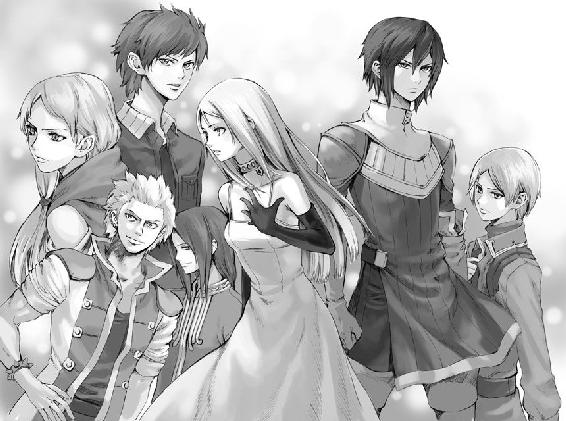
○シェリアスティーナ（ユーナ）
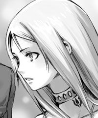
稀代の美貌を持つ聖女。わけあって、現在は町娘のユーナが身体の中に入っている。
○アシュート
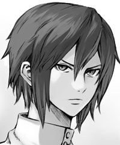
第一神聖騎士、シェリアスティーナの婚約者。人をあまり寄せ付けない雰囲気を持つ。
○イーニアス
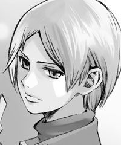
シェリアスティーナの不興をかい、準騎士から一般兵に格下げされていたが...。
○ジークレスト
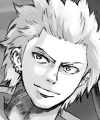
神聖騎士団副長。目の覚めるような金髪に長身。派手であっけらかんとした性格。
○ライナス
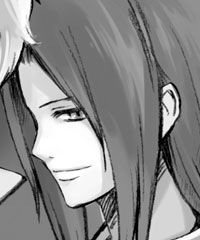
宰相補佐にしてシェリアスティーナの後見人。穏やかな外見に騙されがちだが、実は底意地が悪い...？
○ヨデル
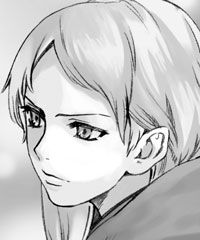
王宮に仕える女神官。シェリアスティーナを心底嫌っている。
○デュオ
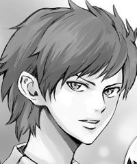
王宮で働いていた元料理人。シェリアスティーナに対する怒りは並々ならぬものがある。
人の道というものは、なべて儚いものである。
どれほどの栄華を誇った億万長者であろうとも。
どれほどの羨望を集めた絶世の美女であろうとも。
どれほどの信頼を寄せられた神の使いであろうとも。
それが人である限り、死は平等に訪れる。
だからこの日、一人の娘に起こった出来事も、決して普遍を揺るがすようなものではなかった。
彼女もまた逃れられぬ道の果てに到達してしまったまでのこと。
ただ人々は嘆くであろう。その身にとっては、あまりに唐突で、残酷であると。
『けれどあなたは、まだ歩みを止めることはないでしょう。道の果てのその向こう側に、微かにまどろむ光が見える限り』
【１】
ユーナの日常は、唐突に失われた。
その日ユーナは、すっかり見慣れた石畳の大通りを歩いていた。軒を連ねる店先を眺めつつ、目当ての薬草市場へと向かう。途中顔なじみの店主が陽気に挨拶を寄こすと、ユーナもそれに応えて片手を挙げた。ゆっくりとした足取りで、ちょうどその角を曲がったところだった。
その身になにが起こったのか。
思い返せば、恐ろしいほど鮮明に浮かんでくる。若い女性の悲痛な叫び声と、その後に気がついた馬のしめった荒い息、そして甲高いいななき。目の前いっぱいに広がる大きな馬車。
そして最後に見たのは、御者の見開かれた大きな瞳だった......。
──自分は、馬車に轢かれて死んだのだ。
ユーナはぼんやりとその結論を導き出した。
今、自分はまったく見も知らぬ真っ白な世界に一人佇んでいる。
そうと気づいたのはつい先ほどのこと、それまでは事態が呑みこめず、途方に暮れて随分と長い間ただぼうっとしていた。景色と同じく真っ白になった頭の中が少しずつゆっくりとこの現実を理解し始めていく。そしてその先に見つかったのは、「死」という非常に無情な結論なのであった。
短い人生だった、と思う。なにせまだ十八年しか生きていない。やり残したこともたくさんある。むしろやり遂げたことの方が断然少ない。別になにか崇高な目的を持って日々を過ごしていたわけでもないのだが、それでもやり切れない気持ちになるのはどうしようもない。
（もしかして、それでこんな不思議な場所に来ちゃったのかな。未練があるようなないような、中途半端な気持ちだし。だから、あの世にも行けないのかも）
ぐるり、ともう一度辺りを見回してみる。
──やはりなにもない。辺り一面真っ白で、上も下も分からない。ユーナは完全に白い世界に一人取り残されているのだった。
（ああ......、どうしよう）
どこに焦点を定めればいいのかもわからず、空ろな瞳でただ前方を眺めてみる。しかしそれで事態が好転しそうな気配はなかった。
（ええと、これはどういうことなんだろう。もしかすると、これがあの世なの？ 天国っていうところ？ 教わってた感じと全然違うけど......。一人きりで、私、どうすればいいんだろう。死んじゃったりしたから、こんなわけのわかんないところに来ちゃったんだ。というかそもそも、なんで私、死ななきゃならなかったの？ ごくごく普通に生きてきたのに、どうして？ 私はこの若い身空で生を絶たれるほどの深い業に身を染めていたのでしょうか、主よ──）
ユーナはじわじわと混乱状態に陥りつつあった。震える右手を口元に添え、再びせわしなく辺りに視線を走らせる。
（誰か、誰か！）
果たしてその思いが通じたのかどうか、ユーナの瞳は遠くに黒い影を捉えた。
遥か向こうに、誰かが一人で佇んでいるようだ。
初めからそこにいたのだろうか。いや、確かについ先ほどまではいなかった。こんなに白い世界で物影を見落とすはずがない。
だが確かに人がいる。一人じゃない。もしかしたら自分と同じように戸惑っている人かもしれない。そう思うと一気に安心感が広がった。歩み寄ろうとする足が、真っ白な地を蹴る。
「あの！」
息を弾ませ女性の側まで走って行った。近づくほどに相手の姿がはっきりしてくる。ゆったりとしたワンピースを身にまとい、やや俯きがちな女性は、その長い髪のために表情が見えない。だらんと下げられた白い両腕から、まだ歳若いのだろうということが察せられた。
「あの......、こ、こんにちは」
数歩離れたところで立ち止まり、ユーナは女性に声をかけた。なんと話しかければいいか分からなかったのだが、さすがにこの場で挨拶から入るというのもおかしな話だった。
「えっと、ごめんなさい。私、気がついたらここにいたんですけど、あなたは？」
まるで無反応だ。それに少しひるんだが、努めて怯えを出さぬように話しかけた。
しかし相手が動く気配はない。
「あの、その。突然質問しちゃって申し訳ないんですけど」
「──い」
「え、」
確かに相手が口を開いた。しかしかすれたような声でうまく聞き取れない。もう一歩近づき、耳をそばだてる。
「あなたが、憎い」
えっ、とユーナは一瞬呆けた。女性の発した言葉の意味が理解できなかったのだ。やや間を置いてやっとその意味を飲み込みかけた時、突如大きな光が女性を包み、それが砂のように細かくなって、その輪郭を一気に崩してしまった。目の前の相手が光の粒と化してしまったのである。
ユーナはまったく動けなかった。今度こそ何が起こったのか分からない。驚きのあまり目を見開いているうちに、残された光の砂も宙を舞ってやがて見えなくなっていく。
しかしそれだけでは終わらなかった。
消えゆく光の砂が再び力を取り戻し、ふわりと浮かんでユーナの頭上に舞ったのだ。
ぼんやりと浮かんだ光はいくつもあった。決して強いものではなく、今にも消えてしまいそうな儚い光だ。
「な、なに？ なにこれ」
ユーナは思わず後退ったが、この空間には逃げる場所も隠れる場所もない。
『ユーナ。馬車に轢かれた可哀想な娘の魂』
突然、辺りに声が響いた。
男とも女とも区別のつかない不思議な声音。ユーナは息を呑んだ。
『彷徨うあなたの魂をここへ連れてきたのは私たちです』
「あ、あなたは誰？ どこにいるの？」
『今はもう名も無き存在。私たちはここに、あなたの側にいます』
「どういう意味？ わけが分からないよ！」
『落ち着いて。どうか、落ち着いて聞いてください。時間が無いのです』
いつしか涙目になっていたユーナは、それでもどうにか口をつぐみ、宙に浮かぶ光の玉を見つめた。今ここで縋れるものは、どうやらこの光の玉だけだ。
『ここは天国でも地獄でもない、何物でもない場所。力を貸してもらいたくて、あなたをここに呼んだのです』
力を、貸す？ もはや死人である私が？ ユーナは怪訝そうに眉をひそめた。
『ユーナ、あなたは聖女シェリアスティーナのことを知っていますね？』
「聖女、シェリアスティーナ？」
『そう。あなたの世界で奉っている、ヴィーダ神の遣わせし神の代弁者。首筋にその印がある娘を、代々崇めているでしょう』
ユーナは戸惑いながら頷いた。その名を知らぬ国民はいない。
「それは、もちろん知ってます。今の代の聖女がシェリアスティーナ様だということも。例えどんな田舎町でも、それは常識としてみんな認識していますから」
『それでは、聖女の役割についても知っていますね。聖女は代々、国の定めた第一神聖騎士と結婚し、二人で一生国に仕えるという慣わしがあります。その務めを果たすことが、そのまま国の繁栄へ結びつくと考えられています』
ユーナは再び頷いた。その話もこの国では常識だ。分からないのは、それが今の自分になんの関係があるのかということだ。
『その聖女シェリアスティーナが』
声が不意に悲しみを帯びたような気がした。
『入水自殺を、図ったのです』
「──ええっ？」
ユーナは驚きのあまり声を失った。人としては誰よりも神に近い存在である聖女が、自殺！ あまりにも衝撃的な出来事だ。未だかつてそのような事態が起こったことなど、聞いたことがない。
「そ、それで？」
『不幸にも彼女の今回の行動を知る者はいません。今まさに、彼女の命の灯火は消えていこうとしています』
「そ、そんな！」
『けれどそれを見過ごすことはできません。恐らくは、自ら命を絶った聖女に後継者は現れないでしょう。そうなれば世に様々な災いが降りかかるのは必至。彼女の命をこのまま見捨てることはできないのです』
つまりは、シェリアスティーナに死なれては困るということだろう。それもそうだ、聖女が自殺など、まさに前代未聞の出来事である。
『そこで私たちは、持てる力を費やして、シェリアスティーナの命を繋ぐことにしたのです。とはいえ、人の生死を簡単に操ることは私たちにもできません。身体から離れかけた魂を再び定着させるのは非常に難しい。再び彼女が目覚めるには、長い時間がかかるでしょう。それまでの間、抜け殻となる身体が先に朽ちてしまいます。そこで、ユーナ、あなたの力が必要になるのです」
「えっ、わ、私？」
唐突に呼びかけられて、ユーナは瞠目した。今の話に自分がどう絡んでくるのか想像もつかない。
『ユーナ。あなたには、シェリアスティーナの魂が眠りについている間、その身体に入って代わりに生活してもらいたい』
......
............
「──なっ......えええええ!?」
『魂の抜けた身体をそのままにしておくことはできません。とはいえ、今すぐ彼女の魂を元に戻すこともできない。先ほども言ったように、彼女には時間が必要なのです』
理屈は分かる。いや、分からないような気もするが、分かった気になっておいてもまあいいだろう。だがしかし、なぜ自分がそんな大それた役目を負わなければならないのか。それだけは全くもって納得できない。
『これは奇跡と呼んでもいいかもしれません』
奇跡？
『シェリアスティーナが自殺しようとした瞬間と、あなたが馬車に撥ねられた瞬間が、ぴったり符号していたのです。それによってある種の歪みができました。そのためあなたの魂とシェリアスティーナの身体とを繋げることが可能になったのです。私たちの力では、あなたの魂を留めるのは一年がやっとですが』
「ま、待って下さい！ そんなの絶対に無理ですっ。聖女になれって言うんですか？」
『そうです。聖女シェリアスティーナとして、寝て、起きて、食事を摂り、笑い、怒り、悲しみ、喜んでください』
「だって私、ただの平民なのに！ 神の遣いだなんて、務まりません！」
『神の遣いというのは人々がつくり上げた虚像に過ぎません。実際の聖女は、ほとんど力を持たぬか弱い人間。他の人々となんら変わるところはないはずなのです』
「そ、そういう問題じゃないです！ だって実際聖女様は私たち平民にとって雲の上の人で、一生会う機会もないような人で、私なんかじゃとても......」
『ユーナ、どうかお願いです。あなたにしか務まらないのです。シェリアスティーナを見捨てないであげて』
「そ、そんな」
そんな言い方はずるいではないか。しかし、自分は断れるような立場にないことも薄々と理解し始めていた。もともとすでに自分は死んでいく身だ。たとえ死後にどんな世界が待ち受けていようとも、それに不平を唱えることなどできないのだろう。きっとどんなことでも甘んじて受け入れるしかない。それならば......。
『引き受けて、くれますね？』
「......」
それは質問ではなかった。
『期間はわかりません。ただし長くとも一年。それまでの間、どうかよろしくお願いします』
任せてください、などとはとても言えない。心の整理はまったくつかないままだ。ただ、拒否することはできないという現実だけがユーナの胸にどっかりと腰を下ろした。
『ああ、もう時間がありません。ユーナ、どうか忘れないで。私たちはずっとあなたのことを見守っています』
「待って。どうしてあなたたちはシェリアスティーナ様のことを......。あなたたちは、誰なんですか？ あなたたちは──神様、なのですか？」
浮かんでいる光が今にも消えそうに揺らめいた。
『いいえ、私たちは神ではありません。私たちは──』
皆まで聞けぬうちに、唐突にユーナの身体はまばゆい光に包まれた。眩しすぎてなにも見えない。白の世界からどんどん意識が遠ざかっていく。
待って、待って。
その声は誰にも届かぬまま──突然ユーナの世界は暗転した。
【２】
さらさらと、心地の良い感触がある。
少し、冷たい。けれど柔らかく身体を撫でていくその優しさは、ユーナを安心させた。
「......ん......」
ユーナは重い瞼をゆっくりと開き、ほんの少し顔を上げた。
まだ焦点が合わない。ぼんやりと視界に映るのは、岩肌だろうか？ そういえば、ごつごつした荒い感触が身体を受け止めている。
今、自分はどこにいるのだろう？ なにをしているのだろう？
少しずつ意識がはっきりしてきて、ユーナは緩慢な動作で上体を起こした。──身体がとても重い。それでもどうにか身をよじり、辺りを見回す。どうやら自分は、川辺にいるようだった。
身体のほとんどは水に浸かっている。上体だけが川辺の苔むした大石にもたれかかり、そのまま意識を失っていたようだ。長時間水の中にさらされていたのだろうか、手足はすっかり冷えきっていた。
辺りは欝蒼とした森。背の高い木々の合間からは、漆黒の夜空が広がっている。塗りつぶされた黒に遠慮するように、ちらほらと星が瞬くのみで、月の姿は見えなかった。
水を含んで重くなった白いワンピースをかき集め、ユーナは川から這い出した。
「どこだろ......、ここ」
呟いて、ユーナは不安になる。
森の中の小川。それは漠然と理解したものの、自分がなぜこのような場所にいるのか、そしてここでなにをしていたのか、皆目見当がつかなかった。散歩にでも来たのだったか。しかし急な斜面に囲まれ、あちこちで岩肌がむき出しになっているこのような場所、散歩に来るにはあまり相応しくないだろう。
ではなぜ自分は──。
自分──、私。......私？
はっとしてユーナは顔を上げた。
唐突に思い出したのである。ものすごく重要な出来事を。
「そうだ......そうだ、私、死んだんだっ！」
そしてその上、やはり同じように死にかけた赤の他人の身代わりとして、つかの間の生を得た......いや、押しつけられたのではなかったか。あの白い世界での出来事が、どんどん頭の中に蘇ってくる。
「私は──ユーナじゃ、なくなった」
呟いて、ユーナは愕然とした。かじかんだ両手を広げてまじまじと見つめる。しかし年頃も変わらぬ娘の手のひらだったので、さして以前との違いを見つけることはできなかった。この暗闇ではなおさらである。月も出ていないこんな夜では、水面に顔を映して確かめることもできやしない。諦めて手を下ろすと、その手になにか小さな塊が触れた気がした。反射的に手を引き視線を落とす。身にまとうワンピースに小さな黒い塊がくっついていて、それがかさりと布地を這うのが目に入った。
「きゃっ」
とっさにユーナは手で払った。地面に転げ落ちた塊をよく見ると、それは毒虫だった。噛まれれば命を落とすことさえあるという。恐ろしくなって、ユーナは重い身体を無理やり動かし立ち上がった。毒虫から逃げるように川辺を離れる。岩に足を取られ何度も転びそうになった。しかしそんなユーナを支えてくれる人はいない。
（こんな場所にいたくない。早く離れたい。とにかく誰かに会いたいよ）
そう、まずはどうにか人里までたどり着かなくてはならない。自分がどんな姿になっているのか、シェリアスティーナがなぜこんな最期を選んでしまったのか、それを知るにもなにをするにも、まずは誰かと出会わねば話にならない。
「どうしよう、ここ、沢かなにかかな？」
それならば、森の斜面を上っていけば遊歩道にでも出るかもしれない。そこまで出られればあとは道なりに歩いて行けるはずだ。それにしても、生き返って早々、こんな重労働をするはめになってしまうとは思いもよらなかった。だが、今そんなことで文句を言っていても始まらない。ユーナは斜面に寄って、土の固さを確かめた。傾きは緩やかだし、土も柔らかすぎない。草や木の幹を掴みながらであれば上れぬこともなさそうだ。
（よし）
気合を入れて、取っ掛かりとなる最初の草に手を伸ばした──その時。
遠くから馬のいななきが聞こえてきた。続いて、かすかな男の人の声。最初はなにを言っているのか聞き取れなかったが、しばらく耳を澄ましていると、どうやら聖女の名前を呼んでいるらしいことが分かってきた。──探してくれている人がいたのだ！
だが馬の足音とその声は、近づいたり遠ざかったりを繰り返していて、なかなかこちらにまで寄ってはくれなかった。このままでは気づかず行ってしまうかもしれない。ユーナはそう思い至ると迷わず大声を張り上げた。馬車に轢かれる前からひっくるめて、人生でこれまでに出したことのないほどの大声だ。
「私はここにいます────っ！ 助けて────っ！」
......駄目だろうか？ 目の前の土の壁に声が吸収されてしまうのか、どうにも遠くへ響いてくれない。
「お願い───っ、気づいて───！ 誰か────っ!!」
半ばやけになってしばらく声を上げ続けていたところ、どうやら向こうがユーナに気づいてくれたようだ。こちらに駆け寄ってくる馬の足音が、先ほどよりも随分はっきりと耳に入ってきた。
「わ、私はここですっ！ お願い、気づいて！」
「──シェリアスティーナ様!?」
今度こそはっきりと、その声を聞き取ることができた。低くて甘い声は今は切羽詰っているが、それでもユーナにとっては神の慈悲に満ちた祝福とさえ感じられた。
ひょい、と斜面の上から姿を現す騎乗の男。暗闇の中ではその影を捉えるだけで精一杯だったが、向こうもしっかりとユーナを見つけてくれたようだった。
「そのようなところに......、少々お待ちを！」
声の主は鋭く告げると、ひらりと馬から飛び降りて素早く斜面を下ってきた。その身のこなしから、しっかりと訓練を受けた者だと知れた。
あっという間にユーナの側までたどり着き、その両肩を強く掴んで引き寄せる。
「ご無事で!?」
「は......はい」
あまりにも真剣な瞳で、彼はまっすぐユーナを見つめてきた。漆黒の瞳。鋭く、何者にも揺るがすことのできぬような芯のある瞳だ。思わず怯んでしまうほどに。
男は一瞬でユーナを上から下まで眺め、大きな外傷がないことを確認した。密かにほっと息をついたが、その身が全身ずぶ濡れで泥に塗れていることに気がつくと、露骨に眉をひそめる。
ユーナはユーナで、やはり男の様子をまじまじと見つめていた。瞳と同じ漆黒の髪は短く整えられていて、すっと鼻筋の通った端整な顔だちの若者である。細かな刺繍のほどこされた上着は上等そうで、そこらの平民とはとても思われなかった。なにより町で出会おうものなら思わず一歩身を引いてしまうような高貴な雰囲気を彼自身が身にまとっている。特に身分のある人物なのだろうと思われた。
「お怪我はありませんか？」
「は、はい。大丈夫、です」
「とにかく、一刻も早く王宮に戻りましょう。私に掴まってください」
そう言うと、男はさっとユーナを抱え上げ、下ってきた時と同じくらいスムーズに斜面を上っていってしまった。あまりに素早く上るので、ユーナは情けなくも必死で男にしがみつくほかなにもできない。
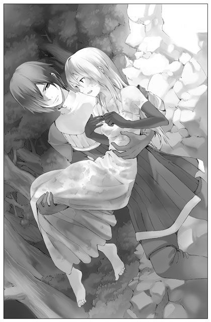
男は待たせてあった馬にユーナを乗せた。続いてその後ろに同じように自分が飛び乗る。そして有無を言わせずそのまま馬を走らせた。こうした一連の動きを見ていると、どうやら彼は怒っているらしいということに気がついた。
（そ、それも当然か。行方不明になってた聖女を探してくれてたみたいだし。心配もすれば、怒りもするよね）
「......供もつけず、一人で森に行くと言い出したそうですね」
やはり怒気を含んだ声で、男は呟いた。それがあまりに冷たい響きを伴っていたので、ユーナはびくりと肩を震わせる。
「そして日が落ちても戻られず。皆がどれ程心配したとお思いですか」
そうと言われればあまりにも肩身が狭い。ユーナにとっては全く身に憶えのない非難ではあるが、今自分は確かにシェリアスティーナなのだから、それも甘んじて受けるべきなのだろうと黙っていた。
「金輪際、このようなことのございませんように。心からお願い申し上げます」
ごめんなさい、とユーナは蚊の鳴くような声でつぶやいた。しかし走る馬が風を切る音でその呟きはかき消されてしまったようだった。ならばこれだけは伝えなければと、ユーナはぎこちなく身をよじって、後ろで手綱を引く青年を見上げた。
「......あの、あんなところまで探しに来てくれて、どうもありがとうございました。とても感謝しています」
すると彼は、少し目を見開き驚いたような顔をした。それからクッと顔を歪めて皮肉に満ちた微笑を浮かべる。
「──それはいったいなんの真似です。新手の嫌味かなにかですか？」
今度こそユーナは固まって、見下すような青年の視線をただ受け止めることしかできなかった。
王宮の大門にたどり着くと、辺りは騒然としていた。
憔悴した人々の表情。苛立ちを見せ、不安げに瞳を揺らし、あちこちを行ったり来たりしている。身分の高そうな人物も、なんということのない一門番も、皆一様に疲れ切っているのがありありと窺えた。
そんな中、馬に乗って帰還した二人の若者。彼らを発見したときの人々の反応はすさまじかった。溜息の入り混じった歓声を上げ、中には緊張の糸が切れて泣き出す者もいる。ユーナはそのあまりの出迎えぶりにたじろいだ。まさか、聖女の行方不明がこんなにも大きな混乱を招いていただなんて。聖女という存在の大きさをまざまざと見せつけられたような心地だ。だが確かに、聖女が消えたとなれば国の一大事だろう。これでもしもその上死んでしまったとなれば......その時の混乱ぶりは想像するだに恐ろしい。
青年の手を借りて馬を降りたユーナの前に、一つの影がゆったりと歩み寄った。泥で重くなったワンピースの裾を気にしていたユーナは、突然差しかかった影に気づいて顔を上げる。
それはまだ若い女性であった。身にまとっているのは深い色のローブだ。暗がりのためよく分からないが、紫だろうか？ 隣に立つ漆黒の髪の青年もそうだが、彼女もただの使用人とはとても思えぬ圧倒感があった。それになにより、くっきりとした目鼻立ちで非常に美しい顔立ちをしている。だが、どこか近寄りがたい雰囲気があるのもまた特徴的だった。
「無事だったようですね」
抑揚のない声で女性が告げた。言葉は隣の青年へ向けられているが、冷ややかな視線はユーナを捉えている。
「ええ、ヨデル殿にもご心配をおかけしました」
漆黒の髪の青年にヨデルと呼ばれた女性は、心配していたとは思えぬほど落ち着き払った様子である。
「シェリアスティーナ様」
そんなヨデルに声をかけられ、ユーナはつい緊張して姿勢を正した。もちろん自分のことを呼んでいるのだろう。分かってはいるが、なんとも言えぬ違和感がある。
「は、はい」
「あなたお一人のために、どれだけの者の時間が失われたかお分かりですか？ 皆、自身の仕事を後回しにしてあなたを探していたのです。一体なんのためにどこへ行かれたというのですか。納得のできるご事情がなければ、この者たち全て、黙って引くことなどできませんよ」
「そ、それは、その」
ユーナは戸惑った。事情など話せるはずがない。自殺する場所を探しに森へ出たなどと言おうものなら、周りの混乱はそれこそ収拾不能になってしまう。第一、なぜ聖女が自らの命を絶とうとしたのかは、こちらが聞きたいほどなのだ。
うまく言葉をつなげられないユーナを、ヨデルは眉を寄せて睨みつけた。恐ろしくなって思わず瞳を伏せる。それと同時に、自分の中にふつふつと怒りが湧き起こってくるのを感じていた。冷ややかな怒りだ。その怒りを自覚して、ユーナは更にうろたえる。──なんだろう、この感覚。
（これは、私の気持ちじゃない）
怒り、という感情はもちろん知っている。明らかな敵意を見せるヨデルにそんな感情を抱いたとしてもおかしくはない。だが、それが自分の気持ちだとはなぜか思えなかった。心がばらばらになってしまったみたいだ。知らない自分が、今、ヨデルに怒っている。
「ヨデル殿、話はまた明日にでもできる。今は休んでいただきましょう」
黙りこくったユーナに代わり、青年が話を切り上げた。ヨデルもそれ以上強く言うつもりはないようだ。
「皆の者、聖女シェリアスティーナ様は無事お戻りになられた。大変お疲れのご様子ではあるが大事はない。各自持ち場に戻り、仕事を再開せよ。伝令、速やかに捜索隊に帰還命令を伝えるように。以上だ」
青年がよく通る声で告げると、まもなく場の混乱は収まった。よほど権力のある人物なのか、誰も口を挟むことなく、言われたとおり散り散りに持ち場へと戻っていく。聖女はどこに行っていたのか、なぜこんなに汚れた格好をしているのか、問い質したいことはたくさんあるだろうに、誰一人として文句を言う者はいないのだ。感心しているうちに、ユーナは手を引かれ大門の奥へ連れられた。赤々と燃えるたいまつがいくつも立ち並ぶ中を縫って歩き、宮殿の入り口に控えていた侍女たちに預けられる。青年は名も告げず──向こうにとっては初対面ではないから当然だが──冷ややかにユーナを一瞥すると、「では失礼」と言葉も少なく立ち去ってしまった。
（な......なんなの？）
ユーナはどっと疲れを感じて息を吐いた。
いきなりよくわからない世界に投げ入れられたというのも原因だろうが、なによりもあの青年とヨデルという女性の刺々しい態度。それがユーナに突き刺さる。どうも彼らは、勝手に行方不明になったシェリアスティーナにただ怒っているのではないようだ。そんなものを超えた、憎しみのようなものさえ感じられる。青年は、あの沢での一瞬だけ、真っ直ぐな瞳を向けてくれた。しかしその後はただ侮蔑するような歪んだ視線を寄こすのみだ。
なにもなくてあの態度はないだろう。おそらく自分の与り知らぬところで彼らと一悶着あったに違いない。しかしそれを知る術は、今のところ無さそうだ。釈然としない気持ちはあるものの、どうにかそれを押さえ、ユーナは侍女に手を引かれるまま近くの部屋に入って行った。
間もなく部屋に初老の男性が入ってきた。医者だという彼は、手際よくユーナの様子をチェックし、大した怪我をしていないことを確認する。非常に事務的で、「大変でしたね」の一言すらかけてもらえなかったが、聖女に容易く声などかけぬものかもしれない。最後に「具合の悪いところはございませんか」とだけ尋ね、ユーナが大丈夫だと答えると、さっさと部屋から退出してしまった。
そしてまた部屋の移動である。同じように侍女に案内され、だだっ広い浴室に連れてこられた。そういえば自分はびしょぬれ、泥だらけ。あまりに情けない格好をしているのは聖女として好ましくないに違いない。本当ならば、医者に診せるより先に風呂に入らせたいところだったのかもしれない。
突然「失礼します」と声がかけられ、侍女がユーナの服を脱がしにかかった。これにはユーナも驚いてしまう。つい先ほどまでただの平民に過ぎなかった自分が、人に手伝ってもらって入浴するなど！ それが貴族の常識だと知ってはいても、とっさに身を引いて拒んでしまった。
「シェリアスティーナ様？」
ユーナにいきなり身を引かれ、侍女たちは怪訝そうに眉を顰めた。
「あ、いえその、ひ、一人で大丈夫ですから」
おどおどとそう答えると、侍女たちは目を見開いて驚いた。
「どうかされましたか？」
「いえ、今日は一人で入りたい気分なので」
「どうかそのように仰らないでくださいませ。シェリアスティーナ様をお一人にすることはできません」
それには一理あった。無理に一人で出かけると言い出し行方不明になった聖女だ。またなにか奇行をしでかさないとも限らない。見張りという意味でも、誰かが側にいなければならないのだろう。しかし。
「あの、お願いしますから。一人で入らせて」
「ですが」
「大丈夫だから！」
思わず強い声を出すと、さっと侍女たちの顔に恐怖の色が浮かんだ。そしてすぐに、大仰に頭を下げ「申し訳ございません」を繰り返す。
「あ、あの」
「大変失礼いたしました。私どもの気が利かぬばかりに。すぐに他の者をお呼びしますので、どうぞ気をお静めくださいませ」
気を静めるもなにも。突然の侍女たちの怯えようにユーナの方が面食らってしまった。顔面蒼白の侍女たちは必死に許しを請うてきて、下手に声をかけられる状況ではない。戸惑ううちに侍女の入れ替えが行われてしまい、こうなればもはや再び「一人で入る」などと言える状態ではなくなった。そうしてユーナは結局全てを侍女たちに任せ、顔から火が出るほど恥ずかしい思いをしながら入浴を済ませることになったのだった。
ユーナがやっと一人きりになれたのは、自室に戻った真夜中過ぎのことだ。
戻った、といっても、今のユーナにとっては初めて入る部屋である。やたらと広くて豪勢で、ユーナの実家がいくつも入ってしまうようなとんでもない部屋だった。家族総出で何百年働いたところでお目にかかれないような品々もたくさん並べられていて、こんな状況でなければはしゃぎまわるところだが、もはや感動する気力すらなく、天蓋付きの柔らかいベッドに身を投げ出し、大きな溜息をついた。
（疲れた......。ものすごく疲れた......）
右も左も分からぬ今の状態では、それも仕方ないことと思う。だが、これからそういう日々が毎日続くと思うと今からげんなりしてしまう。気負いのない町娘だった頃の自分が、さっそく懐かしくなって仕方がなかった。
（ああ、でももう戻れないんだよね。ユーナは、死んだんだから。本物のシェリアスティーナの魂が戻ってくれば、今度こそ私はあの世に召される。いなくなるんだ......、この世界から）
残酷なことを、とユーナは思う。あの時あのまま完全に死んでいれば。そう思うと、少しあの光を恨みたい気分にもなった。じわじわと近寄ってくる死への恐怖に苛まれる日々を送らねばならない自分が可哀相だ。しかしこうなった今、常に死の影を意識して暮らすことは避けようがない。とても、頭から離れてくれそうにもない。自分は死ぬ、自分は死ぬ、近い将来必ず......。
両親にも会えなくなるのは悲しかった。今の境遇が少し落ち着いたら、こっそり会いに行ってみようか。そう考えてから、すぐに首を振った。きっと両親は、ユーナが死んで悲しんでいることだろう。そんな両親に会いに行く？ 一体どんな顔をして？ ああそうだ、自分は親より先に死んでしまった親不孝者なのだ。とても合わせる顔なんてないじゃないか。
なにを考えても憂鬱になる。
ユーナはのそりと頭だけ動かして、広い部屋を見渡した。部屋の隅に大きな姿見がある。そういえばまだ一度も自分の姿を確認していなかった。ふとそんなことを思い出して、ユーナはそっとベッドを抜け出した。恐る恐る、鏡に近づく。緊張しながら姿見の前に立ち、ゆっくりと、顔を上げてみた。
そしてユーナは愕然とする。
なんだ、これは。これが人の姿なのだろうか？
そこには放心状態の絶世の美女が映っていた。透き通るような白い肌、くっきりとした紫紺の瞳。淡い金髪は真っ直ぐ腰の辺りまで伸び、キラキラと光り輝いているようにも見える。小さく形の良い唇は、今は驚きのためかすかに開かれていた。瞬きするたびに揺れる長いまつげは、人の目を釘付けにすることだろう。そして首もとには、聖女の証である「聖印」がしっかりと刻まれていた。
「うっ、わあ......」
確かに噂では聞いていた。聖女シェリアスティーナの美しさは、この世のどんな至宝にも勝るものだと。しかしそれは聖女を褒め称えるための美辞麗句の一つだろうと勝手に思い込んでいた。でも違う。単なるお世辞なんかじゃない。確かにこれほどの美女は見たことがない。先ほど会ったヨデルも美しかったが、それ以上だ。言うまでもなく、ユーナとは比べようもないほど全てが整い過ぎている人物だった。
「これが......、シェリアスティーナ様」
こんな天使のような女性を前にしながら、侮蔑の視線を向けたあの青年のことを思い出す。
この美貌だけで誰もがひれ伏してしまいそうなシェリアスティーナを、彼は憎んでいた。一体なぜ？
（──もうっ、考えても仕方がないじゃない。やめやめ。とにかく今日は、もう寝てしまおう。明日からまた大変なんだから）
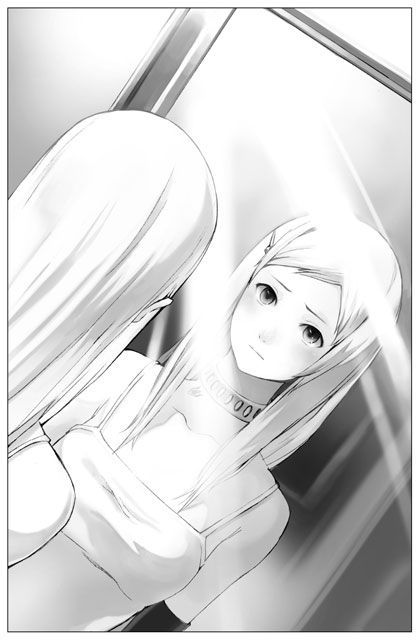
ふるふると首を振って、頭の中を切り替える。そう、明日からが大変なのだ。今のユーナには一人の知り合いもいない。周りは誰もが自分のことを知っている状態で、だ。遅かれ早かれ、周りにも不審の目で見られてしまうことだろう。けれどシェリアスティーナはいつか必ず帰って来る。帰って来たシェリアスティーナが、怪しまれることなく、すぐに場に馴染めるよう最善を尽くす。それが自分の役目なのだ。
今までの人生はもう終わった。そして新しい人生が今、始まったのだ。かつてユーナだった少女は、瞳を閉じ、しっかりとその事実を受け止めようとした。
【３】
この世界唯一の国家シベリウスには、代々聖女と謳われる乙女が王家に仕える慣わしがあった。この世界でたった一人だけ、世にも美しい娘に、首もとの聖印。それだけが聖女たる証の全てであった。貴族の生まれであろうと農民の生まれであろうと関係などない。その印さえもってすれば、聖女と認められ王宮に迎えられた。逆に言えば、聖印がなければ何人といえど聖女とは認められぬのである。
前代の聖女が息を引き取ると、その翌年に必ず新たな聖女が生まれた。国のきまりでは、その聖女が十五歳を迎える前に見つけ出して、王宮に迎えなければならない。そして王宮入りと同時に第一神聖騎士の位を与えられた若者と婚約の儀を交わす必要があった。それができねば、王国に不幸が降りかかるというのである。このシベリウスの長い歴史で三度だけ、聖女を迎えられなかったことがあった。一度目は大洪水に見舞われ国民の四割が死亡し、二度目は王国の中で最も力のある三つの勢力がぶつかりあい、その内戦で三勢力とも壊滅した。三度目は流行病が蔓延し、やはり国民の四割が死亡したと伝えられている。そういうことがあったから、聖女の王宮入りは国の権威の問題だけにはとどまらず、国民全てが心底待ち遠しく思う大事な行事なのであった。
このように、国にとってなくてはならない存在の聖女であったが、彼女たちにはそれぞれ不思議な力が備わっていた。物事を予見する力に長ける者もあったし、人の心を読むことのできる者もあった。しかし全ての聖女に共通していたのは、死が近づくと首もとの聖印が消えてしまうということである。聖印が消えるとその三年以内に、必ずその聖女は儚くなった。そのため王国は、それを目安に次期第一神聖騎士を決定することを常とした。現聖女の聖印が消えた頃に生まれた子供を、次代の聖女の夫にするべく神聖騎士として育て上げるのである。これまでは、そうしてうまくいっていた。聖女は十五歳までに王宮に迎えられれば問題ないとはいえ、たいてい幼少時に見つけ出され王宮へと運ばれていたし、神聖騎士に至っては、生まれた時からその役目を負って育てられる。自然と二人の心構えは強固なものとなり、絆も深まっていくものだった。
しかし今回ばかりは勝手が違った。
まず聖女を見つけるのに非常に手間取ってしまったのである。シェリアスティーナは捨て子だった。愛情を注がれることもなく、寂れた孤児院の隅っこで成長したような子供だった。院長とその妻の二人きりで営んでいた小さな孤児院では、数多くの子供たちをただ「生かす」のに精一杯で、シェリアスティーナにだけ特に目をかけることはできなかったのだろう。首もとの聖印に気付くまで長い長い時間がかかった。たいていは親自身の申請によって聖女が発見されるが、名乗り出る者がいないとなれば捜索は困難を極めたのである。十四歳になり美しく成長したシェリアスティーナによからぬ思いを抱いて近寄った院長が初めてその首もとに気がついたときには、すでに国全体に絶望のムードが漂っていたものだ。なにはともあれ、どうにか聖女を発見できたシベリウス王国は沸きに沸いた。シェリアスティーナは国中に大歓迎され、その恵まれぬ生い立ちも手伝って大いに国民の関心を惹いた。更に歴代の聖女の中でも抜きん出るほどの美貌が誰をも魅了した。同じく第一神聖騎士として手塩にかけて育てられた少年もたくましく成長しつつあり、それだけで人々は皆、王国の未来に光を見たのだった。
──が、シェリアスティーナが王宮で大人しく過ごしていたのは最初の二年だけだった。十六歳になった頃、彼女は突然変わった。今までの大人しさが嘘のように、とにかく、変わったのである。
彼女の変化は、王宮の者しか知らない。民にとってシェリアスティーナはいつでも素晴らしい神の遣いなのだった。
だがそれを、今のユーナが知るはずもなかった。
朝目が覚めると、立派な装飾に彩られた天井が目に入り、ユーナは驚いた。ここはどこだ、ととっさに視線を巡らせる。目に入ったのは、ベッドの天蓋だったようだ。ひらひらとした薄いレースが辺りを覆い、窓辺から入るそよ風に揺れている。自分はその真ん中に身を沈めていた。
（あ、そうだ）
さすがに昨日川辺で目が覚めたときより素早く状況を思い出すことができた。自分はシェリアスティーナであり、ここはその豪華な自室。昨日森から救出されて、いろいろと思い巡らせているうちに眠ってしまったのだ。
「おはようございます、シェリアスティーナ様」
無感動な侍女の声がした。どうやら窓を開けたのは彼女らしい。
一瞬誰に声をかけているのかと呆けてしまったが、すぐに自分のことだと気づいてユーナは顔を上げた。......今しがた状況を確認したばかりだったのに。自分はシェリアスティーナだ、シェリアスティーナだ。呪文のようにユーナは唱えた。
「おはようございます」
ユーナが律儀に頭を下げると、侍女は信じられないものを見たように顔をこわばらせた。丁寧な言葉を使っているのがいけないのだろうか？
「すぐにお召し替えの者を呼んでまいりますので、少々お待ちくださいませ」
侍女はなんとか言葉にしたという面持ちだ。これ以上怖がらせると悪いので、ユーナは頷くだけにとどめておく。それにしても、お召し替えとは。入浴の時に限らず、やはりここでも侍女の手を借りることになるのだろうか。
もちろん予感は的中した。間もなく二人組の侍女がやってきて、衣装一式の載ったトレイを厳かに台の上に置く。
「シェリアスティーナ様、失礼いたします」
やはり努めて無関心に告げる侍女たち。毎朝こうなのか。それはさすがに勘弁してほしい。
「あの、私、一人で着替えたいんだけど......」
昨日と同じ結果になるだろうかと思いつつ、それでもやはり抵抗せずにはいられなかった。
「お一人で、ですか？」
「ええと、その。あなたたちが邪魔とかそういうことは断じてないんだけど。それは信じてね。ただ、今更だけどどうも人に手伝ってもらって着替えるっていうのが......」
なるべく二人を刺激しないよう言葉を選ぶが、やはり駄目なようだ。侍女たちは目を白黒させてまごついた。
「あ、あの、なにかシェリアスティーナ様のお気にさわるようなこと、いたしましたでしょうか」
「ち、違うってば！ ほら、あなたたちも、人に着替えさせてもらうのってなんだか気まずい思いしない？ 私、今までは当たり前のように受け入れてたかもしれないけど、本当はちょっと恥ずかしかったの」
ああ、駄目だ。言えば言うほど、深みにはまる。凍りついたように動かない侍女たちを見て、ユーナは今回も引くしかなかった。それ以上は無理を言わず、非常にぎこちない手つきで着替えさせてくれる侍女たちに身を委ねる。支度が終わると、侍女たちは逃げるようにして部屋をあとにした。
（うーん、なんだかどうも、恐れられてるなあ）
さすがのユーナもそれには気がついた。侍女たちは皆、自分を恐れている。無駄な係わり合いを持とうとはせず、最短時間で仕事を終えて去ろうとするのだ。
（シェリアスティーナ様って、なに？ そんなに怖い人だったのかな）
どうもそのようである。だから少しでもこちらが下手に出れば、逆に化け物を見るような反応を返されてしまうのかもしれない。
（一体どんな人だったんだろう、聖女様）
やれやれ、と息をついていたところへ軽いノックの音がした。どうぞ、と短く言葉を返すと、間もなく扉が開き、一人の男性が緩やかな動作で部屋に入ってくる。
その男性の姿を認めた途端、心臓を鷲掴みにされるような心地がして、ユーナは一瞬息が止まった。
（まただ！）
早鐘のように波打つ心臓に戸惑いながら、ユーナはうつむき眉根を寄せた。昨晩ヨデルという女性に抱いた怒りの感情と同じだ。自分の知らないところで生まれてくる感情。なぜ自分は今、こんなにもうろたえているのだろう？ この感情は一体なんだというのだ。全く理由がわからない。
少しずつ動悸が治まってきたので、ユーナは気を取り直して顔を上げた。部屋に入ってきた男性は二十代半ばを少し越えたところだろうか。肩を越すくらいの深い茶色の髪を一つに束ね、無造作に後ろへ流している。穏やかな笑みを浮かべながらこちらへ歩み寄ってくるその姿は優しげではあるものの多少の重圧を感じさせた。とはいうものの、考えてみれば、ここへ来て初めて人の笑顔を見たような気がする。
「どうやら本当に無事だったようだね」
その第一声に驚いた。あの偉そうな青年やヨデルでさえ自分に対しては敬語を使っていたのに、この人は。もしかして国王だとかそれに連なる位の人物なのか。
「ん？ どうした」
「いえ......」
「具合は悪くないのかい」
小さく頷いておく。
「だが」
「？」
「どうも様子がおかしいな」
ぎくり、と身体をこわばらせた。それがますます相手の疑念を深めてしまったのか、彼はすっと目を細めてこちらの様子を注視する。
「シェリア」
「はい」
聖女を愛称で呼ぶのか、という驚きもある。誰だこれは？ もしかしてシェリアスティーナの愛人なのだろうか。
「一体どうした、牙の抜けたライオンみたいだぞ」
なんなのだ、その表現は。むっと睨みつけてやると、相手は面白そうに微笑んだ。
「そうそう、それが君らしいね。だがもっと君らしくと言うのなら、『なんですって、誰に向かってそんな口を利いてるの！ 塵にされたいの？』くらいは言ってほしいところだな」
その台詞に、ユーナは絶句した。
「やはりおかしいな」
「......」
「シェリア、私の名前を言ってごらん」
「え」
「まさか忘れたなどとは言わぬだろう」
「ええと」
「シェリア」
「......」
駄目だ、彼はごまかせない。ユーナは直感でそう悟った。ほんの一言二言の会話でこちらの様子がおかしいと見抜かれてしまったのでは、降参するしかなさそうだ。
「......あの、わからないんです。ごめんなさい」
すまなさそうに答えると、相手はただ一度片眉をぴくりと上げて押し黙った。一体なにを考えているのか微塵も感じさせぬ不思議な男だ。よく分からない。
しばらくの沈黙ののち、再び彼は口を開いた。
「記憶喪失か？」
なるほど！ とユーナは膝を打つ思いだった。それはいい。それなら多少の不自然も大目に見てもらえそうだ。森へ散歩に行き、足を滑らせ沢に落ち、その衝撃で記憶を失った。よし、それでいこう。
「どうも、そうみたいなんです」
「そうかな？」
自分で振ったというのに、男は軽く首をかしげ、ユーナのすぐ側まで歩み寄ってきた。無意識に両手を握り締めその様子を見守っていると、いきなりぐいと顎を掴まれ、顔を上に持ち上げられる。一体なにをと声を上げようにもなぜか抵抗できぬ妙な状況だ。甘い雰囲気など微塵もなく、むしろぴりぴりした空気が部屋を包んだ。相手は非常に真剣な表情で、じっくりとユーナの瞳を覗き込む。
「ただ記憶がなくなっただけ？ そうは思えないな。後ろめたい色をしているよ、その瞳がね。この私を謀ろうなどとは思わぬことだ。さあ、全てを白状してごらん。一体どういう風の吹き回しでそんな借りてきた猫のように大人しくなっているのか」
これは本気でやっかいな相手に出くわしたものだとユーナは内心舌を打つ思いだった。だがしかし、落ち着いて考えてみれば、これはこれでしめたものかもしれない。周りがすべて赤の他人という中でやっていくには限界があるというものだ。ならば、せめて一人くらいは味方につけておいた方がよいのではないか。そんな気になり──というよりそう思わざるを得なかったのだが──ユーナは観念して口を開いた。
「私──、シェリアスティーナじゃないんです」
そして訥々と語り始めた。シェリアスティーナの魂が非常に疲れきっていたこと、神がそれを大変心配されたこと、そしてしばらく魂の休息を取るべく彼女を預かっておられること。自分はその間彼女の身体を維持するために遣わされた全く別の魂であること。
自殺のことはもちろん言えなかった。あの光の正体はユーナにも分からないので神ということでごまかしてみる。それでもほとんどは事実をそのまま告げた。現実的に考えればとても受け入れてもらえそうにない内容ではあったが、相手は至極真面目に話を聞いてくれたので助かった。
一通り話し終え、ユーナはほっと息をつく。一人で抱え込むにはあまりにも壮大すぎて、耐えられないほどの話である。誰かにすべてを聞いてもらい、この重みを分かち合いたいと心のどこかでは思っていたのかもしれない。
男性はしばらく探るようにユーナを見据えた後、厳かに頷いた。
「まあねえ。ちょっと常識を逸脱しすぎている話ではあるが。確かに君はシェリアスティーナではないね。根性悪の『こ』の字も無い、純粋無垢な娘さんとしか思えない。演技としても、シェリアスティーナにはそんな澄んだ瞳はできないだろう」
信じてもらえるならば助かるが、それにしてもとんだ言い様である。
「あ、あの。あなたは一体？」
「ん？ ああ、私かい。そうだね、君はなにも知らないのだね。私はライナス＝ヴェントリスという。この国の宰相補佐をやっているよ」
「宰相補佐？」
やはりずいぶんと偉い人物なのではないだろうか。つい昨日まで平民をやっていたユーナには想像することも難しいが、この国の政治を動かすような人物の元で働いているのなら、相当地位ある身に違いない。
「そして、シェリアの後見人でもある」
「そ、そうだったんですか」
つまりはシェリアスティーナの親代わりということだろうか。それならばこの砕けた接し方にも納得がいく。
「まあ私のことはいいとして。君、シェリアの代わりにここで暮らすというが、どうやら性格も考え方も百八十度違うようだ。大丈夫なのか心配になるね」
「シェリアスティーナ様は、そんなに、その......、すごい方だったんですか」
「すごい、ね」
物は言いようだ、とライナスは面白そうに笑った。
「そりゃあもう、すごい方ですよ。彼女は非常に性格のひねくれた人物でね。誰も自分に手を出せないのをいいことに、やりたい放題もいいところ。君を見る皆の目もなんとも言えず微妙だっただろう？ そういうことだ」
「思いあたる節は確かにあります。皆すごく他人行儀っていうか」
それどころか、「他人行儀」などという言葉では片付けられないほどに冷たい態度を見せる人物もいた。
「あの、昨日私を見つけてくれた人のこと、ご存知ですか？」
「アシュート君のことかな？」
「ごめんなさい、名前も分からないんですけど」
「黒髪黒目の美青年だろう」
そう、たぶんその人だ。ユーナは小刻みに頷く。
「彼が第一神聖騎士様だよ。つまり、シェリアの婚約者ということだね」
「──ええ!?」
あの人が婚約者！ あんなに私に対して憎悪むき出しだったというのに？ 思わずユーナはのけ反った。
「も、ものすごく上手くいっていないんですね」
「そうだね、シェリアは彼に嫌われている」
「でも、どうして......？」
くす、とライナスは笑って首を振った。
「若い二人の痴情のもつれにまで首を突っ込むほど、私は野暮な男じゃない」
「す、すみません」
あまりに遠慮なく疑問を口に乗せすぎたと気づき、ユーナは縮こまった。
「おや、どうして謝ることがある？ これからシェリアとしてやっていくなら、そんなことでは務まらないぞ。ほら、もっと胸を張って」
「でも私、シェリアスティーナ様のことなに一つ知らないから、どうしていいのか」
そうだねえ、とライナスは顎に手を掛け考え込むような仕草をした。
「それじゃあシェリアスティーナの日常を少し話してあげようか」
例えば、と指を折って数え始める。
「侍女が髪を結う時は、『ちょっとあなた、引っぱらないで。痛いじゃないの』と横目で睨む。食事の時は毎回少なくともどれか三品には必ず文句をつける。通りすがりに挨拶をする者には『うるさいわね』と三度に一度はつっかかり、挨拶もせぬ者には『あなた一体何様のつもりなの？』と冷たく言って即刻クビ。自分の歩く道の上にゴミが落ちていようものなら、すぐに掃除夫を呼びつけてやっぱりクビ。大聖堂での祈りの時間は、長い説教をかます神父に向かって『ハア～』とわざとらしく溜息をついて舌打ちする。......うーん、まあとりあえずこんなところか」
朗々とした口調でとんでもないことを告げられて、ユーナは固まってしまった。固まったまま今の言葉を心の中で反芻する。根性悪などというかわいらしい言葉で片付けられる範疇なのか、これは。そしてこれを、この先自分がやっていくと？
（無理だ）
一秒も悩まず、ユーナは結論を導き出した。
「私、本物のシェリアスティーナ様が戻ってくるまで、記憶喪失で通します。皆に変に思われないよう振舞うなんて、きっと無理です」
「まあそうだね、それがいいだろう。──でもね、シェリア」
まだあるのか。半泣きでうなだれながら、ユーナは視線だけを彼に向けた。
「よく注意すべき人物がいる。記憶喪失だと言ってもまったく容赦してくれないような人がね」
「だ、誰ですか？」
「ヨデル＝ヴィドリアという女神官だよ。ヴィドリア家というのは、この王国に代々仕えている有名な神官一族でね。君の婚約者でもある第一神聖騎士と同等か、それ以上の権力を持っている」
その名前にはすぐにピンときた。昨晩門の入り口でユーナを迎えたあの女性だ。その姿を見かけたときにも身分の高そうな人物だと思っていたが、そこまでとは。
「彼女とシェリアは前々から折り合いが悪くてね。まあ、シェリアの性格を考えればそれも当然かもしれないけど。ただ、ヨデル殿も結構気が強いからなあ。とにかくヨデル殿はシェリアを目の敵にしていて、権力もあるものだから、あまり物怖じせず衝突してくるんだ。彼女に隙を見せるのは、はっきり言って非常に危ない。聖女の権威を失墜させようとしている、なんて噂もあるくらいだ」
まったく、聖女の周りは敵だらけではないか。それも、本来ならば仲良くしていなければならないはずの人ほど聖女を敵対視しているようである。これでは本当に先が思いやられる。
「最後に」
「......なんでしょう」
もうどんな話が出ても驚かない。
「私に対してそういう丁寧な言葉遣いは必要ないよ。いくら君が別の人格だとしても、シェリアの姿でそう畏まられると気持ちが悪い」
思いもよらぬ話題を振られて気抜けした。が、友好的ともいえるその言葉はありがたかったので素直に頷いておく。それに満足したのか、ライナスはにっこり笑ってユーナの頭を撫でた。
「いい子だね、シェリア」
シェリア、って愛称いいな。とりあえず秘密を共有できる相手ができたことに安堵しながら、ユーナは大人しく頭を撫でられていたのだった。
もちろんユーナは知らなかったのだが、どうやら聖女は朝から礼拝の儀に出席する日課があるらしかった。ライナスの来訪ですっかりその日課をサボってしまったことになる。これじゃますます皆の印象が悪くなるな、とユーナは憂鬱な気分になった。
ライナスも知らなかったわけではない。だが彼はもともと、礼拝の前に少しシェリアスティーナの様子を見ておこうとやって来ただけだった。まさか魂が他人と入れ替わっているとは夢にも思わないだろう。礼拝どころの話ではなくなってしまうのも当然だ。
「昨晩のことでまだ具合が優れないということにして、今日の礼拝の儀は欠席しよう。私がそのように取り計らっておくよ」
「はい、助かります」
「ほらほら、また言葉遣い」
「も、申し訳ありま......、うっ」
しどろもどろのユーナを見て、ライナスは苦笑する。
「シェリア、先ほど君は、記憶喪失ということで辻褄を合わせると言ったね。私もそれには賛成した。だが、やはりそう大っぴらには言って回らぬ方がいい」
「どうしてですか？ じゃない、ええと、どうして？」
「君はこれまでずっと、あまりに度を越した奇行を続けすぎている。聖女としてのあり方を常に問われているような状態だ。ヨデル殿が君を目の敵にしているのもそういう理由からだよ。まあ首もとの聖印がある限り、実際君に手出しはできまいが。それでも、いたずらに敵を増やすのは好ましくない。もしここで、昨晩の失踪が原因で記憶喪失になったなどと皆に知れたら、敵だけでなく、もしかしたら味方だった者からもつけこまれるというやっかいなことになりかねない」
記憶喪失の悪徳聖女。確かにどうしようもない響きだ。
「とはいえ、すべてを今まで通りにやっていくのも無理だろう。必要と思われる人物にだけ、記憶喪失の旨は伝えた方がいいんじゃないか。さりげなくフォローに回ってくれるような人物にね」
「はあ......」
「例えば、婚約者のアシュート君とか」
「......はあ」
あの刺すような視線を思い出し、ユーナは気が重くなった。記憶喪失などと言ったらフォローしてくれるどころかますます邪険に扱われそうだ。
「彼なんかは、君の様子がおかしいことにすぐ気がつくだろう。まさか、魂が入れ替わっているなどとは誰にも告げるつもりはあるまい？」
「ええ、それはもちろん。ライナスさん以外には誰にも言わないつもりです」
「ならば、上手く顔を使い分けることだ。なるべくいつものシェリアらしく。それで眉をひそめられたら、記憶喪失をちらつかせる。しかしそれも控えめにね。そのうちあの子が帰って来るというのなら、それでもなんとかやっていけるだろう」
簡潔にまとめてもらったものの、ユーナにとっては口で言うほど簡単な話ではなさそうだった。自分はどこにでもいるようなごく平凡な娘である。だというのに、時には悪女のように、時には記憶を無くした哀れな少女のように。......そんな振舞いができるというなら、もっと違った人生を送っていたに違いない。もう終わった人生ではあるのだが。
「では、もうしばらくここで休んでいなさい。私は礼拝堂の神官たちに今日の欠席について説明してこよう。昼前には、貴族たちへの祝福の儀があるからそのつもりで」
「え！ なななんですか、祝福の儀って」
「数人の貴族たちが祝福の間を訪れるから、君はそこで彼らを迎え、一言ずつ祝福の言葉をかけてあげるんだ。それだけの儀式だから、大丈夫」
「それだけと言われても。ど、どんな言葉をかければ？」
「そうだねえ、今日来るバウンディ殿には『私の祝福を請う前に、理髪店に行ってカツラを請うて来た方がいいんじゃないの？』とか」
......聞かなければよかった。
「冗談だよ、冗談。以前のシェリアは似たような皮肉ばっかり言ってたけどね。まあ、意地悪く振舞う練習の場とでも思えばいいさ。やって来る貴族たちも、君に甘い言葉など期待していないよ。辛らつな言葉にはもう慣れっこなんだ。──それじゃ、後でまた迎えにくるから少しの間大人しくしているんだよ」
「......はい」
「あと、また言葉遣い。気をつけて」
「......うん」
どこまでも、前途は多難だ。
部屋でライナスを待っている間、他に訪ねてくる者はなかった。
シェリアスティーナという娘は、いつもこうして時を過ごしていたのだろうか。なにをするでもない、手持ち無沙汰なこの時間。次に待っているのは、意味などほとんど見出せないであろう、つまらない儀式。それが終われば、やはりまたこうして無為に時間を過ごすことになるのだろうか。そんな毎日の繰り返しなら、きっとすぐに嫌になってしまうに違いない。確かに以前も劇的な毎日を過ごしていたわけではなかった。しかし、小さな喜びならばいくつもあったのだ。手ずから薬草を育て、店頭に並べる。様々な料理を研究し、友人たちをもてなす。親戚の家に生まれた赤ん坊を、抱いて世話する。どれも特別なことではないけれど、確かに自分にとっては大切な時間の一コマであった。それが今では、こんなに遠いものに感じられるなんて。
「はあ」
することもなく、ごろりとベッドに横になった。昼になるまで一体なにをすればいいのだろう。シェリアスティーナは、どんなことをしていたのだろう？ 見渡す限り、この部屋には高級そうな調度品ばかりが冷たく無機質に並べられているだけだ。大人しくしているようにとライナスは釘を刺したが、こんな部屋で動き回れという方が無茶だろう。
（ああ、そうだ）
ユーナは気づいた。この部屋には、人が暮らしていた余韻が全く感じられない。空っぽなのだ。唯一優しさを感じさせるのは、バルコニーから差す日の光だけ。そうと気づいてユーナは途端に心細くなった。
（いやだな、この部屋にいたくない）
帰りたい、とユーナは強く思った。しかしすでに、もう帰る場所はないのだと思い出す。
特別でもなんでもなかったはずのあの毎日は、もう二度と戻らない。
（なにも残せなかったな、私。だってずっと続くと思ってたんだもの。こんな風に突然失ってしまうなんて考えたこともなかった。もし──、もし時間を戻すことができたら、やりたいことがたくさんあるのに。ノーマ草の鉢植え、そろそろ庭に植え替えてあげる時期だったし。ハンナおばさんに頼まれてた薬草の調合も済んでないままだ、私の薬が一番効くって言ってくれてたのに。リンとも喧嘩したままだったなあ）
やりたかったこと、やれなかったことがどんどん頭に浮かんでくる。普通にできていたことを諦めなければならないことがこんなに辛いことだとは思わなかった。
「もしあの毎日に戻れたら、お父さんやお母さんに、大好きって何十回でも伝えるのに」
せめて、言えなかった言葉を声に出してみるが、答えてくれる人は今はだれもいない。
きっと、長くて後一年。シェリアスティーナとして与えられたこの時間が最後の「時」だ。今度は果てが見えている。だからこそ悔いを残したくはない。
たとえそれが「ユーナ」としての時でなくても。
言われていた通り、昼頃になるとライナスがユーナを迎えにやってきた。
祝福の間へ向かう道すがら、聖女シェリアスティーナとしての振舞い方を教授される。言われたのは、とにかく偉そうに、気だるそうに、嫌味ったらしく。もう少し前向きな助言はないものだろうか。
「あとは形式的なことだけれど、祭壇の上からは動かぬようにね。相手が先に挨拶をするが、君は挨拶など返さず祝福の言葉を一言口にするだけ。相手は全部で七人いるが、全てその繰り返しだ。全員終われば向こうが勝手にまた挨拶をして退出する。簡単だろう？」
「でも祝福の言葉が」
「気にしなくていいから、適当な嫌味を言っておけばいいんだよ。深く考えずにね」
適当な嫌味って！ あいにくそう適当に嫌味が出てくるようにはできていないのだが。しかしそんなことを言っても取り合ってもらえそうになかったので、ユーナは大人しく口をつぐんだ。王宮の中庭を通り抜けて祝福の間へ。入り口にたどり着くと、ユーナは一人中に通された。
祝福の間は意外に小さく、白を貴重とした六角形の一間があるのみだ。鋭くとがった天井には大きな天窓がいくつか備えられ、そこからの自然光が部屋を明るく照らしていた。出入り口から見て奥の方に数段の階段があり、その上が祭壇となっているようだ。非常に簡素な部屋の造りが逆に神々しく目に映った。
祭壇に上る。なんだか、「あの時」を思い出させる空間だ。ユーナの人生が大きく狂わされた、あの空間。彼女に二度目の生をもたらした謎の存在は、今頃一体どこにいるのだろうか。
「失礼いたします」
席に着いてしばらくしたところで不意に声がかけられ、重々しい扉が開かれた。立派な身なりの中年男性が、深く礼をして部屋に入ってくる。それに倣って同じような男たちが六人あとに続いた。
始まったのだ、とユーナはすぐに理解した。気合を入れて、どうにか気だるそうな顔を作る。しかし気合を入れている時点で、すでに気だるさからは遠く離れたところにいるのではという疑念がよぎった。そんなユーナの心のうちは捨て置かれたまま、儀式は粛々と進んでいく。
祭壇を前に、男たちは横一列に並んだ。誰もが仕立てのよいきらびやかな衣装を身にまとっており、ユーナの頭の中の「貴族像」まさにそのものである。くどいようだが平民出身のユーナには一列に並ばれただけで息の詰まる思いがした。
「聖女様、私はデリオール＝ユビウスと申します」
唐突に一番右の男が口を開いた。
「どうぞ私に祝福を」
ものすごく直球だ。その直球ぶりに、ユーナの頭は真っ白になった。嫌味。こんな神聖な雰囲気の中、嫌味。絶対無理だ。
「......あの」
うろたえて、ユーナは口ごもった。だが相手は七人が七人、誰一人として口を挟まずひたすら頭を垂れている。
「......あなたに、ヴィーダ神の祝福を」
場の雰囲気に耐えかねて、至極普通のなんの変哲もない言葉をかけてしまった。途端、デリオールと名乗った男が驚愕の表情で顔を上げる。
沈黙。
「わ、たくしは、バルス＝ミシューと申します。聖女様、どうぞ私に祝福を」
気を取り直したらしい二人目が、恐る恐る言葉を口にした。
「......ヴィーダ神は、いかなる時もあなたの側にあられるでしょう」
告げると、二人目も目を見開いて顔を上げた。
怯えている。完全に怯えられている。ユーナもそれに気がついたが、だからといってどうすればいいのか皆目見当もつかない。貴族たちの方が相当参っているようだ。皆、真っ青な顔をして固まっている。ごく当たり前の祝福の言葉でここまで怯えるとは、普段どれほどの嫌味を浴びせかけられていたのか。つくづくシェリアスティーナは想像を絶する女性だったようだ。
駄目だ。やっぱり、まともじゃ駄目なんだ。ユーナは悲壮な決意を胸に秘めた。
「せ、聖女様、私はクロード=トレバセンと申します。......どどどうぞ、私に祝福を」
かわいそうなほど縮こまっている七人目のこの男。きっと己の領地ではのびのびと暮らしているような大貴族なのだろう。なのに今はその辺の子男よりも情けない姿で震えている。
「あなた──」
哀れみに満ちたまなざしを向け、ユーナは口を開いた。
「──ど派手なスカーフ巻きつけたクジャクみたいな格好してるのね。馬鹿じゃないの？」
その瞬間、場は完全に、凍りついた。
「もう嫌。ホントもう嫌」
「落ち着きなさい、シェリア」
ククク、と笑いを堪えながらライナスは祝福の間に入ってきた。
「やっぱり私、絶対ムリですっ！ シェリアスティーナ様になんかなれっこない！」
「いや本当に、傑作だったな」
まだ肩を震わせ、ライナスは目じりにたまった涙を拭う。そんな彼を横目で睨みながら、ユーナは大いに憤慨した。
「おかしくないですか、ごく普通のことを口にしただけで怯えられるなんて。やっぱり絶対、そんなのおかしいですっ」
「君はなにに対して怒っているんだい？ 私には、晴れの舞台で芸に失敗した道化が逆ギレしているようにしか見えないんだがねえ」
「私が道化だっていうんですか！ 誰に言われてあんなことをしてると思ってるんですっ」
「まあまあ、それでも君はよくやったよ。まさかあそこまで来て、最後にそう行くとは......クッ」
「もう笑わないでください！」
本当に散々だった。最後の最後に血迷ったことを口走ってしまったがためにに、場はあまりにも寒い空気に包まれてしまった。ただ一人けなされたクジャク男ならぬクロード=トレバセンは、わけがわからず途方にくれているように見えた。他の面々もあっけに取られてユーナとトレバセンを見比べ、沈黙。誰も一言も発さぬ静かな混乱に居たたまれなくなり、ユーナは一言「出て行って」と告げたのだった。途端、貴族たちは蜘蛛の子を散らすように逃げ去って行った。深い自己嫌悪に陥りながらユーナが扉を開けると、外ではこっそり様子を窺っていたライナスが腹を抱えて笑っていたのである。
「最初からあの調子で相手をしておけば、何事もなく終わったんだよ」
「そんなこと、普通できませんよ」
「最後にはできたじゃないか。まあ、要は慣れだね。他にも似たような儀式は山ほどあるから、そのうち自然に嫌味が出るようになるだろう」
「それっていいことなんですか......？」
その呟きには答えず、腹の底の知れぬこの男は、ただにこにこと笑みを浮かべるだけだ。
「それにしても本当に、もしかしたら本物のシェリアよりも才能があるんじゃないか。全員等しく貶すより、ただ一人だけを貶める方がよほど威力がある」
「だからもうその話はやめてくださいってば」
「とにかく、この調子で頑張りたまえ。君はやればできるんだね、シェリア」
やりたくもないしできてほしくもない。そう思ったが、ユーナにはもうこれ以上口を開く気力など残っていなかった。
「似たような儀式は山ほどある」と言ったライナスの台詞を意識的に聞き流したユーナは、しかし半日後にはその言葉の重みを嫌というほど思い知ることになるのだった。
まず、あの後すぐに正午の清めの儀なるものがあり、香を焚きしめた部屋に半刻ほどの間放り込まれた。それが終わると今度は詠神の儀とやらが待ち構えており、神官数人と膝を突き合わせて神を讃えあわねばならなかった。その後は少しゆっくりできたが、夕方頃には王宮のバルコニーに出て、集まってきた民衆に手を振り歓声に応える。更にその後は、神の騎獣アルコーなる空想上の動物を模した像に祝福の口づけをするという、祝伝の儀が続いたのだった。
いったいなんのために必要なのか。意味が分からないものの方が多い。
ユーナとて他の民と同様、それなりに神を敬い大切にするヴィーダ教徒だ。熱心にとまでは言えなくとも、日常のふとした折に神へ祈りを捧げる程度の信仰心は持っていた。......持ってはいたが。なんだかそうした気持ちも吹き飛んでしまいそうな、わけの分からぬ儀式が続きすぎた。神を冒涜するつもりなど毛頭ないが、それでもこれらの儀式の重要性はまるで理解できない。
それにあの「白い世界」で、謎の光は言っていた。聖女が神の遣いであるというのは人々がつくり上げた虚像に過ぎない、自分たちは神ではない、と。それでは自分たちの崇める聖女とは、神とは一体なんなのか。考えてみても答えはまるで見えてこない。
（こうした儀式って、私たち人間の完全な自己満足なんじゃないかな）
ふう、と大きく溜息をつき、ユーナは長い長い渡り廊下の上をよろめきながら一人歩いていた。
今は宵闇の清めの儀が終わったところだ。王宮の離れでただ水浴びをするという、やはり意に介せぬ儀式だった。しかしその時間だけは一人きりで過ごすことができたので、いくらかの気分転換にはなった。なんせ人々はやたらと自分に構ってくる。しかも全員、明らかに聖女を恐れながらという有様である。そんな彼らに愛想良く振舞うのは、今までのシェリアスティーナを考えればあまりに不自然だ。だからといって辛く当たることもユーナにはできない。自分の中で板ばさみの状態となって、非常に気疲れしたのだった。バルコニーで手を振る際など、もはや疲れきって緊張する余裕もなかった。
しかし本当に、使用人たちのユーナに対する視線はなんとかならぬものか。どうやらシェリアスティーナがこうしてすべての儀式に大人しく参加するなど、普段では考えられないことらしかった。だからなのか、無愛想とはいえ文句の一つも言わずに民衆に手を振るユーナを見た彼らの表情といったら、あまりに悲痛な色に染まっていて、逆にこちらが怖くなった。
（ライナスはあれから全然姿を見せてくれないし）
あの男もまた、よく分からない人物だ。それでも向こうから気兼ねなく接してくれる分、こちらも気楽に構えることができる。ユーナとしてはなるべく側で自分を支えてもらいたいのだが、どうも向こうは必要以上にユーナに構うつもりがないらしかった。この国の宰相補佐というくらいだから、それほど暇でもないのだろう。自分の身は自分でどうにかしろということなのかもしれない。人当たりのいい人物だが、他人との線引きはしっかりさせたい性格なのかもしれない。
不意に、廊下に別の足音が響いた。カッカッと小気味良く規則正しい足音だ。呆けて薄暗い窓の外へ彷徨わせていた視線を正面に戻すと、見覚えのある黒髪の青年がこちらに向かって歩いてくるのが目に入った。確か、アシュートという名だったはずである。
「......どうも、こんばんは」
歩く速度を変えぬ彼にともすれば無視されてしまいそうだったので、先にユーナの方から声をかけた。さすがに向こうも無視するつもりはなかったのか、素直に足を止めて会釈する。
「お体はもうよろしいのですか」
義務的な口調だ。その言葉にはなんの感情もこもっていない。ユーナの体調を本気で気にかけていないのは明らかだった。
「はい、おかげ様で」
「安心しました。あなたの身になにかあっては、後悔してもしきれぬところです」
本当にそう思っているの、と思わず聞いてみたくなる。
「これからどこへ行くんですか？」
どうにか堪えて、代わりに無難な質問を投げかけた。アシュートの向かう先は儀式用の離れしかなかったと記憶していたので、そんなところにこの男が何用なのかとふと疑問に思ったのである。
「剣の鍛錬をしようと思いまして。シェリアスティーナ様はご存知ないかと思いますが、清めの間へ向かう途中に小さな訓練場があるのです」
「そうなんですか」
見れば、確かにアシュートの格好は昨晩見かけた時とは違い、胸元が緩やかに開いたシャツ一枚に黒のパンツ、そしてブーツと、割合簡素で動きやすそうだ。そして手にはその簡素な服装に不似合いな、立派な長剣を携えている。
「一人で、ですか？」
「ええ。先ほどまで、従士たちの稽古をつけておりましたが」
「そうですか」
どうも会話が弾まない。相手が自分を嫌っているのだからそれも当然だとは思うが、それでも腑に落ちないところがある。二人の、関係。ライナスが二人は婚約していると言っていたはずだ。しかし相手の態度はどう見ても臣下の取るそれであり、とても将来夫婦になろうという空気は感じられない。
「そういうあなたもお一人のようだ。侍女はいかがされたのです」
アシュートの瞳に、ちらりと非難の色が浮かぶ。そうした視線に慣れていないユーナはたじろいだ。しかも侍女たちは無理を言って下がらせていたので、どうにも答えようがない。
「あまり勝手をなさいませぬよう。ご自重ください」
相手は答えなど端から求めていなかったらしく、すぐに言葉を続けた。私に無関心なくせに小言ばかりは口をつくのか。ユーナはついムッとする。
「お心遣い、感謝いたします！」
言って、ユーナはアシュートの横を通り抜けた。これ以上話しても互いに嫌な気分が増すばかりだ。さっさと離れてしまうに限る。
が、しかし、立ち去ろうとしたユーナを意外にもアシュートが引き止めた。
「シェリアスティーナ様」
何事かと、ちらりと顔だけ振り返る。
「お伺いしてもよろしいでしょうか？」
「なにをですか」
「昨日、なにがあったのか」
昨日。そう言われて思いつくことといえば、沢でのあの出来事以外にあり得なかった。
「昨日は朝からどうもご様子がいつもと違うと感じてはいたのです。しかし声もかけられぬまま、あなたは一人森へ行ってしまわれた。そこでなにがあったのです？ 沢であなたを見つけてから、更に違和感は増している」
「そ、それは」
明らかに取り乱してしまった。アシュートは少し目を細め、そんなユーナの様子をうかがっている。「それは」の続きを待とうということらしかった。
「あの朝、私がなにを考えていたのか、憶えていないんです」
おずおずとユーナは口を開いた。しかしそれは相手の満足する答えではなかったようだ。アシュートは一瞬呆れたような顔をしてから、ユーナを睨みつけた。
「なにを仰る......」
「私、なにも憶えていないんです。自分のことも。あなたのことも。身の回りの全て。記憶を失ってしまったから」
アシュートの顔色が変わったのを見て、ユーナは慌てて一気にまくし立てた。
「私が憶えているのは、気がつけばあの崖下にいたっていうことだけです。今までここでなにをしていたのか、自分がどういう人間なのか、そういった一切が分からないんです。ライナスには相談しました。でも記憶喪失なんて歓迎されるはずもないということで、極力人には告げないようにということになったんです。......あなたには、黙っていられないでしょうから、伝えておきますけど」
「まさか。またずいぶんと悪質ないたずらを思いつかれたものだ」
「いたずらなんかじゃありません！ 本当に大変な思いをして今日一日を過ごしたんです。ただのいたずらならどれほど良かったか......」
「そんなことはどうだっていい」
ぴしゃり、とアシュートは言い切った。冷たい眼差しだ。射抜くように、ユーナを見下ろしている。
「忘れたというのなら、一刻も早く全てを思い出していただきたいですね。記憶喪失の言葉で今までの一切に片がつくとお思いですか？ 少なくとも私に効果などありませんよ。私に労わりの言葉や気遣いなどを期待されているのなら、すぐにそんなものはお捨てください」
「な......」
その随分な言い様に、ユーナはさっと血の気が引いていくのを感じた。記憶喪失だろうと関係ない？ お前を労わると思ったら大間違いだ？ ──そんな、言葉──あんまりではないか。
「どうして、そんなひどいことが言えるんですか？ なにがあったのか言えってあなたが言うから、言ったまでじゃない。それでどうして貶されなきゃならないの？ 別にあなたに聞かれなければ、私だって記憶喪失のことなんて言うつもりはなかったのに」
「あなたがあまりにも無責任だからだ」
「一人で森に行って足を滑らせて沢に落ちたのは私の不注意だってことですか？ 確かにそうかもしれない、でも、だからって」
「違います」
興奮気味に言葉を並べるユーナを遮って、アシュートは首を振った。
「今までのあなたの所業を、全て無に返せるはずもない。そんなこと、私は絶対許さない。それだけです」
言葉でガツンと頭をなぐられたような気がした。ジンジンとした痛みは、またたく間に目頭まで下りてくる。
「シェリアスティーナ様、どうぞ私に丁寧な言葉などお使いにならないでください。あなたは全ての民の頂点に立つお方。一臣下である私を対等に扱ってはいけません」
ユーナはアシュートを睨みつけた。
「ライナスも、同じようなこと言ったよ。でも、ライナスは私が自分に丁寧な言葉なんて使うと気持ちが悪いからだって、笑ってた。あなたは──、違うんだね。私のことを、神の遣わした飾り物としか見てないんでしょう。ただ生きてここにいれば、それでいいと思ってる」
「......」
「あなたは、よっぽど私のことが憎いんだね」
今更だ、と言わんばかりに、アシュートは無感動な瞳をユーナに向けた。
胸がどうしようもなく苦しかった。
つい今しがたの出来事を思い返すと、その度にぐっと胸の奥が詰まる感じがする。
ユーナは自室のベッドに身を埋め、震える身体を自ら抱きしめていた。侍女が夕飯を運んできてくれたが、とても口をつける気になどなれない。温かい湯気が運ぶ食事の匂いも今のユーナには邪魔なものでしかなかった。
アシュートの、強い瞳。強い声。初めて彼に出会ったとき、そのどちらにも惹かれたことを思い出す。けれど今ではそれも空しい。きっともう二度と、あの沢での時のように、真っ直ぐな瞳と声で自分を包んでくれることはないだろうから。それにあの時だって、「聖女」が生きているのか死にかけているのか、彼にとって重要なのはその一点だけだったはずだ。突然誰もいない森深くに置き去りにされた少女の気持ちを汲む気など、これっぽっちもなかったに違いない。
どうして彼は聖女を憎むのだろう？ これまでの所業を絶対に許さない、とまで断言されて。一体、シェリアスティーナは彼にどんな仕打ちをしたのだろう。もしかしたら、彼に対してだけではない？ 周りのありとあらゆる人に、とても許されないような愚行を犯してきた？
（そうなのかもしれない）
皆の自分に対する怯えようは尋常ではなかった。多少口うるさいわがまま聖女というだけならば、あれほどあからさまに萎縮したりするだろうか？ ああまたか、厄介な女だ、そういう呆れが面に上っても良いのではないだろうか。しかし誰の表情にも浮かぶのは、ただただ恐怖の色だけだった。
（ライナスに聞いてみる？）
そうしたら、シェリアスティーナのこれまでの振舞いをもっと詳しく教えてくれるだろうか。だが彼は、シェリアスティーナとアシュートの確執については教えてくれなかった。
（どうしたらいいんだろう）
はあ、と大きな溜息をついて、ユーナは寝返りをうった。静まり返った広い部屋に、その溜息がいやに大きく響く。
気になることはもう一つあった。先ほどから自分の心を占めるもう一つの感情。怒りや憎しみや、─悲しみ。ちょうど自分が抱いている気持ちとよく似ている。しかしそれは、明らかにまた「別の」感情だった。
（ここに、いるの？）
この胸の中に。
ユーナはそっと問いかけてみた。
昨日からもう何度も味わっている、別の誰かの感情が心の中を侵食していく感覚。別の誰か。考えられるのはたった一人しかいない。
シェリアスティーナ。
声には出さず、その名前を呼んでみた。返事はない。しかしユーナには確信めいたものがあった。上手く説明はできないけれど、きっとそうだという気がする。
シェリアスティーナ。
もう一度、呼びかけた。
あなたも今、悲しいと思っているんだね。
そのままじっと瞳を閉じてみたが、返ってくる言葉や感情はやはりなにも無かった。その代わりに、部屋の外からなにやら慌ただしい物音がこちらに近づいてくる。どうやら人の足音のようだ。それも複数。同時に小競り合いをするような声も響いてくる。
（......なに？）
訝しんで、ユーナはベッドから身体を起こした。おそらくそのまま通り過ぎるであろうと思われた足音は、意外にも部屋の前で立ち止まる。わめくような声が一段と大きくなったところで、誰かが部屋の扉をノックした。
「誰？」
怯えながらも返事をすると、ピタリと外の声が止んだ。息を呑む気配が扉越しにも伝わってくる。だがすぐに、「失礼します」と年若い男の声がかかり、勢いよく扉が開かれた。
入ってきたのは、自分とそう歳の変わらぬ青年だった。金髪に碧眼で、貴族的な雰囲気を醸し出してはいるが、身なりからすればそれほど身分がありそうにも思えない。その彼が切羽詰まった顔でユーナを見据え、跪く。後ろには同僚と思われる兵士たちと、扉付近で控えていた侍女たちが数名佇んでいる。こちらはどうしようもなくうろたえていて、明らかにこの事態に手をこまねいているように見えた。
「夜分に突然、失礼いたします」
緊張のためかうっすら汗を浮かべる表情とは裏腹に、凛とした声で青年は告げた。
「イーニアス＝ディルレイと申します。此度は、シェリアスティーナ様にお願いしたきことがございまして、非礼を承知で参りました」
イーニアス、と切羽つまったような非難の声が後ろから上がる。扉の辺りで棒立ちになっている兵士たちの誰かが呟いたのだろう。どうやら彼らは、どうにかしてこの青年を止めようと追いすがってきたらしい。しかしそれもままならなかった今、どうすればよいのか分からず途方に暮れているようだった。
「私に、お願い？」
ユーナも戸惑う。自分にこうした形で声をかけてくる人物は、今日一日で一人たりともいなかった。おそらくこれは異常な事態なのだろう。
「はい」
ごくり、とイーニアスは喉を鳴らした。
「件のネイサンのことでございます」
「......ネイサン？」
「おそらくシェリアスティーナ様は憶えておられぬでしょう。以前、シェリアスティーナ様に非礼を働きホリジェイル行きになっていた兵士のことでございます」
ホリジェイル？ 全く聞き覚えのない言葉だ。なんのことだろうと眉をひそめた表情が、イーニアスには不興をかったものだと映ったらしい。うっすらと浮かんでいた額の汗がいつしかしずくとなって頬を伝う。だが、それでも彼は目を逸らそうとはしなかった。
「聡明なシェリアスティーナ様でございますれば、すでに私の申し上げんとしておりますことはご承知でありましょう。ですがあえて申し上げます。──どうか、ネイサンをお赦しください。どうか、彼を地下牢から解放するご許可を」
「牢......？」
おぼろげながら事態を理解し始めた。それと同時に、指先が急に冷たくなっていく。
「シェリアスティーナ様はネイサンに仰いました。三ヶ月の間、ホリジェイルで耐え抜くことができたならば、ご慈悲をくださると。ネイサンがホリジェイルに入ってもう四ヶ月になります。彼は耐え抜いたのです。どうかそのお言葉通りに。何卒、彼をお赦しくださいませ」
そこまで告げて、イーニアスは額を地面にこすりつけた。
冷気が指先から背筋を一気にかけ上っていく。彼の言葉は、あまりにも衝撃的だった。その言葉を咀嚼すればするほど、かつてのシェリアスティーナが行ったであろう無慈悲な仕打ちがありありと思い浮かんで──目の前が真っ白になる。まさか、まさか。シェリアスティーナは自分の想像をはるかに超えた悪行をしでかしていたのだ。
「私が、そのネイサンを、牢に繋げと命令したんだね？」
かすれる声で、ユーナは言った。しっかりと確認せねばならなかった。
イーニアスは面を上げ、かすかに頷く。
それが四ヶ月前のこと。三ヶ月間という約束の期間が過ぎてもなお、そのまま放置していたというのか。
「ネイサンは、私になにをしたのだった？ あなた、知ってる？」
「はい、それは......」
「教えてもらえるかな」
「......四ヶ月前、私とネイサンはシェリアスティーナ様の身辺警護の命を受け、御前にご挨拶に上がりました。その際に、その、シェリアスティーナ様が、私に、......特別に、お声をおかけくださいまして」
突然歯切れが悪くなり、イーニアスは言葉を濁した。それで言いたいことがなんとなくわかってしまう。
「うん、私があなたを気に入ったんだね。それで？」
「当時、私には家の決めた許嫁がおりました。そのために、シェリアスティーナ様の......お言葉を、お受けすることができませんでした」
つまり、誘惑されたけれどその誘いを断ったということだ。
「うん」
「ネイサンもその事情を知っておりましたので、私に代わってそれをシェリアスティーナ様に申し上げたのです」
「うん」
「それは、準騎士などに許されぬ進言でございましたので」
「......」
それでか。たったそれだけのことか。それだけのことで、シェリアスティーナはネイサンという人物を牢にぶち込んだのか。冷えていた身体が熱を持ち始める。同時に鼓動が激しくなっていった。
ユーナは目を瞑り、落ち着くんだと自分に何度も言い聞かせる。
「──イーニアス」
再び目を開き、まっすぐイーニアスと目を合わせた。
「私を、そのホリジェイルに案内してくれないかな」
「なんですって？」
その言葉があまりに意外だったのか、イーニアスは口を開いたまま声を失った。後ろで成り行きを見守っていた兵士たちも目を見開く。
「しかし、王宮の地下牢など、シェリアスティーナ様が御自ら足を運ばれるようなところでは......」
「お願い」
強く言うと、イーニアスは多少戸惑いを残したまま、それでも承知してくれた。
「今すぐね。さあ、もう立って」
言われるままに、イーニアスはよろめきながら立ち上がる。おそらく彼は、今度こそ自分が牢屋行きを命じられる覚悟でここに来たのだろう。すぐには咎めがないと知ってか、幾分呆けた様子だ。それでも騎士風の礼をして、ベッドから立ち上がろうとしているユーナに手を差し伸べる。先ほど彼は、同僚のネイサンが「準騎士」だったと口にした。おそらく彼も同じ地位にいたのではないか。この振舞いからも、彼が礼を知らぬ一般兵とは思えなかった。ユーナが知っている町の兵士たちは、誰もが気さくでざっくばらんな人ばかりだ。慣れ慣れしく肩をたたきこそすれ、手を差し伸べるなんてことは想像できない。それでは、今こうして、一兵士の格好をしている彼は？ おそらくその四ヶ月前のことがあって、シェリアスティーナが地位の剥奪を言い渡したのだろう。
「あなたたちはどうする？ なにか言いたいことがあるのなら、全て聞くよ」
まだ立ち尽くしていた他の兵士たちに、ユーナは目を向けた。その視線を受けて、はっとしたように身体をこわばらせる。戸惑い気味に互いの顔を見合わせて、やがておずおずと首を横に振った。
「それなら、今晩はもうそれぞれの持ち場に戻ってもらえるかな？ イーニアスは絶対に悪いようにはしない。彼の身を心配しているのなら、それだけは約束するから安心して」
その言葉を聞いて、彼らは幾分か安堵した表情になった。しかしシェリアスティーナを完全に信用する気にはなれないのだろう、イーニアスに心配するような視線を投げかけ、まばらに頭を下げ、やがて躊躇いを残したまま誰からともなく去って行った。
──今までの所業を、全て無に返せるはずもない。アシュートの言葉が脳裏に蘇る。ユーナは唇を噛んで部屋を後にした。
夜も深まり人の少ない王宮内で、二人の姿はやはり目立つ。たまにすれ違う使用人たちは、その度に驚いた表情で二人の様子を窺った。一兵士と、聖女。確かに、傍から見ればなんとも不思議な取り合わせである。前を行くイーニアスが怯えた表情をしていたならば、おそらく彼になんらかの災難が降りかかったのだと皆勘ぐっただろう。しかし実際彼の表情に浮かんでいたのは、怯えというより困惑だった。時々ユーナを振り返り歩みを確認するその顔には、「あなたは本気なのか」と問う色が浮かんでいる。ユーナは特になにも言わず、ただ黙ってイーニアスの後に続いた。
王宮内の華やかな印象は夜になるとがらりと変わり、えも言われぬ幻想的な雰囲気を醸し出している。稀代の芸術家たちが丹精込めて造り上げた天井の装飾の数々も、あまりに繊細な柱の彫刻たちも、この闇夜の中ではすっかり鳴りを潜めていた。代わりに、壁際と足元に配されたろうそくの灯りが、おぼろにこの空間を包み込んでいる。
「足元にお気をつけください」
イーニアスに手を取られ、ユーナは螺旋状の階段をゆっくりと下りていく。
「本当によろしいのですか」
ついに声に出してイーニアスが問いかけた。ユーナが頷くと、観念したように再び前を向き、もはや声をかけることはしなかった。
と、その時突然、場の雰囲気ががらりと変わった。雰囲気が──いや、視覚的にも、全てがはっきりと変化を遂げた。優美な内装の螺旋階段が、ある一段を境に、突然ほこりにまみれた冷たい石の階段へと姿を変えたのだ。区切りもなにもあったものではない。つい今しがた踏みしめていた大理石の階段は、その次の一段には姿を消し、ろくに磨かれてもいない露骨な石段に取って変わっていた。あまりにあからさまに、牢獄への道は開かれたのである。
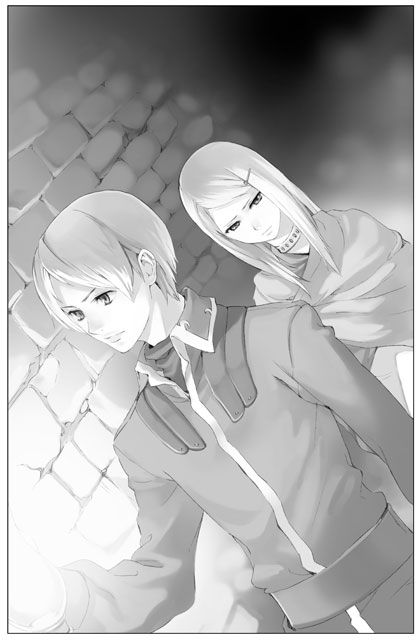
振り返れば美しい王宮の姿がそこにあるのに、ユーナは今確かに、絶望への入り口に足を踏み入れているのだった。突如現れた硬く冷たい石の壁に片手をついて、足場の悪い階段を下りながら、ユーナは不安でいっぱいになった。シェリアスティーナがしでかしたことをこの目できっちり確認したい、そう思ってここまでやって来たけれど。もしかしたらそれは、この身にはあまりに恐ろしい決断だったのではないか。思わずイーニアスの手を握る力が強くなる。それを感じてイーニアスがちらと視線をユーナに向けた。だが沈黙は守られたままで、響くのは無機質な靴の音のみだった。
階段を降りきると、目の前にのっぺりとした石の壁がそびえ立っていた。右側に細い通路が続いている。そしてその向こう側から、かすかだが「あー、あー」という不気味な呻き声が響いてきた。
ごくり、とユーナは息を呑む。
「......よろしいですね？」
最後に、イーニアスは確認をした。
今更後には引けない。ユーナはもう一度、しっかりと頷いた。
細い通路を通り抜けると、その先は人が一人通り抜けるのがやっとという程度のさらに細く入り組んだ通路が続いていた。漆喰の壁がいくつも立ち並び、視界を狭めている。明かりはほとんどなく、じめじめとした薄暗い空間がユーナの心をますます沈ませた。そして寒い。ひんやり、などという表現では表しきれぬほどに、寒い。ユーナは身にまとっていたストールをしっかりと身体に巻き直したが、それでも凍えて体が震えた。
ランプを手に進むイーニアスの後に続き、ゆっくりと歩みを進める。足を一歩踏み出すたびに、なんとも言えぬ異臭が強くなっていくのを感じた。なにかが腐ったような臭い。汗とほこりと湿気が入り混じったような臭い。そして──おそらくは、血の臭い。そういったものが混ざり合って、つんと鼻を衝いてくる。ユーナは思わず顔をしかめた。
わずかに開けてきた通路の両脇に鉄格子が現れる。恐る恐るそちらに瞳を向けるが、予想に反してそこには誰もおらず、ぽっかりとした空間がただあるだけだ。しかしなにかどす黒い怨念のようなものが渦巻いているようで、ユーナは無人であることにほっとすることもできなかった。
かすかに響いていた囚人たちの呻き声がだんだんと大きくなってくる。そしてその声に被さるように、重たい衣擦れの音が低く地を這う。次の瞬間には、ガシャンと鉄格子を掴み揺さぶる音が、甲高く響いて耳をつんざいた。
もう限界だった。
十分思い知った気がした。そうだ、シェリアスティーナはどうしようもなく非道なことをやってのけたのだ。日の光の一切差さないこんな世界へ、平気で人を追いやったのだから。そこに正当な理由などなにもない。正当？ いや、それどころかあまりに不当な理由で、だ。
ユーナは思わず足を止めた。両足が震えていて、上手く歩けない。振り返ったイーニアスが眉根を寄せてユーナのすぐ側まで歩み寄った。
「シェリアスティーナ様、よいのです。このような場をご覧になっていただかなくても。私はただ、赦しを」
怯えた顔を上げると、同情を宿した瞳と視線が合わさった。
「......どうして」
思わず震える声が口から漏れる。
「どうして、そんな優しい表情を浮かべられるの？」
イーニアスは不思議そうに軽く瞳を見開いた。
「憎いでしょう、私が。あなたの友人を不当にこんなところへ追いやったんだよ。それも、自分のことで因縁をつけられたようなものじゃない。あなた自身だって随分苦しんだはず。本当なら、私をこの地下牢にぶち込んでやりたいところでしょう？ なのに、どうして、こんな牢屋の入り口で怖気づいてるような小娘に、そんな憐れみの瞳を向けることができるの」
「シェリアスティーナ様、私はそんな」
「──行く。会わせて、ネイサンに」
彼は生来人を憎みきれぬ性質なのだろう。こんな場ですら自分を気遣うその優しさに、逆にユーナは苛立った。同じく苛立つ「別の」感情も少しずつ広がっていくのを感じる。それでも彼の気遣いが、ユーナの心を強くした。戸惑うイーニアスを追い越すようにして歩みを再開すると、慌てたように彼もすぐ隣に並んだ。
道は随分入り組んでいる。
ぽつぽつと不規則に牢獄が並んでいるが、中は無人である。しかし、かつて誰かがそこにいたという形跡ははっきりと残っていた。それがどういう意味なのか。囚人は無事解放されたのか、それとも。
「うう......」
低い呻き声がすぐ側で聞こえ、ユーナはびくりと肩をふるわせた。振り返ると、無人だと思っていた薄暗い牢獄の奥でなにかもぞりと動く影が目に入ってきた。意を決して近づくと、思わず身を引きたくなるほどの悪臭がユーナを襲う。それでもどうにか鉄格子のすぐ側まで歩み寄ると、中でかすかに身じろぎする男の姿を捉えることができた。
男は、異様なほど痩せ衰えていた。ウェーブがかった黒髪が脂ぎっていて、ぴったりと頬に張り付いている。その頬はすっかり痩けて土のような色をしていた。うつむいているためその表情までは覗えなかったが、その方がユーナにとっては良かったかもしれない。
男の両手両足は、無理やり一つにまとめ、がんじがらめにされていた。そのため不自然に膝を抱えて身を丸めているその男は、時々呻き声を上げるばかりでこちらを見ようともしない。側には腐った食べ物の入った皿が転がされていた。中身はほとんどこぼれ出て、砂にまみれている状態だ。
「シェリアスティーナ様、どうぞこちらへ」
男の様子を凝視して動かないユーナを咎めるように、イーニアスはその腕を取った。抵抗することもできず、引かれるままに牢獄から身を放す。
「ひ、ひどい......」
思わずユーナは呟いた。あの囚人はまるで人としての扱いを受けていなかった。食べ物をきちんと与えられていないだけではなく、明らかに拷問を受けている。
「あまりご覧にならない方がよろしいでしょう」
うめき声や雑音が聞こえる方向は極力避け、イーニアスはユーナを導いた。それでも牢獄には幾人もの囚人が絶望をまとって淀んでいる。どの囚人たちを見ても手ひどい扱いを受けているのは一目瞭然だった。壁や床一面に大量の血の跡が残された部屋もある。──そこでなにが起こったのか、想像もしたくない。
あまりに凄惨な状況に感覚はすっかり麻痺してしまったようだ。それでも、この現実から目を逸らすことだけはしたくないと、ただひたすら目の前の光景を見続けた。シェリアスティーナが彼らになにをもたらしたのか、それを知るために自分は今ここにいるのだ。
「ちくしょう、ちくしょう！」
「出してくれ、ここから出してくれよう！」
まだ体力や気力の残っている者は鉄格子を激しく揺さぶって喚き声を上げている。だが、立ち上がる気力もなく、死んだように床へ倒れこんでいる者も多い。
ユーナはイーニアスの側を離れて一人、鉄格子の前に佇んだ。ぶつぶつと何事かを呟きながらうつむく囚人がいる。ユーナに気づいてぎこちなく伸ばされる手。引き寄せられるように近づいたところで、再びイーニアスに止められた。
「シェリアスティーナ様。あまり彼らに近づかないでください。危険です」
我に返ったユーナの背中に、別の男の声がかかる。
「シェリアスティーナだって？ おい、そこにいるのか！ おいっ！」
まだ若い声だ。
「妻は、リノはどうなったんだ。なあ、リノはどうなったんだ！ 頼む、俺はどうなってもいい、リノだけは助けてくれ！ シェリアスティーナ、聞こえてるんだろう！」
「あ......」
声の主の姿は見えない。いくつもある牢獄のどこかから叫んでいるのだ。出所を探そうと足を踏み出したユーナの腕を、イーニアスがきつく掴んだ。まとっていたストールがするりと肩から滑り落ちる。
「いけません、この場で彼らと向き合うのはあまりに危険です、お分かりでしょう」
「それはそうだけど、でも......」
「とにかく急ぎましょう」
イーニアスに手を引かれる形でどんどん先へと進んだ。この隔絶された空間に入ってから一体どれくらい歩き続けただろうか。おそらく、距離にしてみれば大したことはなかったのだろう。しかしユーナにとって無限に続くと思われた道のりは、不意にイーニアスからかけられた一言をもって終わりを迎えた。
「彼が、ネイサンです」
やっとたどり着いた目的の牢獄は、他と違わず薄暗く、異臭が充満していた。そっと中を覗くと、赤毛の男が壁にもたれかかって両足を放り出していた。目を瞑って動かない様子から、もしやすでに、と危惧したが、わずかに上下する胸の動きを見てまだ生きているのだと知ることができる。ユーナはほっと胸をなでおろした。
彼もやはり痩せ衰え、肩を越すほどの髪はボサボサに広がっていた。上半身は衣服をなにもまとっておらず、身体中傷だらけのようだ。このがらんとした牢獄の中、彼は身一つで気絶していた。
イーニアスはネイサンの意識がないことを確認してからユーナを鉄格子の側に連れて行った。
「ネイサンはあらゆる拷問に耐え抜いたと聞いています。おそらくあなたの三ヶ月というお言葉が、彼をどうにか奮い立たせていたのでしょう」
イーニアスは痛ましげな瞳を友人に向け、呟いた。
「普通なら、このホリジェイルに収容された者は一ヶ月と生き長らえることはできないそうです。体力のもたぬ者もいますし、正気を保てぬ者もいました。実際、今まで生きてここを出た者を私は知りません。それはシェリアスティーナ様も十分ご承知のことでしょう。その中、彼は四ヶ月も耐え抜いたのです」
ぐっとイーニアスが唇を噛みしめる。
「シェリアスティーナ様、どうかご慈悲を。ネイサンをお救いください。できることならば、ネイサンだけではなく、この場にいる全ての者にあなたのご慈悲を......！」
台詞の最後は涙混じりに、イーニアスは片ひざをついてユーナに祈りを捧げるような仕草をした。
「──やめてっ！」
悲痛な声でユーナは叫ぶ。途端に、地下牢は騒然とした雰囲気に包まれた。囚人たちが興奮し、暴れだしたのだ。
不気味な騒音が響く中、ユーナは震えながらどうにか言葉を紡ぎ出した。
「そんな風に、慈悲を乞われるような人間じゃない。そんな資格ないよ。聖女なんかじゃ......、全然ない」
「シェリアスティーナ様......」
「イーニアス、──イーニアス」
これからしようとしている質問に対する答えは、あるいは更に完全に自分を打ちのめすかもしれない。しかし、事実から目を逸らしてはいけない。なにか、使命感とも義務感とも少し違う決意がユーナをつき動かしていた。
「この地下牢、あまりにも不自然な場所にあるよね？」
ユーナは真っ直ぐイーニアスを見据えた。
「王宮と密接しすぎてる。それに、入り口に見張りの兵が一人もいなかった。王国の牢屋なら、普通こんな風に囚人を拷問したりしないだろうし。皆の態度を見ても──」
ぐっと強く拳を握る。
「──ネイサンだけじゃない。ここにいる全ての人は、私の命令で監禁されたんでしょう？」
気づきたくなかった。けれど気づいてしまった。
きっとこのホリジェイルは、聖女シェリアスティーナの気まぐれのために作られた場所なのだ。無実も同然の人々を、いたぶり、苦しめるために。
「......なぜ、今更そのようなことを？」
非常に明確な答えが返ってきた。
そうか。
やっぱりそうだったんだ。
どっと肩になにかが覆い被さってきたような気がして、ユーナは崩れ落ちそうになった。どんよりと篭った空気は、私への怨念の渦。低く響く囚人たちの呻きは、私への怨憎の声。──ああ、シェリアスティーナ、あなたはなんて恐ろしいことを。
ユーナはもう一度、ゆっくりと辺りを見回した。忘れぬようにこの光景を心に焼き付けなければ。この空間こそ、シェリアスティーナの心の闇そのものだ。
「シェリアスティーナ様？」
「......うん」
ユーナはゆっくり、頷いた。
「戻ろう、イーニアス」
「し、しかし」
「ネイサンはもちろん解放する。彼だけじゃなく、他の全ての人もね。そしてここは潰してしまおう。もう二度と、こんなところへ閉じ込められる人が出ないように」
そう言いながら、いつの間にかユーナはぼろぼろと涙をこぼしていた。本当は泣くつもりなどなかったのに。でも止まらない。泣いてなんになるというのだろう？ むしろ安易な涙など、無実の囚人たちにとってはこの上なく穢らわしいものに映るだろうに。
「早く、誰かを呼ぼう。私じゃ、皆を、助けられないよ。私が、こんな目に、遭わせたっていうのに。早く、ここから出して、身体を拭いて、飲み物をあげて、傷の手当てして、温かいベッドで眠らせてあげよう──ああ......」
止まらない涙。その涙を厭うように、胸の奥で小さな苛立ちの渦が沸き起こった。
なぜ、とユーナは問う。なぜあなたは苛立っているの？ なにをそんなに苦しんでいるの？
「シェリアスティーナ様......」
イーニアスはためらいながらもそっと手を伸ばして、ユーナの頬を伝う涙を拭った。そんな風に優しくしないで、とユーナは心の中で叫ぶ。──そう、あの人──アシュートが向けたような憎悪の瞳を、向けるべきだ。しかしその気持ちとは裏腹に、ユーナはイーニアスの温かい手を拒むことができなかった。
いつの間にか意識を取り戻していたネイサンが、不思議な瞳でじっとこちらを見ていた。
視線がユーナと絡んでも、逸らすことも睨むこともしなかった。憔悴しきったその瞳からは、なんらかの感情を読み取ることはできなかった。
【４】
ドン、ドン、ドン。
突然遠慮のないノックが響き、ライナスは目を落としていた書物から顔を上げた。
夜更けに部屋の扉を激しく叩く痴れ者は誰だ。彼にしては不機嫌な面持ちで扉を開けると、彼以上にむっつりと難しい表情をしたシェリアスティーナが待ち構えていた。後ろにはどこかで見た記憶のある金髪の青年が控えている。
「どうしたんだい、こんな時間に」
「ごめんなさい。でもちょっと、他に誰に頼めばいいか思いつかなかったから」
目の前の少女は、今朝がた向かい合って話をしたときよりも随分気が立っているようだった。
「ホリジェイルのことなんです」
彼女の口から出たその単語に、ライナスは少なからず驚いた。
「もちろん、知ってますよね？」
確かに知らぬはずがない。だがそれよりも、この少女がすでにその存在を知っていたことに意外な思いを抱いていた。──まさかこんなに早くあの場所を知ってしまうとは。いつかは知られることになろうと思ってはいたが、それはまだ先のことだと考えていた。
「まあとにかく、入りなさい」
少女と後ろの青年を部屋に招き入れ、ソファに座らせる。ふかふかのソファだというのに、二人とも随分居心地が悪そうだ。こんなところでくつろいでいる場合ではないという焦りの心境ゆえなのだろう。
「あの地下牢に閉じ込められている人を、全て解放したいんです」
待ちきれぬというように、少女が早々に本題を口にした。
「また突然だね」
「分かっています。でも、できるだけ早く。今晩中に」
「と、私に言われてもなあ」
肩をすくめると、少女は明らかに苛立って眉を寄せた。
「あなたに言って駄目なら、言って通じる人に話をつけてきてください」
「なんだ、今朝とは違って随分強気だね」
面白がってライナスは笑う。
「もう十分承知しているんでしょう？ 私がどうしようもなくわがままな聖女だってこと」
「確かに」
ライナスは苦笑して、側にあった紙にサラサラと走り書きをすると、手元のベルを鳴らした。間もなくやって来た使用人にその紙を託す。至急副宰相へ、と告げると、使用人は小さく頷きすぐに部屋を後にした。副宰相あたりに伝えておけば後はうまくやってくれるだろうという考えがライナスにはあった。副宰相は以前からホリジェイルの存在を疎ましく思っていた人物だ。
「......今ので、もう大丈夫なんですか？」
「安心しなさい。君が赦すと言ったのならば、その一言だけで国王を弑した不届き者でも無罪となる」
それを聞くと、複雑な表情で少女は黙り込んだ。
「さて」
ライナスは一息おいて、目の前の二人の様子を交互に見やった。
「シェリア、君にホリジェイルの話を持ちかけたのは、お隣の青年かな？」
尋ねると、金髪の青年がかすかに身体をこわばらせた。そんな彼を庇うように、この少女にしては荒々しく答える。
「だとして、なにか不都合でも？」
「いや、不都合などないよ。ただ、そうだとしたら随分勇気ある若者だなあと思ってね。あそこの存在は皆が知ってるけど、それは口に出さぬというのが暗黙の了解だったじゃないか。それをまさか、シェリアの前で堂々と口にするとは」
「イーニアスは悪くない」
「......無礼は、承知の上でした。どんな処罰も受ける覚悟です」
重々しい口調でイーニアスと呼ばれた青年は告げた。そんな彼の台詞を聞きながら、ライナスは視線を落とす。
「......シェリアを連れて行ったのかい、地下牢に」
「どうしてそんなことを聞くんですか？」
ライナスの声音がイーニアスを責めているものと感じ取ったのか、少女は再び彼を庇いにでた。
「あのような穢れた場所に、聖女が足を踏み入れるべきではない。それくらいは分かるだろう？」
「あんなにも穢れた場所を作り出したのが、その聖女自身だっていうのに？」
ライナスを睨みつけるようにして、少女はきっぱり言い切った。
──これはまた、予想以上に強い一面を持っていたものだ。ライナスは心の中で密かに感心する。今朝の印象では、頼りないが従順で素直な少女という感じで、それが彼の気に入ったというのに。しかし今の強気な彼女も、なぜだかやはり好ましく思えた。なかなかに面白い少女だ。彼女のワンピースの裾が塵と埃にまみれ薄汚れているのを見れば、件の地下牢に行ったのは間違いなかろう。しかしそれを追及するのはやめてあげようか、という気になった。あの現場を見てなお、このように気丈に振舞っているというなら、なおさら彼の興味を引いた。
「なんにせよ、自由奔放な我らが聖女様の行いにケチをつけるつもりはないよ」
「もうつけてるじゃないですかっ」
「とにかく、今日はすでに夜も遅い。ホリジェイルの件は必ず君の満足いくよう取り計らうから、部屋に戻ってもう眠りなさい。イーニアス君、君もだよ。このワガママ聖女に付き合って随分神経をすり減らしたことだろう。明日の仕事もあるのだから、そろそろ身体を休めねば差し支えるよ」
やんわりと場のお開きを宣言するが、それでも少女は渋ったような表情を浮かべた。
「でも私、閉じ込められてた皆が無事解放されたのを確認しないと」
「私が責任を持つと言ったじゃないか。そんなに私が信じられない？」
あまり信じられない、という胡乱げな瞳がライナスに返ってきた。一体この一日で自分に対する評価がどのように決まっていったのか、実に気になるところである。
「ほらほら、彼らだってやっと解放されたところに君が待ち構えていたら、恐怖再びという感じでかわいそうじゃないか。とにかく君は部屋に戻ること。いいね」
そのように言われれば、少女も強く反発できないのだろう。口をつぐんで、何か言いたげだったその言葉を飲み込んだ。もう解散、と席を立ったライナスに倣い、少女もイーニアスも立ち上がる。そのまま彼女の背中を押してやると、素直にドアまで歩いて行った。
「シェリアスティーナ様、お部屋までお送りします」
すかさずイーニアスが礼儀正しく頭を下げて、シェリアスティーナの白い手を取る。その優雅な動きを見てやっとライナスは彼のことを思い出した。彼と一緒にいた赤毛の青年のことも。
二人は共に将来有望な貴族の若者だったはずだ。それが、彼女の戯れによってむごたらしくもどん底にまで突き落とされた。赤毛の青年は今の今まで例の牢屋に閉じ込められ生死を彷徨っていたであろうし、このイーニアスという青年とて、準騎士の地位も許嫁も開かれた未来も失い、そして危うく唯一無二の親友さえも永遠に失うところだった。ならば目の前にいるこの娘こそ、その手に掛けてしまいたいほどの憎しみを抱く対象となってしかるべきではないか。その割に随分と落ち着いて騎士道精神を発揮しているのだな、とライナスは不思議な気持ちで彼の様子をうかがった。
その瞳には、憎しみの色などつゆほども見えぬ。代わりに、愛すべき主君を見つめるような澄んだ色が浮かんでいる。おや、とライナスは片眉を上げた。
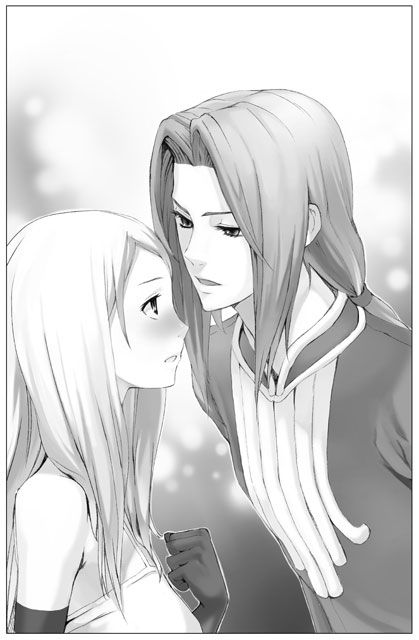
この男は正気なのか、それともなにか企んでいるのか。なんにせよ、自分の与り知らぬところで、随分と興味深い展開があったようである。シェリアをずっと一人放っておいたのは間違いだったかもしれないと、彼にしては珍しく、己の行動を軽く後悔したのだった。自分だけが蚊帳の外なのは面白くない。
「──シェリア」
ライナスは、イーニアスに連れられ部屋を出て行こうとする聖女に声をかけた。なに？ という目で己を見上げた彼女の額に、素早く口付けを落とす。途端に彼女の顔は真っ赤に染まった。純朴な娘そのままに慌てふためく聖女シェリアスティーナの姿など、まさかこの目で拝める日が来ようとは。ライナスはクスクスと笑った。
「お休み、のキスだよ。......どうやらある種の効果てきめんのようだね。そうだ、いいことを思いついた。明日から君が私に丁寧な言葉遣いをするたびに一回、今のようにキスしよう。どうかな、一日に何回できるかな？」
「ななな、なにをわけのわからないことを言ってるんですかっ！」
わめく少女の横で、イーニアスが微妙な表情を浮かべていた。こちらもやはり面白い、とライナスは腹の中でほくそ笑む。
「おや、イーニアス君、なんだか物言いたげな不満そうな顔をしているね。ああそうか、君にもお休みのキスをしてあげなければね？」
なにを言い出すんだ、と言わんばかりの驚きの表情を浮かべ、イーニアスは固まったが。
「......結構です」
しばらくの沈黙の後、苦々しい表情で、それだけ呟いた。
その晩、ユーナはなかなか寝つけなかった。
瞼を閉じれば、あの牢獄の陰惨な風景がまざまざと浮かび上がる。その狂気の世界に引きずり込まれ、ユーナは一人苦しんだ。今の自分が豪華な自室のベッドに身を横たえているとはとても思えなかった。まだあの暗い地下牢にいて、苦しむ囚人たちの声を聞いている気がする。
シェリアスティーナは、なぜホリジェイルなどを作ったのか。そこでたくさんの人を苦しめて、それで本当に満足だったのか。後悔はなかったのか。もうやめようとは思わなかったのか。
──しかし、その問いかけに答えが返されることはなかった。時にさざなみのように立ち上がる「別の」感情は、今は全く感じ取れない。シェリアスティーナは完全に沈黙していた。
ユーナはゆっくりと目を開く。
あの不思議な光は、いつかシェリアスティーナの魂を元に戻すと言っていた。それまでの間、周りの人間に怪しまれることなく、「シェリアスティーナとして」その身体を保ち続けることが自分に課せられた役割だと思っていたけれど。
本当にそれでいいのだろうか？
時が経ち、彼女の魂が舞い戻ってきたら。シェリアスティーナはこれまでと変わらぬ非道な行いを続けていくのだろうか。だとしたら、なんのために彼女は再び蘇るのだろう。
（シェリアスティーナ、あなたは一体どうしたいの？）
もう一度そう問いかけても、やはり答えは返ってこなかった。
ただゆっくりと、長い夜は続くのみ。
いつか夜明けは来るのだろうかと、ユーナは広がる暗闇を長い間見つめていた。
翌朝は気持ちのいい天気だった。雲一つない青空が清々しい。
ユーナはゆっくりとベッドから身を起こし、窓を開けて風を取り込む侍女の姿を目で追った。一瞬、つい数時間前の出来事は悪夢の中の幻だったのではないかと感じられてしまう。けれどまだ鼻の奥に残るあの悽惨な臭いが現実を忘れさせてくれない。
「シェリアスティーナ様、おはようございます」
やはり事務的に、侍女は朝の挨拶を告げる。
ユーナは物憂げに瞳をそっと伏せたが、そんな彼女の様子に気づいてくれる人などここには誰もいやしない。まもなく着替えを持った侍女が二人入ってきたが、ユーナがただ黙っているのを見て、かえって安堵しているようだった。昨日のようにわけの分からないことを言われてはたまらない、そんな思いが読み取れる。
着替えを済ませて一人きりの朝食も終えた頃、昨日と同じくライナスが部屋にやって来た。
「おはようシェリア。昨晩はちゃんと眠れたかい？」
ユーナは無言で頭を振った。
「それは良くない。きっと真面目な君のことだ、色々と考え込んでしまったのだろうね」
「ねえライナス、ホリジェイルの件、本当にちゃんとしてくれた？」
「もちろん。私に抜かりはないとも」
「収容されてた人たち、命に別状はなかったのかな」
「まあ、危うい者もいたけれどね。生命に関しては、全員無事だったと言っておこう」
「......心の壊れてしまった人もいるんだね。きっと体が不自由になってしまった人も」
「だが、シェリア。そう塞いだ表情をするものじゃないよ。昨日君が彼らを救おうとしなければ、あそこにいた誰一人として助かる者はいなかったのだから」
「でも......」
「あまり自分をシェリアスティーナと同一視せぬ方がいい。いいかい、君は、シェリアスティーナじゃないんだからね」
「でも今私は、シェリアスティーナだよ」
まるで呪文のように呟くユーナを見つめ、ライナスはわずかに眉を寄せた。しかしそれも一瞬のことで、すぐにいつもの穏やかな表情を浮かべ、小さく首を振る。
窓辺に身を寄せる少女に近づいて、ライナスはその華奢な身体をそっと抱き締めた。
「なんだか沈んでいるようだね。私が慰めてあげよう」
「わあっ。──い、いらないよ、そんな変な親切！」
「それにしても、君も案外賢しいね。昨晩私と『あの』約束をしてから、ピタリと丁寧語を使ってくれなくなったようだ」
「な、なんの話」
「いいんだよ？ 無理して砕けた口調にしてくれなくても」
「もうっ！ ふざけてないで、放してよっ」
「おやおや、つれないなあ。数日前までのシェリアとは、抱擁を交わすなど日常茶飯事だったんだけどねえ？ 今頃になって拒むなど、シェリアスティーナ、君らしくないよ」
にこにこと笑うライナスの腕の中、ユーナは真っ赤になって暴れていた。
「やっぱり、二人ってそういう怪しい関係......」
「ほらほら、もう抵抗はお止め。──悲しむのも、お止め」
一瞬大人しくなったユーナだったが、不意に我に返ってライナスの胸を両手で押し返した。
「わ、私こんなバカなことしてる場合じゃないんだった」
「バカなこととは失礼な」
「ねえライナス、私を収容されてた皆のところへ連れて行って。様子を見せてもらいたいの」
そう告げると、瞬間、ライナスの瞳に厳しい色が宿った。
「それは駄目だな」
「どうして」
「中身は別人かもしれないが、外見はシェリアスティーナそのものだ。そんな君が、シェリアスティーナに傷つけられた彼らの前に姿を現すのはよくない......と、昨日言ったはずだね」
「でも」
「彼らにとっても大きなショックになるだろう。君に危害を加えられる恐れもある。発狂しかけた彼らが、全ての元凶である君の姿を見つけて襲い掛かってくるかもしれないだろう」
そう言われてもまだユーナは納得できない。
「ちょうどいい。その話をしようと思って来たんだ。実は、昨日解放した者たちの中に、ひどく興奮している者がいてね。一応看護という名目でこちらでも見張っているが、万が一ということもある。君にはしばらく、事態が落ち着くまで自室で大人しくしていてもらいたいんだ」
「......それって、隠れてろっていうこと？」
「そうだ」
迷いもなくライナスは言い切った。
「嫌だよ！ 苦しんでいる人を私、この目で見たんだよ。それを放っておくことなんてできない」
「何度も言わせないでほしいな。そういう者たちにとっては、君の存在自体が毒のようなものなんだ。顔を合わせただけで彼らの平常心を失わせることもある。君が行ってどうにかなる問題じゃないんだよ」
冷たく突き放されて、ユーナは俯くしかなかった。
「行ってなにをする？ 君はシェリアではないだろう？ シェリアの姿で彼らになにかしようとすること自体、彼らを欺き、裏切る行為なのではないかい？」
「......それは」
ユーナはなにも言い返すことができなかった。
黙りこくったユーナを見つめ、ライナスは一つ頷く。
「では、少し落ち着いたところで、そろそろ礼拝の儀に行こうか。これはお偉い方が集まる稀な儀式だから、欠席しないほうがいいだろう。この儀式が終わったらすぐ自室へ戻る。いいね」
礼拝の間は町中にもよくある教会に雰囲気が似ていたので、ユーナも幾分か気を楽にすることができた。
自分が中心になってなにかをするのではなく、神官長の祝福の言葉を聞き、神に祈りを捧げればよいというから、ユーナにとってもありがたい儀式だ。ただ、自分の場合は最前列のど真ん中に特等席が用意されている。そうと気づいたときには閉口したが、そんな扱いにもそろそろ慣れねばなるまい。
五十ほどある席はもうすでに国の重役たちで埋まっていた。あとは自分が厳かな態度で指定された席まで行けばよい。まるで舞台裏から表舞台へ登場する寸前の役者の気分だ。実際、この礼拝の間は劇場のような造りになっていて、ユーナは袖から登場する手筈になっている。
すう、と息を吸ってユーナは足を踏み出した。すると自分とは反対の袖から同じように歩み出る人影を発見し、ユーナは思わず身体を強張らせる。そこにはいつもと変わらない憮然とした表情のアシュートが立っていた。ユーナは内心背を向けたい思いでいっぱいだったが、なんとか背筋を伸ばしたまま席まで到達した。見れば、確かにどう考えても二人分の席である。ユーナは今頃気づいた自分に呆れながら、その場に跪き祈りの姿勢を取った。すぐ隣ではアシュートも同様に跪いている。どうもこの儀式ばかりは聖女と第一神聖騎士がそろって出席することになっているらしい。
こっそりとアシュートの様子を覗うが、向こうはユーナには一瞥さえくれず、真っ直ぐ壇上を見据えるのみだ。相変わらずの無関心にユーナは心の中で溜息をついた。
......出来れば、伝えたかったのに。シェリアスティーナの過ちを、一つこの目で確かめたと。それで許してくれだなんて言うつもりはない。でも、逃げないから。なかったことになんて、しないから。きちんと向かい合うよ──真実と。
視線を自分の手元に戻す。真っ白で傷一つない、シェリアスティーナの美しい手。今こうして陽の光の元に見れば、荒れて傷も多かった自分の手とはまるで違うのがよく分かる。その手をそっと握ってみた。──今この手は、ユーナの意志でしっかりと動く。自分はユーナだけれど、同時にシェリアスティーナでもある。改めてそれを実感した。
不意に、祭壇の袖からのざわめきがユーナの耳をくすぐった。顔を上げてそちらを見ると、数人の兵士たちが輪を作るようにしてなにやら囁き合っているのが目に入った。兵士たちは地面を指差したり、首を横に振ったりしている。彼らの足元には小さな黒い塊が──ああ、あれは毒虫だ。あの時沢で見かけたものと、同じ毒虫。初めてシェリアスティーナとして目覚めた時、自分の膝の上を這っていたから思わず手で払い落とした。こんな王宮にも毒虫が出るものなのか。ユーナはぼんやりと様子を見守った。
そういえば、と昔父親から聞いた物語を思い出す。目覚めると「毒虫」になっていた男の話。ある朝目が覚めると皆から忌み嫌われる「毒虫」になっていた──。まるで今の自分のようだ、とユーナは思う。物語の男は、最後にどうなったのだろうか。再び元の姿を取り戻したのか、それとも......。
兵士たちはその後も少し言葉を交わしていたが、まもなく彼らの一人が毒虫を踏み潰してしまった。なんの迷いもなく下ろされた足に、毒虫はあっけなく命を奪われた。
（殺してしまった）
ユーナの中にじんわりと嫌悪感が広がっていく。確かにあの虫は毒を持っている、しかし命を持った存在ではないか。彼らの中にそういう意識はないのだろうか。ユーナの父親なら、きっと殺したりせずそっと土に返していた。毒があるとはいっても、刺激をしなければ人を襲うことはないはずなのに。
（ここでは簡単に生き物を殺すんだな......）
やがて、緩やかに前奏の音楽が流れ始めた。ユーナは瞳を閉じ、その音楽に聴き入った。
礼拝の儀が終わって誰もいなくなった礼拝の間は、当たり前だがしんと静まり返っていた。
ユーナは渋るライナスに頼んで一人ここに残らせてもらった。先ほど命を奪われた毒虫の死骸をハンカチに包み、建物の裏手に埋めてきたのだ。そうせずにはいられなかった。
（それでなんになるっていうわけじゃないけど）
そっと天を仰ぐと、高い高い天井には、美しい天上人の姿が幾多も描かれ、優雅に舞っている。
（......我が主ヴィーダよ）
ユーナはもう一度、今度は一人きりで跪き、そっと神に祈った。
（どうかお聞きください。私は、自らの人生が終わりを迎えた後、ほんの一時とはいえ新たな生を預かることとなりました。そして、この聖女様の身が儚くなったことを人々に悟られず過ごさねばならないのだと、そう、思い込んでいました。かつてのシェリアスティーナ様と同じように過ごし、そしていつか、かつてのシェリアスティーナ様に身体をお返しするのだと）
──でも。
（本当にそれでいいのでしょうか？ 極悪非道と恐れられるシェリアスティーナ様のお心をそのまま受け継ぎ、またそのままそれを引き継ぐ。それが一体なんになるのかと、愚かな私は昨夜一晩悩みました。それに対する答えは出ません。けれどやはり、どうしてもこのまま全てをただ受け継ぐことなどできないと悟ったのです。それに──）
ふと、ユーナは顔を上げた。
（かのシェリアスティーナ様も、そのようなことは望んでおられぬはずだと思うのです。なぜ、聖女様は自ら命を絶たれたのか。人が己の命に終止符を打つとき、それは全てを終わらせたいと切に願った時です。きっとシェリアスティーナ様ご自身も、そのようにお考えになられたのでしょう。ご自身のお心や、そのお心のままに為された行いを、ひどく厭われたから。だからきっと、ご自分をお見捨てになるという暴挙に出られたのではないでしょうか？ ──いいえ、知ったようなことを申しておりますが、今の私に全てが理解できるはずもないこと、よく承知しております。でも、だからといって、無知に任せただ流されるのは嫌なのです。私は平凡な町娘に過ぎませんでした。今も根本は変わっておりません。でも、あと一年ほど、預かったこの生を、私が正しいと信じられる道に費やしたいのです。己が信じる道を誤らぬために、どんな努力もいたします。ですから、我が主ヴィーダよ......）
ぐっ、と組んだ両手に力を込める。
（どうか私をお見守りください。きっと何度もこの信念は崩れそうになってしまうと思います。それでも私は、やはり私なのです。かつての名を失い、肉体も失い、もはや別人の姿となろうとも──、私の魂は、変わらず私なのです）
強く強く、念じた。自分の意志が揺らがぬように。
そしてそっと、ユーナは立ち上がり、瞳を開いた。
──その瞬間、柔らかい風が頬をくすぐり、陽の光がさしこんできた。
【５】
あのあとすぐにライナスが迎えに来て、その宣言通りユーナは自室にて数日を過ごすこととなった。
広い部屋は、相変わらず味気ないが、ライナスが気遣ってくれたのか、殺風景な中にも目新しいものが色々と増えていた。宗教本から通俗本まで様々な書物が本棚に揃えてあったし、レース編みの一式もさりげなく卓上に置かれている。ほとんどの本はユーナには難しくてなかなか読めず、レース編みも、そういった貴族的な嗜みなどないユーナには手に余る品ではあった。それでもその心遣いに感謝して、心の中で礼を述べる。
部屋には専用のバスルームも備え付けてあるので、食事さえ運んでもらえればなに不自由なくこの部屋の中で生活することができそうだ。むしろ、やれお召し替えだのやれご入浴だので侍女たちに張り付かれなくて済むのだから、逆にありがたいほどである。
全ての儀式を免除されたユーナは早速手持ち無沙汰になって、辺りを見まわした。ふらふらと部屋の中を彷徨った後、本の山に目をやる。背表紙を眺めただけで気が遠くなりそうだったが、なんとか気を取り直し一冊の本を引っ張り出す。
この国と聖女の歴史の本である。読み書きできないわけではないものの、文字を追うのにとても時間のかかるユーナには、この手の歴史本を読み解くのはやっかいな作業だった。しかしだからこそ暇つぶしになるし、なによりこの国と聖女にまつわる話をもっと詳しく知ることができて一石二鳥だ。自分はあまりになにも知らなさすぎる。
（神話時代の気が遠くなる昔から、すでに聖女は存在したんだ）
一ページ目からじっくりと読み込んでいたユーナは、侍女がろうそくの灯りを運んできた頃やっと千年前の時点までたどり着いて、ほうと息をついたところだった。お茶を入れてカップを口に運びながら、予想外に「根深い」聖女の歴史に舌を巻く。
かつてはこの国も各地にひしめく無数の王国の一つに過ぎなかった。だがその当時でさえすでにシベリウスに仕える聖女の存在は他国に知れ渡っていたという。シベリウス王国は他のどの国からも聖女を守り抜き、またそのためにはどんな努力も惜しまなかったということだ。そしていつしか他国を圧倒する力を持つようになり、聖女の尊さを解していた他国も自ずとシベリウスに下るようになったと、そう本には書かれている。そして今からおよそ千年前にシベリウスは世界を統一し、その他は全てその配下に置かれることとなったそうだ。しかし、様々な利益や思惑が絡み合う政治の世界で、それ程簡単に国同士の諍いに片がつくはずのないことはユーナにもおぼろげに理解できる。おそらくもっと陰惨で泥沼化したやりとりのあった末に、現在のシベリウス王国が形作られていったのだろう。
さて、それよりも聖女である。
ユーナは気合を入れ直し、政治に関する講義部分を飛ばし飛ばしに、なるべく聖女に言及している部分に焦点を絞って本を読み進めていった。
歴史本に登場する聖女は、誰もが気高く美しい、天使のような女性たちばかりだ。皆非の打ち所のない聖人として描かれ、全身全霊をかけて国に仕えたと褒め称えられている。ユーナはこれに疑念を抱いた。ほんの数日の聖女生活で、すでに疲れを感じ始めている自分がいるのだ。幼い頃から聖女としての役割を押しつけられては、その重圧に耐え切れない者も出てきたのではないだろうか。それが、皆が皆文句の一つも言わずに理想の聖女であり続けた？ どうにも胡散臭い、それがユーナの正直な感想だった。
しかしまあ、そこはそれ。そもそも何百年も前の時代の聖女たちだ、神格化されていたとしても仕方がないだろう。ちょっとやそっとの事件があったとしても、細かな話は省略されてしまっているに違いない。しかしこうして読み進めてみると、シェリアスティーナは本当に異端の聖女なのだなと唸らずにはいられなかった。残虐非道な行いを尽くした聖女など、この数千年の歴史でただの一人も登場しないではないか。この本の作者がシェリアスティーナの評価にどう色をつけようとも、「全身全霊をかけて国に仕えた」などと記すことは到底できないだろう。
（それじゃあ、数代前の聖女については、どうだったのかな？）
本を大幅にめくって、最後の数十ページに目をやった。この本が作られたのは比較的最近だったようで、前代の聖女についてまで書かれている。──シェリアスティーナの前の聖女！ ユーナは逸る気持ちを抑えてその項目を読みにかかった。
その聖女は名をマルヴィネスカといった。大層な名前だが、農民の出だという。この本によると、彼女たちの名前は聖女になった際に国王から賜るものらしかった。つまり、シェリアスティーナという名前も厳密には本名ではないということだ。大抵は元の名前をもじって神聖な響きにしたものを聖女の名とするのだという。
マルヴィネスカは、ブルネットの豊かな髪を持った神秘的な雰囲気の美女である。寡黙であまり表情の変わらない大人しい性格だが、毎日の儀式は一つも欠かすことなく務め上げる、信仰心の篤い聖女なのだそうだ。歴代の聖女にはそれぞれ特筆すべき能力が備わっていたが、彼女の場合は「上手く歌を歌える」というものらしい。透視までしてみせたかつての聖女と比べれば随分地味な能力ではあるものの、その歌声はまさに天上のものとしか思えぬ程に美しく、耳にした者はあまりの素晴らしさから頬に涙の川を作った、とある。第一神聖騎士はこの許婚を心底愛し、彼女が二十歳になるまで結婚を待てないほどだと本には大仰に書かれてあった。
彼女に関する記述はこの程度。進行形で書かれているところからすると、どうもこのマルヴィネスカが存命中、しかもかなり若い時期にこの本は出されたらしい。これでは彼女が聖女としてどんな人生を送ったのか詳しく知ることができない。少し残念に思って、ユーナは何気なく前のページをパラリとめくった。そして目に飛び込んできた数字。マルヴィネスカの生誕日を目にして、ユーナは驚きのあまり息を呑んだ。
アデルバート二年。ほんの四十年ほど前のことではないか！ つまり現在存命していたとしても、まだ四十代前半だ。しかし、こうしてシェリアスティーナがここにいるということは、マルヴィネスカはもうこの世の人ではないということのなによりの証である。シェリアスティーナが何歳なのか正確には分からないが、この姿を見れば二十歳に届くか届かないかであるのは間違いない。それを基に計算すれば、マルヴィネスカは二十代にして夭折したということになる。この王宮内で事故死は考えにくいだろう。ならば、病死だろうか。
（かわいそう）
そう思いながらも、同情以上のなにかを感じずにはいられなかった。おそらく今の自分をこのマルヴィネスカに重ねているのだ。
本を閉じ、ユーナは天井を仰いだ。──自分には、あとどれくらいの時間が許されているのだろう？ 確実に迫りくる死を感じて、それでもどうしようもないこの無力感。マルヴィネスカも同じ思いを抱きながら聖女として生きていたのかもしれない。死にゆく自分がなんのために祈りを捧げるのか。死後の己のため？ それとも、己が死した後もなお続く国のため？
信じる道を進む、その決意に迷いはない。けれどまた別の迷いがどうしてもユーナの中で渦巻くのだった。
それから数日の間に、部屋の中は様々な変化を見せた。ユーナが入浴しているわずかな時間で、おそらくは使用人たちが暇つぶしの道具を取り替えてくれているのだ。初日にテーブルの上にあったレース編み一式は姿を消し、代わりに美しい絵画集が増えていた。見るからに高そうな、しかしよく分からない笛のような楽器は、うっとりする音色の小さなオルゴールに変わっていた。
ユーナがあまり興味を示さなかった品物を把握しているのだろう。取り替えられていくのはユーナがほとんど触らなかったものばかりだ。とにかく聖女を退屈させてはまずい、と、そう考えてのことなのだろう。おそらく「申し訳ない」のではなく様々な意味で「まずい」のだろうな、とユーナは自嘲気味に笑みを浮かべ、それから空しくなって溜息をついた。
しかし、このような立派な絵画集やらオルゴールやらを使用人たちの独断で用意できるとは思えない。もしかしたらこれもライナスの気遣いなのだろうかと思いあたって、夕食の片付けに現れた侍女に尋ねてみた。
すると意外にも、返ってきた答えは「アシュート様のお心遣いです」というものだった。どうやら初めから、アシュートが使用人たちにこうした品々を用意するよう命じていたらしい。
（......信じられない）
彼と向かい合った時の態度を考えると、彼が自分のために気を使ってくれるなどありえないと思ってしまう。だが、こんなことで侍女が嘘をつくとも思えなかった。これらは確かにアシュートにより揃えられた品々なのだ。
（きれいだな）
ユーナは改めてオルゴールを手に取った。いくつもの宝石が散りばめられ、きらきらと光り輝いている。
（仲良くなれないのかな、アシュートと）
それは無理な願いだろうか？ 自分たちの間に横たわる深い溝を埋めることは、どうしてもできないのだろうか。
（仲良くなりたい、か......）
どうして自分はそんな風に考えるのか。町娘だった頃の自分なら、アシュートのような、地位も教養もある見目麗しい若者と仲良くなりたい、などとは、あまりに恐れ多くて夢にも願うことはなかっただろう。ましてやそれ以上の関係に、などとは望むべくもない。それに、もし万が一本当に仮定の話として、アシュートと仲良くなることができたとしても、その先に待っているのは逃れようのない別離のみだ。なのになぜ、自分は......。
（私、少しずつシェリアスティーナの目線で物事を捉え始めているのかも）
以前ライナスが言っていた。あまり自分とシェリアスティーナを同一視するな、と。確かにその通りだとユーナも思う。しかし、自分でも気づかぬうちにそうなってしまうのだ。のめり込むほどに苦しみは増していくと頭では分かっていても、この目で、この手で、この足で世界を感じるほどに、ますます他人事ではなくなっていく。
ふう、と息をついて、もう一度オルゴールに視線を落とした時、扉をノックする音が部屋に響いた。
一体誰だろう、侍女なら先ほど夕食を下げにやってきたばかりだ。
「失礼します」
その声にユーナはぎくりと身を強張らせた。ちょうど今考えを巡らせていた人の声。アシュートだ。
なんとなく気まずい。かける言葉を選んでいるうちに、アシュートは扉を開き部屋へ入ってきた。ユーナの手の中のオルゴールに気づくと、わずかに目を細める。なんの感情もうかがえない表情だ。
「ど、どうしたの？ なにかあった？」
「いえ、お一人で不自由していらっしゃらないかと思いまして。なにか足りないものなどありませんか？」
「ううん、それは大丈夫だけど......」
わざわざそれを確認するために足を運んでくれたのか。
「ど、どうもありがとう」
「いえ、これも職務の一環です」
言外に、仕事だから嫌々来たのだと言われているようなものだ。ユーナは少しムッとしつつも、それをどうにか押し殺した。
「あの、私いつまでこうして部屋で待機していればいいのかな」
「おそらく、あとわずかの間だとは思いますが」
「ホリジェイルから解放された人の中に、私をすごく憎んでいる人たちがいるんでしょう？ やっぱりまだ、気持ちは落ち着かないよね」
「それはそうでしょうね」
アシュートはためらいもなく言い切った。自分にも身に覚えのあることだという含みがある。
「問題は、その憎しみがなんらかの行動に結びつく可能性があるかどうかということです。本人たちの状況を見ながら、そういったあらゆる可能性を排除しているところですので」
初めから被害者たちの気持ちをなだめようとは思っていない、被害者たちが暴れられないように手を回している。そういうことか。
アシュートの言葉一つひとつに棘がある。それを敏感に感じ取って、ユーナは身を小さく縮めた。
「あなたもなぜ今頃、ホリジェイルを解放するなどと仰られたのか」
わずかに俯き加減になって、アシュートは呟いた。それは独り言かと思うほど小さな呟きだったが、確かにユーナの耳に届いた。
「わ、私──。記憶が無くなったって言ったけど、それで過去のことに目をつむりたくないんだ」
ユーナはソファから立ち上がって強く訴えた。そう、これだけは伝えたいと思っていたのだ。他のどんな言葉が届かなくても、これだけは。
ユーナの剣幕に驚いたらしいアシュートが、わずかに眼を見開いた。戸惑いに立ちすくんでいる間に、次の言葉を畳みかける。
「むしろこれから、たくさんのことを知っていきたいの。自分自身のことだけじゃなくてね。私がしでかした間違いや、そのせいで起こってしまった結果。記憶の無い今の私が昔の過ちを反省したって意味が無いのは分かってる。それでも私は、知りたい。昔の私と向かい合いたいの」
シェリアスティーナと、向かい合いたい。
「ホリジェイルはその一つなんだよ。私、牢屋に行ってこの目で見てきた。私の気まぐれな命令がどんな現実をもたらしたのか。すごく、ひどい光景だった......」
「言ったはずです、なにをしようとあなたの罪は許されないと」
「分かってる」
でも、とユーナは更に言葉を続けた。
「もう一度、やり直したいと願うことは駄目かな？ もちろん私の罪は一生消えないし、それを忘れることは許されないと思う。でもその罪を心に留めて、もう一度前を向いて歩くことができれば」
それさえも許されないというのなら、きっとシェリアスティーナは戻って来られない。本当にシェリアスティーナの居場所はどこにもなくなってしまう。
「なにを、今更......」
アシュートは虚を突かれたように言葉を濁した。
「あなたは数多くの人の命を奪った。その者たちの人生は、もうなにをしようと戻ることはないのですよ。それなのにあなただけはやり直せるというのですか」
それを言われると辛かった。それは確かにその通りだと思う。しかし、シェリアスティーナは一度その命を絶っている。やり直すという選択肢を選ぶことができぬよう、自らの手でその人生を終わらせたのだ。それでもこうして死に切れなかったのは、彼女がこの世界でただ一人の「聖女」だったから──。
（それってすごく辛いことでしょう、シェリアスティーナ）
胸の奥で鈍い痛みが走った。まるでもう一人の自分が泣いているかのようだ。
やり直そうなど虫のいい考えかもしれないが、せめて自分だけはシェリアスティーナを見捨てたくはなかった。
「聖女は死ねないの」
その言葉に、アシュートははっとしたように顔を上げた。
（だから私はここにいるんだ。せめて私にできることは──）
「私、これから出会う人たちは幸せにしたい。アシュート、あなたのこともだよ」
言いながらユーナはひどく緊張していた。アシュートから強い反発を受けるのは分かりきっている。
「幸せに？」
予想通りの冷たい声。
「あなたの言う幸せとは、なんですか」
難しい問いかけだった。アシュートの幸せ。今の私ができる事はなんだろうか。
「......例えばね。えっと、私たちは将来結婚することになるんだよね。でも今のままじゃ、アシュートにとってはそれこそ拷問みたいなものでしょう？ だから、少しでも一緒にいて落ち着けるような、せめて辛くないような関係になれればなって」
「上流階級では政略結婚など日常茶飯事です。そこにそれ以外の意味を見出す必要などありません」
「貴族だって王族だって、温かい毎日を過ごせればいいと思う」
「それはいいでしょうね。そうできればなによりでしょう。しかし、できずとも結婚せねばならないものはならないのです」
「もう諦めてるっていうこと？ でも待って、私、努力する。アシュートの気持ちが少しでも和らぐように努力するから」
「結構です。そのような努力は、しても無駄だと思いますよ。どうせならば、私には深く係わらぬよう努力していただきたい」
「そんな──」
ユーナは言葉を失った。
「結婚など形だけのことです。あなたが王宮に上がられたとき、私たちは婚約の儀を交わした。そして二十歳になれば、結婚の儀を行う。そうすればこの国は長く安泰、それだけのこと」
「そ、そんな考え方、嫌だよ！」
「あなたには理解できないかもしれませんね。生まれた時から、国のためにあれと言われて育った者の考え方など」
「私は」
「しかし私にもまた、あなたの考えが解りかねます。あれだけの仕打ちをしておきながら、なぜ私と打ち解けられると思うのか」
その言葉には、ユーナも反論できなかった。彼の様子を見ていれば、とても許されないようなことをしでかしたのだろうということは嫌でもわかる。しかし一体どんな仕打ちをしたというのか。問いかけたくなるが、そこに踏み込むことは絶対に許さないというアシュートの強い拒絶を感じ、ユーナは言葉を飲み込むしかなかった。
「......申し訳ありません、あなたのご様子を伺うだけのつもりでしたが」
居心地が悪そうに、アシュートはふっと視線をそらす。その様子を見てユーナは唇を噛みしめた。─仲良くするつもりなどない。それどころか、話し合いをするつもりもない。瞳を合わせるつもりもない。完全な拒絶。
アシュートは礼儀正しく頭を下げて、部屋を後にした。
「生まれた時から、国のためにあれと言われて育った」
一人になり、ユーナはアシュートの台詞を何度も頭の中で反芻して、あることに気がついた。
彼の背負う、責任。その重圧。押しつぶされそうな──。
今のユーナには、型にはめられることの苦しみが良く分かる。どこまで行っても逃れられないのだ、聖女からもシェリアスティーナからも。ユーナがどんどん小さく掠れていって、終いには跡形もなくなってしまいそうで。誰か一人だけでもいい、ユーナを見つけて欲しい。他の何者でもない、「私」を見つめて欲しい。シェリアスティーナとして頑張ろうとする一方で、そういう気持ちがあるのも確かだった。
同じ悲鳴を、アシュートも上げていたのだろうか。
生まれたときから第一神聖騎士として祭り上げられ、そして育てられ。その重圧は計り知れない。おそらく本人でさえ自分のありのままの姿など分からないのではないだろうか。第一神聖騎士でなかった瞬間が彼にはまるでなかったのだから。
アシュートは、きっと皆の期待に応え実に良くやってきた。その凛とした姿も、毅然とした態度も、全く申し分なく素晴らしい。上に立つ者が具えるべき輝きを、彼はしっかり具えているのだ。まだ町娘だった頃のユーナでさえ幾度となく耳にした、第一神聖騎士様の噂話。聡明で剣の腕も立ち、良く国王を支え深く信頼されている、およそ常人らしからぬその姿。しかしあながちただの噂話でもあるまい。まだ付き合いの浅いユーナですら、彼が優れた人物であろうことが分かるのだ。
しかし、そんな完璧な人物なんて、いるはずがない。
（そう、おかしいよ、そんなの）
気付いてくれればいいのに。嫌なものは嫌だと突っぱねてしまえばいいのに。そんな風に思ってしまうのは、自分が子供だから？ 世の中は、そんなに単純には回っていないというの？
だとしても。心から憎んでいる女との結婚などという理不尽な苦しみをただ受け入れるなど、やはり間違っているのではないか。「嫌だ」と、ただ口にするだけなら簡単、そう言うのなら。まずは口にしてみればいい。そこから、なにかを変えられるかもしれないではないか。
ふつふつと、怒りにも似た感情が沸き起こってくる。
それは、自分に対する怒りなのかもしれない。人のことをとやかく言っても気持ちばかりが焦って結局この状況をなにも打破できていない自分に。そう、ただ流されている。激しい流れに飲み込まれて。
しかし今ここで諦めてしまうことは、この先の全てを諦めることと同じだ。そこには、傷つき眠るシェリアスティーナの未来が含まれている。諦めずに突き進めば、シェリアスティーナとていつか過去と向き合うことができるようになるかもしれない。自分にとっても同じ。この苦しみすら自分への糧だったと思えるような時をいつか迎えたいと思うのだ。
──例えその次の瞬間に、自分の全てが終わりを迎えることになったとしても。
その翌日のお茶の時間、今までに会ったことのない侍女がユーナの元を訪れた。
「こちらは本日よりシェリアスティーナ様のお世話をさせていただきます、ナシャと申します」
「よ、よろしくお願いいたします」
ナシャと呼ばれた娘はまだ年若く、シェリアスティーナと同年代と思われた。あまりの緊張に身体が動かないのか、棒立ちのまま微動だにしない。今までは専任の世話役が付いていなかったので意外な出会いだったが、全く新しい知り合いができるというだけでユーナは嬉しくなった。
「こちらこそよろしくね」
にっこり笑って挨拶を返すと、ナシャは驚いたように目を見開く。
「これ、ナシャ」
隣の侍女が小声でナシャを叱咤した。
「シェリアスティーナ様、申し訳ございません。このナシャは働き始めたばかりですので、どうぞ無礼をお許しください」
「も、申し訳ございません！」
自分の態度がまずかったと気づいたナシャも真っ青になって頭を下げた。ユーナは慌てて両手を振る。
「謝ることなんてないよ！ 無理しないで、ゆっくり慣れていってね」
「は、はい。ありがとうございます」
「ナシャさんは、入ってどれくらいなの？」
「一週間です」
「それじゃあ、憶えることだらけで大変だね」
「は、はい」
「住み込みで働いてるの？」
「は、はい」
「そうなんだ。実家はここから遠い？」
「いいえ、すぐ近くです」
「そっか、それなら気軽に家に帰れるし、いいね」
「は、はい」
......だめだ、どうも話が弾まない。まるで尋問をしているような気分になってしまう。ナシャも随分神経を使って「はい」という言葉を返しているようなので、これ以上無理に話しかけるのも申し訳ない。ユーナは微笑み一つ浮かべ、話をやんわりと切り上げた。
そうこうしているうちに、先輩侍女によりお茶の準備はすっかり整えられていた。
「──わあっ、綺麗なお菓子」
出されたお茶菓子にユーナは弾んだ声を上げた。見ているだけで満足できてしまう、芸術品のような一品である。
「どうやったらこんな綺麗なのが作れるんだろうね。そうだ、ナシャさんってお菓子作りとか得意？」
突然話を振られ、ナシャはあたふたと意味もなく身体を動かした。
「え、私ですかっ！ ──わ、私は作るより食べるのが好きですっ」
なんとも明快な回答である。
しかしすぐに己の場違いな発言に気がついたようで、ナシャは顔を真っ赤にしてうつむいた。
「いいんだよ。私も食べる方が好きかな。今度一緒に、おいしいお菓子の食べ比べとかしてみたいね」
「は、はい。あ、いえその、滅相もございません」
「......シェリアスティーナ様、貴重なお時間をいただき申し訳ございませんでした。私どもはそろそろ失礼いたします」
これ以上醜態を晒して聖女の機嫌を損ねさせるわけにはいかないと判断したのか、先輩侍女はきっちりとお辞儀をして、カートを外へ運び出した。新人侍女のナシャも、ぎこちない礼をしてから慌ててその後を追う。
「なんだか、あのナシャって子、いいなあ。──仲良く、できるかな」
自室に閉じこもっている間も、思いのほかに訪問者は絶えなかった。
その翌日ユーナを訪れたのは、アシュートがやって来たときと同じくらいの衝撃を与える人物だった。
深い紫のローブをまとった女神官、ヨデルである。
ライナスによれば、この国でトップクラスの権力を持つ女性ということだった。そして聖女らしからぬシェリアスティーナを憎み、どうにかしてその権威を失墜させようと考えているらしい。隙を見せればつけこまれるとライナスに脅されていたので、自然とユーナの身体は強張った。
「ご機嫌はいかがです？ シェリアスティーナ様」
初めて会ったときと同じ冷たい瞳で真っ直ぐユーナを射抜く。目を合わせていられない。思わず視線を逸らしてしまう。
「......お陰様で、不自由もせず、過ごさせてもらっています」
警戒しながら言葉を返す。それを受け、ヨデルはふっと皮肉に染まった笑みを浮かべる。
「それはよろしゅうございました。そうでなければアシュート殿の努力も報われないでしょう。四方から、部屋に閉じ込められた聖女様のご機嫌を損なわせるなときつく言われておいでのようですから」
ユーナはぐっと拳を握り締めた。心の中を占める「別の」怒りが今にも暴れ出しそうなのだ。ヨデルに対する反発は並々ならぬ強さである。──落ち着いて、お願いだから落ち着いて。ユーナは声には出さず何度も呟いた。しかしこのままヨデルと向かい合っていては自制できる自信がない。ユーナはおもむろに席を立った。
「ヨ、ヨデルさん、お茶でもいかがですか？」
努めてなんでもないように声をかける。
「あなたが、ご自身でお茶を淹れられると？」
「うまく淹れられるかは、分かりませんけど」
「いいえ、結構」
茶器の前に立ったユーナの背後で、ヨデルも立ち上がる気配がした。振り返ると、ヨデルが先ほどよりも露骨に怒りを宿した瞳でユーナをじっと見つめている。
「回りくどい嫌味な挨拶を持ちかけて申し訳ありませんでした。お互いに時間がもったいない。単刀直入に言わせていただきましょう。──シェリアスティーナ様、なぜあなたは今頃になってホリジェイルを解放されたのか。それを教えていただきたい」
昨日アシュートと交わした会話が思い起こされる。ユーナはゆっくりとヨデルに向き直った。
「......私は」
もう一度拳を握り締める。今度は、怯える自分自身を叱咤するためだ。
「この目で傷ついた人たちを私は見ました。それを見過ごすことなんてできません。彼らのためにできることを考えたら、まずはホリジェイルを解放することだと思ったんです」
「なにを他人事のように」
信じられない言葉を聞いたというようにヨデルは目を見開いた。
「人を傷つけることにこそ喜びを見出していたあなたが」
「......アシュートにも、今更だと言われましたけど。やり直そうとするなんておこがましいって」
「その通りだわ！」
ヨデルは忌々しげに吐き捨てた。
「もう手遅れです、なにもかも。アシュート殿にも言われたのならお分かりでしょう。今更取り繕って人のいい聖女を演じたところで、なんにもならない！」
「誰に何度言われても、私は諦めたくないんです。確かに色々なことが手遅れになってしまってる。でも、まだこれからやってくる未来に、手遅れなんてないはずだって思うから」
「いいえ」
鋭く尖った剣の先よりなお鋭い一声が、ユーナを貫いた。
「あなたのために流れた血は、留まることなく広がり続けて、ずっと先の未来までも染め上げていくのです。きっとすぐにそれを実感することになるはず」
その剣幕に、ユーナは動けない。
「──失礼」
ヨデルは冷たく言い捨てると、長いローブの裾を翻し、声をかける暇も与えず部屋を出て行った。入れ違いにやって来た侍女のナシャが驚いた様子で去っていくヨデルの後ろ姿を見つめている。
「あ、ごめんね......、ナシャさん」
力なくユーナが声をかけると、ナシャはためらう様子を見せながらも、そろそろと部屋に入ってきた。
「あ、あの。よろしければ昼食のご準備をと思いまして」
「ありがとう。それじゃあ、お願いします」
微笑んで見せたが、力が入らなかった。今しがたのヨデルとのやりとりがユーナの体力をひどく消耗させていた。諦めたくない、などと気丈なことを言い返してはみたものの、それは前向きなようでいて、その実都合のいい自己満足に過ぎないのではないか──？
（分からない）
ヨデルの言うことが全て正しいような気もしてくる。頑張ってみようと自らを奮い立たせることそれ自体が、愚かで無益なことなのか。
「あの、シェリアスティーナ様」
「......なあに？」
顔を上げると、心配そうにユーナを見つめるナシャの姿が目に入った。
「顔色が優れないようですが、大丈夫、ですか？」
「大丈夫だよ、心配してくれてありがと」
「今の方、ヨデル様ですよね」
ナシャはちらりと扉の方に視線を送った。もちろんそこにはもうヨデルの姿はない。
「うん」
「......なんだか随分、ご様子が変わられたようで」
「え、ナシャさんって、ヨデルさんのこと知ってるの？」
「あっ、いえ、知り合いとかではないんです！ ただ一方的に、こちらが存じ上げているというか」
慌てたようにナシャは両手を振った。それから少し考えるような間を置いて、その両手をそっと胸元に持っていく。
「......これ、なんですけど」
服の下から取り出されたのは、小さな紫の宝石が美しいペンダントだ。
「昔、ヨデル様から頂いたんです」
「ヨデルさんから？」
「はい。まだ私が子供だったころ、家の近くの教会に通うのが日課になっていて。毎日自分一人で教会に足を運んでいました。なにかの折に、ヨデル様がその教会へ立ち寄られたんです。その時に神父様が、私をヨデル様に紹介してくださって」
ナシャは昔を懐かしむように瞳を細めた。
「その当時のヨデル様は、まだ今の私よりも若くていらっしゃったはずですけど、とても綺麗で大人びた方でした。子供心に、なんて素敵なお姉さんだろうって思いました。ヨデル様は私と目線が合うよう屈んでくださり、『あなたはなにを願って教会を訪れるの？』と聞かれたんです。それで私、友だちも知らない人も、皆が平和に幸せに暮らせるように、というようなことを申し上げたんですね。そうしたらヨデル様、にっこりと微笑んでくださって。『いつまでもその優しい気持ちを忘れないでね』と、私にこのペンダントを」
そこまで言って、ナシャは手のひらのペンダントをじっと見つめた。ユーナも黙ってそれに倣う。─濁りのない綺麗な紫だ。気高く、神聖なる色。
まさにヨデルそのもののようだ、とユーナは思った。
彼女は理由もなくただ自分に辛く当たっているのではない。彼女は彼女の信念に基づいて、是は是とし、非は非とする。その中で自分は「非」とみなされたのだ。悲しいけれど、それはヨデルが悪いのではない。
（ごめんねヨデルさん。あなたやアシュートの言うこと、すごくよく分かる。二人の方が正しいことを言っているのかもしれないとも思う。だけど私、やっぱり頑張ってみたいんだ）
誰にも歓迎されない道のりだとしても、自己満足にすぎないとしても、自分にできることがあるのなら、ただ立ち止まっているわけにはいかないのだ。
更に日が過ぎ、自室にこもってちょうど一週間を迎えたところで、再びライナスが姿を現した。
「久しぶりだね、シェリア。変わったことはないかい？」
久しぶりという言葉にユーナはやや憮然としてうなずいた。確かに言葉通り、ライナスと会うのは久しぶりだ。この一週間で一度も様子を見に来てはくれなかったなと、ユーナはほんの少し恨めしい気分になった。──随分と薄情ではないか。
ライナスはそんなユーナのふてくされた様に気づいているのかいないのか、まるで意に介した様子もなく話を続ける。
「長い間お疲れ様。とりあえずホリジェイル解放の騒動も一段落ついたし、そろそろ自由にしてもらっても構わないよ」
「──本当？」
待ちわびていたその言葉に、ユーナはぱっと顔を綻ばせる。たった今ライナスに抱いた微かな怒りは一瞬のうちに吹き飛んだ。
とにかく早く部屋から出たい、最後の数日はそればかりを思っていた。部屋に閉じこもっていてはなにもできない。これまでのシェリアスティーナのこと、これからの自分のこと、やりたいこと、やるべきこと──、いろいろと考えたが、実際に動かなければなにも変わらないのだ。そう思うと、ただ部屋でじっとしている時間が歯痒くてしかたがなかった。
「良かったあ、もしかしたらもう出してもらえないのかと思っちゃった」
冗談交じりに言ってみたが、実は密かに懸念していたことだ。ホリジェイルの騒動というのは口実で、実際のところは危険な聖女を部屋に押し込めておくことが目的なのでは、と──。だがさすがにそれは杞憂だったようだ。
「いやだな、まさか。君にはこれから頑張ってもらわないといけないのだから。例えば、毎日の儀式とかね。さっそくこの後、祝福の儀が行われるよ」
「えっ......」
またあの祝福の言葉をかける儀式か。一週間ぶりに部屋を出てまずやるべき仕事が「あれ」とは、どうにも気が滅入る。
「出られるだろう？」
「......うん、出る」
頷いたものの、重たい溜息が口から漏れた。
「なんだか本当に、聖女様って大変だね。毎日ひたすら儀式の繰り返しなんだよね」
「今日はそうでもないよ。祝福の儀が終われば、あとは宵闇の清めの儀だけのはずだ」
「そうなの？ 毎日この間みたいに儀式がたくさんあるんじゃないの？」
「あれは特別に多い日だったんだ。月に二、三度だよ、丸一日儀式で潰されることなど」
「なんだあ」
ほう、と一気に気が抜けた。そしてすぐに、それならば、とある考えが浮かぶ。
「じゃあ、祝福の儀が終わったらイーニアスのところへ行っていい？ 話したいことがあるの」
あの晩、ユーナをホリジェイルへ導いてくれた青年。彼もまたシェリアスティーナの被害者だった。それなのに、加害者であるシェリアスティーナを気遣う優しさを見せてくれた人──。
ユーナの提案を受けたライナスは、意外にも躊躇した。はてどうするか、という顔をして逡巡する。ユーナは驚いてそんなライナスの様子を眺めた。てっきり「どうぞお好きに」とでも言われるだろうと思っていたのに。
「......彼の感情が、君にとってプラスに働くかマイナスに働くか。まだ微妙なところだね。あまり、深く係わらないほうがいいと思うが」
彼の感情？ 聖女に対する憎しみの情ということだろうか。それならば、ユーナとてわきまえている。
「どうしても彼と直接会って、言っておきたいことがあるの。分かってる、あまり長く付きまとって感情を逆なでするようなことはしないよ。用事が済めばすぐに部屋に戻るようにする」
「うーん、どうも君が考えていることとずれているようなんだけど」
「ずれてるって、なにが？」
「いや、まあいいだろう。お望みならば、どうぞお好きに」
最終的にはユーナの予想通りの答えが返ってきた。が、途中の煮え切らなさがどうも気になる。しかしそれを問い詰めたところで彼はなにも教えてくれないだろう。短い付き合いではあるが、なんとなくそういう人物だと分かってきた。だからユーナはそれ以上イーニアスのことには触れず、彼の気が変わらぬうちにと話題を変えた。
「ねえ、ライナスって宰相補佐やってるんでしょう？ 私にはよくわからないけど、それってかなり地位ある役職、だよね？ それなのにこんなところで一人フラフラしてて大丈夫なの？」
ライナスは呆れたような顔をする。
「フラフラとは、君も言ってくれるね」
「あ、えっと、ごめんなさい」
「だが実際、私はそれほど忙しくもないさ。宰相補佐と副宰相は違うんだよ、分かっている？ 私はまあ、人数合わせで会合に出席したり、宰相の世間話の相手をしたり、そういうどうでもいいような仕事を主にやっている。宰相は副宰相に政治問題を相談するが、私に相談することといえばその日の彼の髭のツヤについて」
「......謙遜してるんでしょ？」
さてね、とライナスは微笑んだだけだった。
「まあ目下の大仕事は、麗しき聖女シェリアスティーナ様のお守りならぬお相手なのだろうな。というわけだから、そろそろお時間ですので次の儀式へ参りましょう──と、私は言わねばなるまいよ」
そこで会話は打ち切られ、ユーナはライナスに連れられて部屋を出た。祝福の間へ向かいながら、ユーナは前を行く広い背中をそっと見つめてみる。
なぜだか、知るほどにわけの分からない人物、それがライナス＝ヴェントリスだ──とユーナは思った。
祝福の儀は実に無難に終わらせて、ユーナは一人、長い回廊を小走りに通り抜けていた。
イーニアスに会いに行こうというのである。
ライナスによると、彼はちょうど訓練に参加している時間だろうということだった。訓練場はあの塔のふもと、と窓の外を指でさされるという実に大雑把な説明を受けて、ユーナはこそこそ周りの様子をうかがいながら駆けている。やはりというかライナスは案内などしてくれなかったが、どちらかといえばその方が都合が良かった。一般兵の訓練場に供を連れて聖女様が登場すれば、ちょっとした騒動になってしまうに違いない。そんなことをしてイーニアスに会いに行っても彼にはいい迷惑だろうと、ユーナは一人お忍びで行くことにした。今の時間なら、向こうもちょうど昼の休憩時間だ。うまくいけば彼だけを引っ張り出すこともできるかもしれない。
本来ならば、自分から会いに行ったりせずイーニアスの方を呼びつけるべきなのだろう。でなければ聖女として不自然だし、不可解だ。しかしユーナはそこまで傲慢にはなれなかった。四ヶ月前の件でひどく傷ついたイーニアスを、自分の勝手で呼びつけるなど。それくらいなら多少周りに不審がられても自分から出向く方がいい。
悪目立ちしないようにとじゃらじゃらとした宝飾類はすべて外し、淡いブロンドの髪は一つにまとめその上から薄いヴェールを被った。首もとの聖印も見えぬようスカーフを巻く。そして目印となる塔を目指して早足で歩いているのだが──、甘かったかな、とユーナはさっそく後悔し始めていた。
初めて足を踏み入れる王宮の西側は、主に使用人や一般兵に開放されているスペースらしかった。一応廊下はあるものの、すぐ側には砂地が広がっていてあまり意味は成していない。形ばかりの廊下に沿っていくつも小さな建物が並び、天井もなければ壁もない開放的な雰囲気は、まるでちょっとした町のようでもあった。今までユーナがシェリアスティーナとして過ごしていたところとは違い、通り過ぎる人の数が多いしどうにも庶民じみている。そういえば使用人たちの居住区もこのあたりだっただろうか。 一般兵の格好をした若者たちが多くたむろし階段や木箱などの上に気軽に腰かけ談笑している風景は、ユーナをどぎまぎさせた。──明らかに、自分はここで浮いている。しかしそんな緊張と同時に、懐かしさを感じている自分もいた。まだユーナがただの町娘であったほんの数週間前までは、こういった雰囲気に囲まれているのが当たり前だったのだ。いや、さすがに王宮内ということで、こちらの方が幾分か上品ではあるのだが。
ユーナは浮いてはいたが、自分を取り巻く人々の視線に恐れや嫌悪の色は感じなかった。妙に身分のありそうな娘がいるぞ、くらいの認識をされているようだ。考えてみれば、下々の者になればなるほど、かの聖女様と接する機会などどんどん減っていく。普段彼女の身の回りの世話をしている侍女たちでさえ、ある程度の後ろ盾を持つ貴族の娘たちに違いないのだ。となれば、この場で自分の顔を知る者などいなくても不思議ではなかった。だが、ならば安心というわけでもない。場違いなのに変わりはないのだ。
（うう、皆の視線が痛いなあ）
あからさまに声をかけてくる者はいない。が、皆が自分の行動に注目している。地面に座りこみ、軽口をたたきながら剣を磨いている一般兵たち。食料を荷車に載せて、格納庫へと運んでいる使用人たち。汚れものの入ったかごを抱え、洗濯場へと向かう掃除婦たち。誰もがちらちらとこちらの様子をうかがっているのだ。
（こんなとこ通らなきゃいけないなら、さすがに注意してくれてもよかったのに）
と、ここにはいない無責任なお守り役を思い浮かべてみる。
（思ったより人がたくさんいるな。これじゃ、訓練場に辿りつけてもイーニアスだけ呼び出すなんて無理かも）
イーニアス、の名を頭に浮かべ、ユーナは少し憂鬱な気持ちになった。あの若さで準騎士という身分であったと思われる彼は、きっと上流貴族出身なのではないかと思う。そんな彼が、一般人たちの中に放り込まれ同等の扱いを受けるなど、どれほど屈辱的だったことだろう。自身がただの平民だったユーナは、今、上流貴族たちの世界を体験し、その格差を思い知った。だから余計に彼の無念が分かる気がする。自分には心地よいこの穏やかな雰囲気も、上流貴族の彼にとっては豚小屋のそれも同然ではないのか？ ──悲しいことだけれど、きっとそういうものなのだ。
うだうだと考えながら歩いていたユーナは、やがて目的の塔までたどり着いた。見張り台の役割でも果たしているのか、王宮の中でもひときわ高く、白い塗り壁のそっけない建物である。すぐ側に平地が広がっており、そこが訓練場であろうと思われた。休憩中らしく、一般兵たちがまばらに腰かけ思い思いにパンや果物をほおばっている。が、それにしても人数が少なすぎた。広い訓練場にちらほら、としか言いようのない人数だ。ユーナはまた「しまった」と後悔した。休憩中ということは、この訓練場を出てもいいということなのだ。だから実際、ここまでの道すがらあんなに多くの一般兵の姿を見かけたのだろう──。
あーあ、と大きく嘆息し、ユーナはぐるりと辺りを見回した。残念ながら目的の人物の姿は無い。おそらくイーニアスもどこか別の場所で休憩を取っているのだろう。
ここで戻ってくるのを待ち伏せるわけにもいくまい。それこそ何事だと騒ぎになってしまいそうだ。諦めてユーナは一旦戻ることにした。仕方がないが、イーニアスにはまた訓練の終わった時間をなんとか見計らって──。
「お嬢さん」
突然声をかけられ、ユーナは大きく肩を揺らした。
ここで自分に気安く声をかけてくる者はいないと勝手に思っていたユーナは激しく動揺して振り返る。そこには、全く見も知らぬ男が立っていた。面白そうに微笑みながら自分のことを見下ろしている。
──何者だ。とっさにユーナは上から下まで男を眺め、観察した。シェリアスティーナやイーニアスよりも随分はっきりと明るい金髪に、浅黒い肌。瞳は髪と同じく金色で、まるで猫の目のように光っている。一見ボサボサとした髪は無造作に後ろに流されており、ちらりと見える耳には無数の耳飾りが付けられていた。ライナスも大柄だと思っていたが、この男もいい勝負だ。しかしそのライナスよりも更に筋肉質で身が引き締まっているため、妙な迫力がある。そんな彼が身にまとっているのは白の軍服で、イーニアス辺りがきっちり着込めばさしずめ王子様にでもなりそうな上品なものだったが、彼は見事に着崩していて気品の欠片も感じさせない。
（なんか......、ライオンみたい）
それがユーナの彼に対する第一印象だった。
ユーナがそこまでの結論に達する間に、相手の方でもユーナになんらかの印象を抱いたらしい。男はにやり、と不敵な笑みを浮かべていささか大げさに肩をすくめた。
「あんたのように高貴そうなご令嬢が、こんな野蛮な場所に何用だい？ 迷子になったってんなら、送り届けてやらなくもないが」
「え、ええと」
高貴そうなご令嬢に向かってその言い様か。ユーナは心の中で突っ込みながらも口ごもった。
──誰だ。これは誰だ。それにしても、この男の出現でますます自分は悪目立ちしているのではないか。
一斉に集まった周囲からの視線にうろたえていると、男がさもおかしそうに声を上げて笑った。
「まあそう怯えるな。取って食おうってワケじゃねぇさ」
「はぁ」
「はぁ、って。なんだその反応。変な女だな」
くっくっと男はまだ笑う。一体なにがそんなに面白いのかユーナには理解不能だ。
「いやしかし──」
男は、ぐいっと顔を近づけヴェールの下の顔を覗きこんできた。これにはユーナも慌てて身を引く。
「噂に違わぬ美しさ、だ」
えっ、と瞠目していると、男は更に言葉を続けた。
「あんた──聖女シェリアスティーナだろ」
突然名前を言い当てられ、ユーナは言葉につまった。肯定するべきか否定するべきか。相手が何者なのかも分からぬ今の状況では、判断のしようもない。
困って周りを見回すが、もちろん助け舟を出してくれるような人物はいなかった。だが幸いなことに、目の前の男が告げた名前が周りにまで聞こえてしまったわけではなさそうだ。周囲は二人のやりとりに注目してざわついているのみである。
「だから、そう警戒すんなって」
あっけらかんと男は言うが、それも無理な話だとユーナは心の中で反論した。
「俺の名前はジークレスト。以前に遠目であんたを見かけたことはあったんだが、こうして面と向かい合うのは初めてになるな。──以後お見知りおきを、聖女様」
茶化すように、ジークレストと名乗った派手男は騎士風の優雅な礼をしてみせる。ユーナは周りの目を気にして、慌てて男を止めに入った。
「あ、あの。やめてください、こんなところで」
「お忍びで来たんだから──ってとこか？」
「まあ......、その」
「聖女様直々にいらっしゃるとは、一体どんなご用件なんだかね。よかったら俺にも教えてくれないか」
「せ、聖女聖女って、連呼しないでくださいっ」
「でもあんた、聖女は聖女なんだから聖女と呼ぶほか仕方がない」
ユーナが慌てているのを面白がって、ジークレストはわざと何度も「聖女」と口にする。これにはさすがのユーナもむっとした。
「シェリア、と。名前で呼んでください」
「ほーう、そりゃあ光栄だね。言っとくが俺は遠慮しないタチだぜ。シェリアと呼べというなら本当にそう呼ばせてもらう」
「どうぞお好きに」
本当はユーナと呼ばれるのが一番しっくりくるのだが、そういうわけにもいかない。それならシェリアスティーナよりはシェリアの方がいくらもよかった。シェリアスティーナという響きは美しいと思うが、その名で呼ばれる度に、相手との間にある壁がますます高くなっていく気がしてしまう。
「んで、シェリアは」
ジークレストはぐいっとユーナの肩に腕を回して引き寄せた。
「な、なんですかっ。離してくださいっ」
......壁がそびえ立つ気がするのだが、だからといってこれはこれでどうにも遠慮がなさ過ぎるのではないか。ユーナは目を白黒させて抗議した。
「んー？ 別にいいだろう、愛称で呼び合う仲なんだから。あ、シェリア、なんかいいニオイがする」
「呼び合ってません！ 私は呼んでません！」
「遠慮せずに、俺のこともジークって呼んでくれて構わねえよ？」
「結構ですっ」
腕の中でわたわたともがくユーナを見下ろし、ジークレストは面白そうに笑った。
「美しさは噂に違わねえが、どうも性格の方は、噂どおりというワケでもないみたいだな」
ジークレストの腕の力が一瞬緩められた隙を見計らい、ユーナはさっと身を翻した。
「そんで、意外と純情でお堅そうなシェリアちゃんが、なんの用でこんな所へ来たんだって？」
じろり、とユーナは真正面に向かい合った男をねめつける。異常なほどに気さくに接してくるこの男は、一体何者なのか。ここまでの会話（といえるのかは甚だ疑問だが）ではまだ名前とその軽薄さしか分からない。なのにこのジークレストという男は、さっさと話を突き進めようとしている。確かに、こんな場所に一人きりで途方に暮れていたのは事実だ。だがこの男を信用して頼りにしてもいいものか？
（良くない）
怪しい。いろんな意味で怪しすぎる。そんなユーナの心情を汲み取ったのか、ジークレストは両手を挙げて降参のポーズを取ってみせた。
「なんか警戒されてるよな、ショックー」
こんな軽い男に警戒しない娘がいたら見てみたいものだ。
「まあ、かの聖女サマがこの国の軍隊に興味ないってのもわかるけどな。しかしこの軍服にジークレストの名前をもってしても、カケラも響くもんがないってのは、さすがにちょーっと切ないような。俺のこと知らねえの？」
「す、すみません」
どうやらそれなりに名の通った人物らしい。だがつい最近聖女になったばかりのユーナが知っているはずもない。──とはいえ、この白い軍服。見覚えがある。思い出せ、思い出せ。白い軍服......。
「──あぁっ、神聖騎士団の！」
「お？」
「......軍服、ですよね。それ」
「......まあ、外れてはいない。うん、その通りだ。それでよしとしよう」
ジークレストとしては、自分が何者かというところまで言い当てて欲しかったようだ。しかし、多少不満気ではあるもののそれほど気に留めている風でもなかったので、ユーナはほっと胸をなで下ろした。
年に数度行われる祈祷祭で、神聖騎士団がパレードを行っているのを見たことがある。その時の騎士たちは、全員白い軍服を着用していたはずだ。それがユーナの記憶にもかすかに留まっていたのである。パレードよりも食い気に走っていたユーナには、それ以上のことはなにも思い出せなかったが。しかしそんなユーナとて、王国軍隊の大まかな仕組みは分かっているつもりだ。
このジークレストが所属しているというのが神聖騎士団。この国の花形となる騎士団で、身分も実力も兼ね備えた者のみが入団を許されるという超エリート集団だ。かつてイーニアスやネイサンがそうであったという準騎士も、この神聖騎士団に連なるものの一つだったとユーナは記憶している。ちなみにアシュートが任命されている第一神聖騎士というのは聖女の伴侶となる騎士を指し、宗教的な色合いが入ってくる。一応は神聖騎士団に所属するが、その束縛を受けることはほとんど無いらしい。他にも騎士団はもう一つあって、それが正騎士団。こちらは神聖騎士団と比べればいささか地味だが、それでもエリートたちの集まりであることには変わりなかった。町娘たちは、一般的に、どちらかといえば正騎士団の騎士たちと恋に落ち結婚するという玉の輿街道を夢見ている。神聖騎士団は王宮から出ることなどめったになく、いわば貴族の娘たち専用とでも言おうか。平民には手の届かぬ存在なのだ。それに比べれば正騎士団の面々の方が、町中を巡回することもあってお近づきになりやすかった。......とは言っても、かつてのユーナに騎士の知り合いは一人たりともいなかったのだが。騎士など、どの道遠い存在には違いないのだ。
王国の騎士団はこのように二つのエリート集団で形成されているが、他にも一般兵の集まる兵団というのがあるらしい。今この辺りにいる兵士たちのほとんどは、こちらの所属だろう。地位の降格を言い渡されたイーニアスも、現在はその兵団の一般兵として活動している。志願すれば身分や家柄などには関係なく大抵は受け入れられるのが兵団だ。その中へイーニアスを放り込んでしまったことは、どう考えても許しがたいとユーナは考えていた。──そう、今日はその話をしにここまでやって来たのだ。
「──あれ？」
そこでふと、ユーナは不思議に思った。ここは兵団の訓練場のはずである。その兵団の訓練場に、神聖騎士団所属のジークレストがなぜ姿を現したのか？
「あの、ジークレストさんって」
「ジークでいいって。それよりも、シェリアの用事を済ませよう。付き合うぜ、どうせヒマだからな」
「いえ、でも」
「さすがの箱入り娘でも分かんだろ？ こんな所を一人でうろついてちゃマズイって。──ほらほら、お兄さんに相談してみなさい。案外なんでもできる男だぜ、俺って」
「ううう」
ユーナは悩んだ。イーニアスを探してる、などと白状してもよいものか？ ジークレストが神聖騎士団に所属しているのなら、イーニアスとは元同僚だったということになる。聖女の手によって一般兵に格下げされた仲間のことを耳にして、この男はどう思うだろうか。そう考えると、素直に目的を告げるのはなんだか戸惑われるのだ。だが、自分一人ではイーニアスと出会うこともままならないのはすでに十分実感しているし......。
──ええい、ここであれこれ悩んでいても仕方がない！
「私、イーニアスという人に会いに来たんです。イーニアスのことはご存知ですか？」
「......イーニアス」
その名を聞いた途端、ジークレストは傍目にも分かるほど真面目な顔つきになった。もともと派手な男なだけに、真面目な顔をすると妙な迫力がある。
「なんだ、聖女様はまだアイツにご執心なのか」
はっきりと、侮蔑の色が含まれる声音だった。その声を聞いてユーナは一瞬息を呑む。しかし怯んでいる暇はないと、自らを奮い立たせた。
「知っているんですね。彼は今どこにいるんでしょうか。できれば二人きりで話がしたいんですが」
「まだそういうこと言うか？ アイツはお前に興味ねえんだよ。もういいだろう、あの時散々アイツを踏みにじるようなことしたんだからな。さすがに、そっとしておいてやってくれ」
「ち、違う。そういう意味で興味があるんじゃないです！ 四ヶ月前のこともご存知なんですね。それなら」
「もちろんご存知ですとも。俺はアイツを結構気に入っていたんでね。──なんだ、ホリジェイルを解放したって聞いたから、あんたも案外反省するとこがあったのかと思ったんだが」
「その件と関係しています。私、イーニアスを元の身分に戻したいと思っていて。そのことで直接彼に話がしたかったんです。勝手に辞令だけ突きつけてハイこの件は一件落着、なんて、そんなやり方嫌だったから」
畳みかけるように言葉を繋げると、ジークレストは押し黙ってユーナを見つめた。
「もうこれ以上、彼をどうこうしようってつもりはありません。誓って。彼が望むのなら、今回を最後に二度と彼の前に姿を現さない」
「──ふーん、なるほど」
突然気の抜けた返事を寄こされ、ユーナは戸惑った。......ど、どうなったのだ。
「まあ──」
まあ？
「こーんな別嬪なお嬢ちゃんのお願いとあっちゃあ、無下に断ることもできねえよなあ、男として」
「......は？」
「よしよし、俺に任せなさい。すぐにイーニアスんとこ案内してやるからな」
突然ふざけた調子に戻って、ジークレストは再びユーナの肩を引き寄せた。こんな大男と肩を組んでは潰れてしまう。ユーナはなんとかジークレストを引き離そうと躍起になったが、びくともしない。
「ば、場所だけ教えてくれれば十分ですから！」
「そう言うなって。アイツは今、俺がとある場所に呼び出してんだ。とりあえず俺も行かなきゃならんだろうよ」
「え？」
ジークレストがイーニアスを呼び出している？ 驚いて、ユーナはジークレストの顔を見上げた。すると先ほどまでの侮辱の色はどこ吹く風で、なんだか楽しげとさえ言えるような表情をしているジークレストの顔が間近にあった。
ジークレストに連れられてたどり着いたのは、廊下のはずれにぽつんと建てられた小屋だった。出入り口付近に麻袋や樽などが山積みになっていたから、おそらく一時的な食料品置き場かなにかに使われているのだろう。いずれにせよ人が住む目的で建てられたのではなさそうだ。だが、ジークレストはためらいもせずにその小屋の中へと足を踏み入れた。まさかこの中にイーニアスが？ ユーナは困惑しつつも、それに従う。
「おう、待たせたな、イーニアス」
──果たして彼は、そこにいた。
所狭しと積み上げられた木箱や樽の合間で、イーニアスはなにをするでもなくただ佇んでいる。その眼差しは愁いを帯びていて、ぼんやりと窓の外を眺めているようだった。
イーニアスはその沈んだ色の瞳を、ゆっくりと動かした。ジークレストを捉え、それからその陰に見え隠れする華奢な少女の姿を捉え──、驚愕の表情を浮かべる。
「シェ、シェリアスティーナ様！」
我に返ったというようにイーニアスはさっと背筋を伸ばした。ヴェールで顔を隠していようとも、目の前の少女が何者であるかすぐに分かったらしい。
「おい、俺は無視かよ」
と呻くジークレストは、更に無視して。
「シェリアスティーナ様、あなたともあろう御方が、このようなところで一体なにを？」
「う、うん。その、ちょっと」
「あっ、まさか副長に無理やり連れてこられたんじゃあ......」
「副長って、ジークさんのこと？ ち、違う、違うからねっ。私が自分で、ここまで来たんだよ。あなたにお話があって」
「俺に、話......？」
戸惑いを隠せぬ様子でイーニアスは視線をゆらした。
「そうなの。それで、ジークさんにあなたの所まで案内してもらったんだ」
そこでやっと、二人の視線はジークレストへ注がれた。当のジークレストは、眉間に深い皺を刻んで不機嫌そうだ。
「おーいイーニアス、いい度胸してんじゃねえか。俺が嫌がる嬢ちゃんをかどわかしたってえ？」
「そ、そこまで言っていませんが。......失礼いたしました」
「一般兵に格下げされたお前を、だぁれが一番気にかけてやってると思ってんだ」
「はい、ありがとうございます」
「全然ありがたそうじゃねーぞ、コラ」
「いえ、そんなことは......」
まあいいだろう、とジークレストは鼻を鳴らした。
「ホントはな、今日もお前を説得しようと思って呼び出したんだ。俺が取り成して、元の準騎士に戻れるようシェリアスティーナに直訴しに行こうってな」
だが、と、ジークレストはちらりとユーナを一瞥する。
「どうやらその必要もないみたいだ。なんせ、聖女サマの方からわざわざお越しくださったんだからな。きっと今のシェリアなら、お前を悪いようにはしないだろう」
突然話を振られて、ユーナはぎくりと身をこわばらせた。手放しに自分を信用しているわけではない、試すような挑戦的な笑み。ジークレストという男にはこの上なくしっくりくるような表情だ。それを真正面から受け止める気概は今のユーナにはなかった。どうしようと、ついふらふら目線を泳がせてしまう。
「だよなあ？ シェリア」
「え、ええと、それはもちろん、その」
「よし。んじゃ、邪魔者は退散しますかね。あとは若いお二人で、どうぞごゆっくり」
ニヤニヤと笑いながら、あっさりとジークレストは小屋を出て行ってしまった。......なんだか納得のいかない退場をされてしまった気がする。ユーナは憮然としながらも、ここまで連れてきてくれて、イーニアスと二人きりにしてくれたジークレストに感謝した。一方のイーニアスは、呆気に取られてジークレストが消えていった扉を見つめている。
「えーっと、......イーニアス」
はっ、と彼は再び姿勢を正す。
「す、すみませんっ、シェリアスティーナ様。彼がとんだ無礼を働きまして......！」
「そんな、いいんだよ。私なんて別に全然偉くもなんともないんだから」
イーニアスのあまりの恐縮ぶりに、ユーナまで慌ててしまう。冷や汗をかきながら何度も小刻みに頭を下げるイーニアスをどうにかなだめ、二人は適当な木箱の上にそれぞれ腰かけた。
「あのね、話っていうのはね、......あなたの身分のことなの」
「俺の？ ──いえ、私のですか」
「ねえ、だからホントに、そんな畏まってくれなくていいんだってば。普通に話そうよ。じゃなきゃ私だって、丁寧に話さなきゃって気になるし」
「そんな、とんでもない！ それはおやめください。俺も──なるべく、ふ、普通に、話しますから」
よし、とユーナは厳かに頷いた。それでもやはり丁寧口調なのが気になるが、さすがに仕方がないというものだろう。
「......かつての気まぐれで、あなたを平兵士の身分にまで落としてしまったね。でも、もとはイーニアスって準騎士だったんだよね？」
「ええ......、そうです。十五歳まで従士として訓練を積み、十六歳からの四年間、準騎士として王国に仕えていました」
従士だった期間まであるのか。ユーナは驚いて絶句した。たしか従士というのは神聖騎士になるための見習い期間で、相当の権力を持つ貴族の息子にしか与えられぬ身分だったはず。ということは、イーニアスは筋金入りのお坊ちゃまということになる。それなのに......。
「本当にとんでもないことしちゃったね。──分かりきってたことだけど」
「いえ、俺のことはいいんです」
イーニアスは穏やかに首を振った。
「むしろ俺にとっては、いい経験になりました。世界が広がったというか。自分がどれ程世間知らずで自分勝手だったか、この四ヶ月でよく分かった気がするんです」
そう言って、イーニアスはかすかに微笑む。その表情に、嘘や偽りのようなものは滲んでいなかった。
「それに、今までこの身にまとわりついていたしがらみから解放されたのも、嬉しかった。幼い頃からずっと、神聖騎士になることが人生の全てだと言わんばかりの人たちに囲まれてきたものですから。それがいつの間にか随分な重荷になっていたのかもしれません。今は逆に、誰の期待も背負わず、ただ自分の力だけを頼りに生きている。心地の良い責任を背負っているという感じです」
イーニアスの言葉は優しい。そして穏やかだ。しかし、こうした言葉を口に乗せられるようになるまで、随分と苦しんだに違いない。きっと身分の違いが仲間を作らせず、雑用としか言いようのない仕事に従事させられ、過去を思い返せば儚くなった栄光ばかりが蘇る。そんな中、のほほんと気楽にやっていられるわけがないのだ。それなのに、この人は。──なんて、すごい。ユーナは胸が締めつけられる心地がした。
「きっとあなたは、神聖騎士になるべき人だと思う」
人の上に立つ人はこういう人であって欲しい、とユーナは思った。
「もとの地位に戻る気は、ない？」
「準騎士に、ですか」
「うん。気まぐれに地位を取り上げてまたそれを返そうだなんて、虫がよすぎると言われても、このままあなたを放っておくことはできない。それにあなたのような人にこそ、この国を支える神聖騎士になってもらいたいの。......っていうのは、ええと、単なる私個人の希望なんだけど」
もどかしい。どうすればこの気持ちが相手に伝わるのだろう。ユーナはなんとか上手く言葉を紡ごうとしたが、どんな台詞を以ってしても完全には伝えられないような気がした。今までの所業が、その本音をべったりと包み込んで霞ませる。どんな言葉もその醜い膜の上でつるつる滑り、穢れに塗れ、無残な姿へと成り果ててしまうのだ。
しかしイーニアスは、軽蔑の瞳を向けるでもなく静かにユーナを見つめていた。そしてすっと視線を落とし、ぽつりと呟く。
「......あなたは不思議な人だ」
「え？」
「以前お会いした時とは、まるで別の方のような気がします」
う、とユーナは言葉につまった。まさにその通りですなどと言うわけにもいかない。
「ホリジェイルに入れられた親友のためにも、あなたを憎まねばならないと思います。それは俺の義務なのだと感じるのです。......でも、なぜでしょうか、あなたを憎む気にはどうしてもなれない」
「イーニアス......」
「先日あなたに再会するまでは、きっと自分はあなたのことを憎んでいるのだろうと思っていました。しかし、今の俺は──」
ふと、口をつぐむ。
「──いえ、すみません。過ぎたことを口にしました」
真面目で心優しい青年なのだろう。もし投獄されたのが親友でなく彼自身であったとしても、おそらくこの青年は同じ台詞をこの場で口にしていただろうとユーナは思った。いや、投獄されたのが親友であるからこそ、イーニアスの苦悩は更に深まっているのかもしれない。
「ありがとう、イーニアス。でも私は『ありがとう』という言葉でしか、あなたの優しさに応えることができない。そうでなければ、聖女という立場を振りかざしてわがままを通すしか能がないの」
それが、とても悔しい。もしかしたらかつてのシェリアスティーナもこんな葛藤を抱いていたのだろうか？ 本当はなんの力も持たぬ自分に、絶望していたのだろうか。
「そのようにご自身を貶めないでください。あなたは、ただこうしていてくださるだけで人々の希望となるのですから」
「本来ならば、ね。でも、この王宮には今の私に希望を見出す人はいないよ、ただの一人だって」
「シェリアスティーナ様」
しんみりとした雰囲気が場を包む。いけない、とユーナは我に返った。自分の人生相談をしに来たわけではないのだ。もしそうとなったら一日あっても日が足りない。そう、今はイーニアスの身の振り方について話し合わねばならないのではなかったか。
「ご、ごめんなさい。なんだか変な話になっちゃったね。話を戻そう。えぇと、とにかく、イーニアスさえよければ、その、また準騎士に......。どうかな」
言っていて、あまりに都合のいい提案だと分かっているから弱気になる。しかしこのまま下っ端兵士として彼の一生を終わらせてしまうというのも、やはり間違っている気がするのだ。
「俺は本当に、今の境遇でも満足してはいますが」
「う、うーん」
「しかし、他の道を選べるというのなら、選びたい道ができました」
「えっ、な、なに？ それ」
どきり、と胸が波打つ。これで神聖騎士団長になりたいなどと言われたらさすがに困ってしまう。たとえ罪滅ぼしのためとはいえ、聖女の権力を使いたくはないというのが正直なユーナの気持ちなのだ。まあ、彼ならばそんな突拍子もない願望など口にはすまいが。
と、イーニアスは今までの真面目な顔つきを少し崩し、いたずらっぽく笑みを浮かべた。途端にその顔が幼く見えて、ユーナは別の意味でドギマギしてしまう。
「もし俺を準騎士の地位に戻してくださるというのなら──他にもお願いがあるのです。二つ、どうか叶えてくださいませんか」
「お願い？」
はい、とイーニアスは頷いた。
「一つは──ネイサン、我が親友も、準騎士の地位に戻していただきたい。彼が元気になったら」
牢獄に監禁されていた、あの赤毛の青年のことか。ユーナはすぐに思いあたった。憔悴しきった彼の姿は、今でも瞼の裏に焼きついて離れない。
「それはもちろんそのつもりだよ、彼さえよければ。もう少し身体が回復したら、会って話をしたいと思ってるの」
「では、俺も彼が復帰するまでは兵団で訓練を続けたいと思います」
「......そっか」
その気持ちを無視してまで無理強いすることはできない。ユーナは頷いた。
「もう一つは──、準騎士の地位に戻していただいた暁には、シェリアスティーナ様、あなたの護衛役を務めさせていただきたいのです」
「え？」
今度は予想外の提案を持ちかけられ、ユーナは驚いてイーニアスの瞳を見つめた。
「私の、護衛役？」
このような言い方は失礼かもしれませんが、とイーニアスは小さく断わりを入れた。
「あなたという人のことをもっと知りたいのです。もちろんただ興味本位でお側に控え、職務を怠るようなことはしません」
いたずらっ子のような笑みを引っ込め、イーニアスは真正面からユーナを見つめ返した。その様があまりにも騎士然としていたので、思わず見惚れてしまう。ユーナは赤らんだ顔をごまかそうとむやみに髪をいじってみた。
──幼い頃憧れていた、お姫様と騎士の物語。突然それが思い出される。今のイーニアスは薄汚れた簡素な服に身を包んだただの一般兵に過ぎない。けれどその声も瞳も、毅然とした動作も、まさにあの物語の高潔なる騎士そのものだ。
「でも、その、ちょ、ちょっと待って」
「いけませんか？」
「いけない、ってわけじゃないけど。その、イーニアスはホントにそれでいいの？ 護衛役なんかになったら、嫌でも毎日のように私と顔を合わせることになっちゃうんじゃないかな。本当なら、もう二度と私の顔なんか見たくもないでしょう」
言っていて、自分で悲しくなってくる。だがイーニアスはただ静かに首を横に振った。
「もしそうなら、自分からこんなことをお願いするはずがありません」
「そうだけど」
しかしいかにも律儀そうなイーニアスならばあり得ない話でもない気がした。なにか奇妙な使命感に燃えて、自分の感情にそぐわぬ任務も引き受けてしまいそうだ。
「お願いします、シェリアスティーナ様」
きっちりと頭を下げられてはユーナも無下に断れない。
黙りこくったユーナの答えを求め、イーニアスが再び顔を上げた。強い瞳で真っ直ぐ見つめられ、ユーナもつい見つめ返してしまう。
なんとも言えぬ沈黙が広がった。
が、それも束の間──。
「──おらっ、お前ら、その辺にしとけよ！」
見計らっていたかのように扉を開けて入ってきたのは、ライオンのごとき派手男、ジークレストであった。
「えっと、その、すみません」
なぜ謝っているのか自分でも分からないが、ユーナはとりあえず頭を下げてみた。隣を歩くジークレストはやれやれとでも言いたげに首を振っている。イーニアスの姿はない。ジークレストに、訓練場へのランニング帰還を一人命じられたのだ。
「天然たらしと天然たらしがぶつかると恐ろしいな。先の全く読めない戦いになる。とにかく、あんまりアイツを引っ張り込まないでくれよ。アイツはあれでも大真面目に生きてる奴だからな。時に見境がなくなる」
「え、いえ、引っ張り込むつもりは」
「まあいい、さっさと北側へ戻ろうぜ」
北、とは王宮の中でもユーナがいつも過ごしている区域だ。ジークレストが部屋の近くまで送ってくれるというので、二人で肩を並べて歩いている。しかし気のせいだろうか、行きの時よりも周りの視線が更にどぎついものへ変わっているような──、いや、気のせいなどではなさそうだ。
もしかしたらこのジークレストという男も、ユーナと同じくらいこの場に不釣合いな人物なのではなかろうか。神聖騎士だというから確かにこの場にはそぐわぬ身分、しかしそれを差し引いてもまだ余りあるような、──そう、それこそ聖女と肩を張るようなとんでもない人物だったりするのでは？ なにせ、周囲の視線が行きの二倍だ。そういえば、イーニアスは彼を「副長」と呼んだ。騎士団の仕組みなど詳しく知る由もないユーナだが、「副長」の言葉の意味くらいは知っている。二番目の長ということだ。つまり、組織のナンバーツーであることを指す。......しかし、こんなにだらしない格好の男が？ 雰囲気に力強さは備わっているが、威厳があるというのとはまた違う気がする。それにまだ若いようだ。神聖騎士団も、その中で更にいくつもの隊に分かれているというから、そのどれかの隊の副長なのだろう。まあ、偉い人物なのには違いない。ユーナは勝手にそう結論づけた。
「にしても、よく周りの奴らがお前を一人で西側に行かせたな。またわがままでも通したか」
失礼な、とユーナはこっそりふてくされた。正面きって反論するのはなんだか怖いので止めておく。
「あんまり迷惑かけんなよ、まったく」
おてんばな妹を諌めるような響き。しかしその中にほんの少し、軽蔑を含んだ色が紛れているのも感じ取れた。先ほどイーニアスに会いたいと言った時もそう。この男はユーナと気軽に接してくれるが、腹の底では自分を信用していない。それが分かるからユーナは少し淋しくなった。
「で、イーニアスのことはどうすんだ？ 本気で自分の護衛役に戻すのか？」
「それは、まぁ、イーニアスがそれでいいって言ってくれるなら......。でも」
どうしても煮え切らない答えになってしまう。それで本当にいいのだろうか？ 本物のシェリアスティーナが戻ってきたら、今度こそ彼は──。
あれ、とユーナは、ふと顔を上げた。
「そういえば、今の私には護衛の人って付いてないんでしょうか」
「はあ？ なにをすっとぼけたことを......」
しまった。ジークレストは自分が記憶喪失だということすら知らないのだ。とはいえ、本当は記憶喪失でもないのだが。
「えっと、その。もともと周りに人を置くのって嫌だったから、手当たり次第下げさせちゃってたんですよね。だからその中に護衛の人がいたのかどうかも、よく分からなくて」
しどろもどろに弁解してみる。ちゃんと弁解になっていたのかは分からない。
「......いなかっただろうな。イーニアスとネイサンがあんなことになってから、アンタの護衛役を引き受ける人物が現れなかったんだ。まあ神聖騎士っつったら、基本はいいとこの坊ちゃんばっかりだからな。名門の生家がおっかない顔して背後で睨んでちゃ、国が命令して無理に護衛役にさせんのも難しかったんだろう。仕方なく形だけは正騎士団の下っ端騎士をつけてるみたいだが、──どうせそれらしい奴らと顔合わせたこともないだろ？ 聖女につくには身分が低すぎるってんで普段はお目通りを許されてねえワケだ。ま、それもただの言い訳だけどな。そいつらがまた聖女に殺されでもしたら、いよいよ国の面目も丸潰れ、ってとこなんだろ」
ジークレストは逐一詳しく説明してくれた。なるほど、そういう経緯があるのか。──しかしどこまでいっても嫌われているんだなあ。そう思うとユーナの気分はどうしても沈んでしまう。
「なんだよ、しおらしいカオして。誰も自分に近寄らないのが淋しいのか？ だったら、じっくり反省して、もうちょっと生き方変えてみるんだな」
生き方を変える、か。簡単なようで難しいことをさらりと言ってくれる。全くの別人がこの身体に入り込んだというのに、取り巻く環境は微塵も変わらないのだ。自分だけが変わっても、周りにそれを受け入れてもらえなければ意味がない──。
しばらくそういったことを話しながら歩いているうちに、見覚えのある風景がユーナの目に飛び込んできた。王宮の北側に到着したのだ。辺りを歩く人の数も減り、その誰もが小奇麗な格好で澄ました顔をしている。戻ってきたのだ、とユーナはほっと息をついた。そして、こんな冷たい環境に安堵してしまう自分を不思議に思う。慣れとは恐ろしいものだ。
「じゃ、俺はこの辺で戻るとするかな」
「えっ、そんな。もう帰っちゃうんですか」
つい甘えたような声を出してしまった。たとえ心の底では軽蔑されていたとしても、自分に笑顔を向けてくれるジークレストとはなんだか離れがたかった。
「ん？ なになに、俺のこと誘ってんの？ 駄目だろ聖女様、そんなに簡単に下々の者へ愛想振りまいてちゃ」
「ち、ちがっ......」
そんな風に捉えられてしまったのか、と軽くショックを受ける。だが実際はただ軽くあしらわれただけのようだ。ジークレストはニヤニヤと意地悪な笑みを浮かべてユーナを眺め、更に軽口をたたき続けた。
「え、誰でもそう簡単には誘わないって？ 俺もしかして選ばれた男？ なら光栄だけどな。据え膳食わぬはって言うし、よし。そういうことなら」
「もうっ、ジークさんっ！」
「──シェリアスティーナ様！」
と、突然。
ジークレストを諌めたつもりが、逆に明後日の方から自分を諌めるような声をかけられ、ユーナは大いにびくついた。しかもこの声、以前に聞いたことがある。というかもう聞き慣れてしまっている。
（アシュートだ......）
げんなりした顔で振り向くと、はたして黒髪の青年がむっつりとした顔でこちらへ歩み寄ってくるのが目に入った。またしても怒っている。むしろ怒っていない彼を見たことがないのが情けない。
さて、この場をどう切り抜けるか。
アシュート相手には太刀打ちできないだろうと思いながらも、ユーナはちらりと隣のジークレストに視線を送った。すると意外にも、ジークレストまで「厄介なのに遭遇した」と言わんばかりの苦々しい顔をしているではないか。
（あれ、知り合いかな？）
そう思ったのは、ジークレストの歪んだ表情に、どこか親しい者に向ける愛嬌のようなものが見られたからだ。
「よ、アシュート」
あろうことか、ジークレストは軽い調子で左手を挙げて、第一神聖騎士様を呼び捨てにした。これにはユーナも目を丸くする。
（この人、すごい！）
いっそ感動すら覚える。
「──ジーク！ お前、シェリアスティーナ様になにを......」
その神聖騎士アシュートは、とりあえずユーナを見逃してジークレストを追及することにしたようだ。
こちらはこちらで、やはり旧知の友人に対するような素振りを見せるから驚きだ。
「なにを、って。失礼な奴だなオイ。別になにもしてねえよ。ただシェリアが一人で西側うろついてたからよ、保護してやったんじゃねえか」
「お前っ、聖女を愛称で呼ぶなど！」
「なんだよ、いいじゃねえか、シェリアがそう呼んでくれってお願いしてきたんだし。なっ、シェリア」
なっ、シェリアって。ユーナは激しい眩暈がした。西側へ行ったのを暴露されている。その上ジークレストが聖女を愛称で呼ぶのも自分のせいにされてしまうのか。
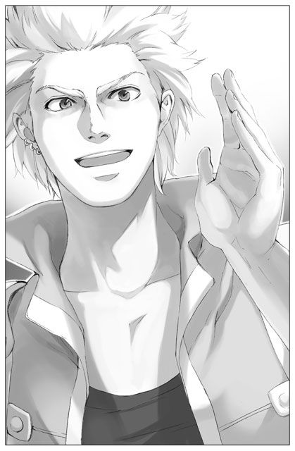
なんにせよ、ジークレストがユーナに呼びかけたことでアシュートの注意が彼女に向いてしまったようだった。険しい表情で、キッとユーナを厳しく見据える。
「シェリアスティーナ様」
すごい迫力だ。
「お一人で西側へいらしたと？」
「......は、はい」
「突然姿が見えなくなったというので探していたのです。──朝は大人しく儀式に参加されていたから安心していたものの。少し目を離した隙にこれですか」
「......す、すみません」
「謝るのなら最初からこのような軽率な行動は慎んでいただきたい。あなたになにかあってからでは遅いのですから」
「......は、はい」
「まぁ落ち着けよアシュート。シェリアだって反省してるみたいじゃねえか」
「お前は黙ってろ、ジーク！」
「......は、はい」
「それにシェリアスティーナ様。皆の面前で、これを連れて歩くのも感心しませんね」
ジークレストを「これ」呼ばわりか。キレた第一神聖騎士様はどこまでも恐ろしい。そしてもう誰にも止められない。
「彼が何者なのか、あなたもご存知でしょう？ 未来の神聖騎士団長と個人的な係わりを持つなど、言語同断です！」
「えっ、神聖騎士団長？」
そんなことは聞いていない！ しかしユーナの心の悲鳴は誰にも受け止めてもらえなかった。アシュートの説教はまだ続く。
「お分かりでしょう、ただの気まぐれでは済まされないのですよ。神聖騎士団副長にまで見境なく──。そのようなこと、この王国の顔に泥を塗るにも等しい行為なのです！」
「お、おいアシュート......、もうその辺に」
流石に周りの視線が痛くなってきた。西側ほどでないとはいえ、ここにだって使用人たちが大勢いるのだ。廊下を歩きながらも、皆失礼にはならぬ程度にちらちらと、それでいてしっかりこちらの様子をうかがっている。
「お前もお前だ、自分の立場をいい加減理解しておけ！ お前と聖女が二人で出歩く姿が、皆にどのような印象を与えるか。いつまでもいい加減な態度でフラフラされては困るんだ！」
「わぁかったって！ 悪かったよ。シェリアには、気まぐれで俺の方からちょっかい出したんだ。それに俺が誰か分かってないみたいだったしな。これ以上怒ってやるなよ」
「なら、代わってお前が怒られるか」
「それも嫌だ」
「全く！ いつまでもお前という男は」
はああ、とアシュートは大きく息を吐いた。右手で額を押さえ、心底疲れたという表情をする。心労を全部背負い込むタイプだな、と、ユーナは怒られながらもそんなことを考えていた。
「それで、シェリアスティーナ様は西側に一体なんのご用事だったのです」
「え！」
今度はそう来たか。どうする？ 正直にイーニアスのことを話したら、彼にも迷惑がかかるのではなかろうか。言葉に詰まりうろたえるユーナだったが、うろたえれば許してもらえるような相手ではないことは分かりきっていた。だが、だからといって......。
「イーニアスに会いに行ってたんだよ」
ユーナの迷いなどまるで意に介さず、ジークレストが代わりに告げた。途端にアシュートの表情が硬くなる。
「......イーニアス？ あのディルレイ家の」
「そう、例の事件で兵団の一般兵に格下げされてたイーニアス＝ノア＝ディルレイだ」
「ジークさんっ」
慌てて諌めるがもう遅い。
「今度のことであいつに直接謝りたかったみたいだぜ。それに、剥奪されてた準騎士の身分も返したいんだと」
抗議の意味を込めてジークレストの軍服の袖を引っ張ってみたが、ジークレストがそれを気にする様子は全くない。むしろ袖を引かれていることに気づいてすらいないようなごく落ち着いた素振りである。
「シェリアスティーナ様、それはどういうことですか」
「まあ待て、アシュート。その怖い顔どうにかしろって。そんなんだからシェリアもびびっちまって言いたいことも言えなくなるんだろ。それに、こんなところでいつまでも立ち話なんてしてられん。とりあえずシェリアを部屋に送ってやれよ。その後俺がちゃーんと説明してやる。話は全部聞いてたからな」
やはり小屋での話は全て盗み聞きしていたのか。もはや怒る気も失せたユーナである。アシュートもひどく不満げな顔をしていたが、この場は人目が多すぎるという点には納得したのか、それ以上深く追及してくることはなかった。
ユーナは、こっそり疲労と安堵の溜息をついた。
聖女を部屋に送り届けたアシュートは、真っ直ぐに姿勢を正し廊下を足早に歩いて行く。
たどり着いたのは、神聖騎士団副長控え室。入るぞ、と声をかけ慣れた動作で扉を開けると、中では堅苦しく立派な内装の部屋には似つかわしくなく、ジークレストがだらりとソファに寝そべりながら気だるげに剣を磨いていた。
「おーう、アシュート。早かったな」
やはりやる気の感じられない声で、ジークレストは軽く応じた。視線だけをアシュートに向けてニヤリと笑う。
「シェリアにいろいろ問い詰めてくるかと思ったけど。本当に俺のとこへ聞きにきたのか」
「話は全部聞いていると言ったのはお前だろ」
「そうだけど、どうせ聞くなら本人に聞いた方が早いし確実だろう。......と、お前なら判断すると思ったけどな」
「......シェリアスティーナ様と二人で話をするのは、苦手だ」
本音を言わされふてくされたように、アシュートは向かいのソファへ身を沈めた。
「ま、話っつっても大したことじゃねえよ。さっきも言った通り。シェリアなりのけじめとして、一人でイーニアスのところに行って謝ったってだけだ。もう一人、イーニアスと一緒に被害に遭ったネイサンって奴にも、きっとそのうち謝りに行くんじゃねえか。二人を準騎士の地位に戻したいって言ってたし」
アシュートは押し黙ってジークレストの話を聞いていた。足を組んでくつろぐアシュートの姿はなかなかにめずらしいが、ジークレストにとってはそんな彼の様子など別段珍しくも無いようである。それよりも、若き第一神聖騎士の横顔に混じる僅かな違和感に気づいたようで、ジークレストは剣を置いて上半身をゆっくりと起こした。
「なんだよ、なにか言いたげじゃねえか」
「......いや」
「別に悪いことじゃないだろ、シェリアのしたことは。ただ、お前が怒ってばっかだから、些細なことでも話しづらいんだよ」
「それは分かっている。──確かに、今回シェリアスティーナ様のされたことは悪いことじゃない」
しかしだから納得がいかないんだ、とアシュートは言葉を詰まらせた。
「はぁ？ なにが」
「お前がシェリアスティーナ様に会ったのは今日が初めて、つい先ほどのことだろう」
「まあそうだけど、それがなんだよ」
「『あの』シェリアスティーナ様は、普段とは違う」
「というと？」
「いつも通りというのなら、巷の噂そのものの人物だ」
「気まぐれで、冷血で、残忍で、どうしようもなくわがまま」
「そう」
「絵に描いたような悪女だって話だが」
「そうだ。だからこそ、お前とシェリアスティーナ様が真正面から出会わないよう取り計らわれてきたんだ。お前はシェリアスティーナ様にぶち切れるに違いないから、ってな」
「へーえ、なるほどそういうわけで、神聖騎士団副長のこの俺が今まで聖女に会えずじまいだったのか。──だが実際、会ってみりゃあ可愛いお嬢ちゃんじゃねえの」
「だからおかしいと言ってるんだ」
記憶を無くしたとはいえあそこまで変わるものだろうか、とアシュートは言葉にはせず考える。これから関わる者を幸せにしたい、と彼女は言っていた。そしてそのための行動を実際に始めている。しかし、今までの彼女からすれば、自分の過ちを認め自ら謝罪に赴くなどあり得ないのだ。例え天地がひっくり返っても──と、アシュートは思っていた。だがしかし、今天地はそのままにそうした事態だけが現実となっている。
「つまり、シェリアがいきなりいい子になって腑に落ちないって言うんだな」
「まあ......、簡単に言えばそういうことだ」
「いいじゃねえか、いい方向に変わってんなら」
「私だけじゃない、シェリアスティーナ様の変化に戸惑っている者は多いんだ。文句一つ言わず儀式に出たり、事実上の軟禁を黙って受け入れたり。なにか企んでいるんじゃないかと、国王にまで相談する者がすでに出ている」
「そんで、なんて言ってた？ 国王は」
「──相変わらずだ。大して興味も持たれず、すぐに報告者を追い返された」
「『ふむ、まあなるようにしかならんだろう』とか、そんな感じだろ」
「まさにそんな感じだ」
「ヘッ、お前も大変だな。どこまでも我が道を行く放蕩国王に、どこまでも我が侭を通す極悪聖女」
「言うな。頭が余計痛くなる」
実際辛そうに、アシュートは今日何度目かの溜め息をついた。今己の目の前にいる男も「そういう人種」であるからなお仕末におえない。
「頑張れよ」
明らかに他人事という風情で、ジークレストはせせら笑った。そんな彼をじろりと睨みつけ、アシュートは釘を刺すように告げる。
「お前にも頑張ってもらうつもりだが」
「は？」
「シェリアスティーナ様の護衛役を、お前に頼みたい」
「──ああっ？」
「ホリジェイルの件は大方片づいたとはいえ、だからといってこれから先シェリアスティーナ様に危害を加えようとする輩が全く現れないとは限らんだろう。今まで事実上の護衛がいなかったのも問題だ。もっと早くに適任者を見つけるつもりだったが......。どうやらお前とシェリアスティーナ様、意外に上手くやっていけそうだしな、よろしく頼む」
「ちょぉーっと待て待て。俺だって暇じゃねえんだぞ？ 副長として、一体いくつの隊を束ねてると思ってんだよ。聖女も騎士団も面倒見ますって？ 俺だって超人じゃねえんだから、そんなの無理だっつの」
「そろそろ次期副長を育て始めてもいい頃だろう。お前だっていつまでも副長止まりじゃないんだからな。少しずつ仕事を引き継いでいくべきなんじゃないのか」
「あのなあ、簡単に言ってくれるがな......、っと。そうだ、護衛役なら、立候補者が現れたんだぜ。そうそう、それもお前に伝えておこうと思ってたんだ」
「立候補？」
「──ああ、例のイーニアスの奴だ」
ふと真面目な顔つきになって、ジークレストは目の前の友人の様子を窺った。思わずアシュートも眉根を寄せてジークレストを見返してしまう。
「まさか。自分から再び護衛役にと言い出したのか？」
ジークレストが頷くと、アシュートは理解に苦しむと言わんばかりに渋面を作った。
「一体なにを考えているんだ、そいつは」
「さぁな」
「シェリアスティーナ様に脅されて仕方なく、というわけではないのか」
「そんな感じじゃあないぜ」
「なら、どんな感じなんだ」
そうだな、とジークレストは一瞬だけ小首を傾げ、次には生真面目な表情をして姿勢を正した。騎士然として跪き、射抜くほど強く真っ直ぐな瞳でアシュートの顔をじっと見つめる。
「あなたのことをもっと知りたいのです、あなたの護衛役を務めさせてください」
「......なんの真似だ」
「いや、だからイーニアスの」
「......」
もはやアシュートにはなにも言えない。絶句した彼を見て、ジークレストも軽く息をついた。
「まあ、アイツは見た目に似合わず良くも悪くも一直線な熱血野郎だからな。シェリアのなにかがアイツの琴線に触れたんだろう。本人はまだ無自覚かもしれないが、......シェリアに惚れかけてるんだろうなあ」
「元はお前の部下だったな。イーニアスは以前からシェリアスティーナ様を？」
「いいや。護衛役に任命されるまでは、ほとんど興味も無いような感じだった。あの事件の後も表立ってシェリアを非難するようなことこそなかったが、だからってもちろん気に入ってる風でもなかったしな。あいつの中で一体なにがあったのか、俺にも分からねえよ」
「そうか......。それで、その件に関してシェリアスティーナ様はなんと仰っている」
「ビビってた。向こうもイーニアスがそんなことを言い出すとは思ってなかったみたいだ」
「それはそうだろうな」
「一応二人の間では、ネイサン──例のもう一人が復帰した頃に護衛役に就くってことで話はまとまってるらしいが」
「ライナス殿の耳には入っているんだろうか」
聖女の後見人である彼が、シェリアスティーナに関する第一決定権を持っている。例え彼女自身が乗り気であっても、彼が是と言わねばそう簡単には話が進むまい。イーニアスの生家であるディルレイ家は名門中の名門であるため、再び護衛役に就かせることで──違う意味での──危険に晒すことはしたくない、とアシュートは考えていた。ただでさえイーニアスのことは大変な問題になったのだ。これ以上事を荒立てることはできない。どうにかしてライナスにこの提案を却下してもらえないだろうか。
「まだ知らされてないだろう。なんせ二人がその話をしてたのがついさっきのことだ。だが、耳に入ったところで、あの人は反対なんぞしないだろうよ。今までだって、ずっとそうだったんだろう？」
確かにその通りだ。ライナスは、シェリアスティーナがどれ程とんでもないわがままを口にしようと、それを諌めたためしがない。もしかしたら周りの与り知らぬところで災いを最小限に食い止めるべく奔走していたのかもしれないが、あの飄々とした様を見ていると、とてもそうは思えなかった。あまり期待はしない方がいいだろう、アシュートはすぐに考えを切り替えた。
「厄介だが、仕方ないな。私はイーニアスを説得する術を考えてみる。とにかくお前は、この件が片付くまでの間だけでも護衛役を引き受けてくれ」
「へいへい、了解しましたよ。ったく、めんどくせえなぁ」
「面倒だろうが手を抜かれては困る。シェリアスティーナ様は、ご本人がどのような方であれ、この国の宝なのだからな」
「この国の宝......ねぇ。よく言うぜ」
「心からの言葉だ」
そう、例えどれほど彼女が憎かろうとも。その事実だけは、いかなアシュートでも否定できない。そしてそれが自分にとっての重い軛たるのだろうと、アシュートは静かに瞳を伏せた。
いつの間にか、淡い三日月が宵の空を儚く照らしつつあった。
【６】
果てしなく広がる星空は、この世界を平等に包み込んでくれる。
もはや会うことも叶わぬ両親や友人たちも同じ月を見上げているのだろうか。そんなことを考えながら、ユーナは一人夜空を眺めていた。夜独特の匂いが好きだ。少し湿った空気が混じって、なぜだか懐かしさを思い起こさせる。それは嫌でなかった。むしろ心地よささえ覚えて、ユーナはそっと瞳を閉じる。近くに水の流れがあるのだろうか、サアアという優しい水音が微かに耳元を通り過ぎていったので、そちらに意識を傾けてみた。──昼間も同じ静けさだったはずなのに。夜になるとまるで世界が変わったかのようで、太陽の下では気がつかなかった様々なことに気づかされる。
（いつまでこうしていられるのかな）
バルコニーに身を寄せ、ユーナはひたすら景色を眺め続けた。もうすぐ見ることができなくなる風景、そう思えば尚更、目を逸らしがたく思われる。もともと一所にじっとしていることが苦痛ではない性質なのだ。この夜も随分長い間星月を見上げていた。
（──会いたいなあ、お母さんやお父さんに）
頭では分かっている。以前の自分はもう死んで、両親の心に大きな傷を負わせたばかりだ。そこへ押しかけていっても、この見知らぬ娘を見た両親がどんな反応を返すかは容易に想像がつく。両親が与えてくれた姿とはなにもかもが違うのだ。髪も、瞳も、この両手も両足も。聞きなれぬ声で「お母さん」と呼びかけても、きっとあの優しい母親を怯えさせるだけに違いない。「あなたの娘だよ」と訴えでもすれば、いくら気さくな父親とてふざけるなと激昂するのが目に見えている。
（それでも会いたい。もう一度死んでしまう前に）
完全に、ただのわがままだった。けれどこの上なく、純粋なわがまま。
そして絶対に叶えてはならないわがままなのだろう、とユーナは固く唇を結んだ。
（──考えても仕方ないか。もうそろそろ寝なくちゃ。風邪引いちゃいそうだしね）
夜風は少し肌に冷たい。心地よい、と思われる程度ではあるが、それでもこうして長時間身を晒しているのはよくなさそうだ。ユーナは後ろ髪を引かれる思いに駆られながらも、そっとバルコニーから身を引いた。ふと部屋に視線を戻せば、その殺風景な空間が否応なく孤独を誘う。
ふう、と息を一つついて、ユーナはベッドに身を沈めた。
（やっぱり私には、貴族みたいな暮らしが向いてないんだろうなぁ）
心の芯まで染みついた己の庶民根性に苦笑しながら、ユーナは瞳を閉じた。
次の日の朝、ユーナはいつものように顔を洗い、いつものように侍女に身支度を手伝ってもらった。姿見の前に立ち、髪や衣服に乱れのないこと確認する。よし、と口の中で呟いた。
夜はつい物思いにふけってしまう。日中考えないようにしている様々なことが、こんこんと泉のように次から次へと湧き出して、ユーナを呑み込んでいくのだ。その時自分は「聖女」でも「シェリアスティーナ」でもなく、しかしかつての「ユーナ」でもない気がした。
ときどき怖くなる。今ここにいる自分は一体何者なのか。自分はどこへ向かっているのか。前に進んでいるのか、それとも、一歩も進んでいないのか。そのたびに迷いを振り切ってひたすらこれから先のことを考える。
日の光はユーナに優しい。明るい日差しの下でなら、堂々巡りの葛藤からも解き放たれる。また今日も頑張ろうと、純粋にそう思うことができるのだ。
（うん、今日、ライナスにお願いしよう）
姿見の中の自分に頷いた。そこへ軽快なノックの音が響く。扉を開けてみると、タイミングよくライナスが気だるげな様子で立っていた。
「おはよう」
「おはよう、ライナス」
ふあ、とライナスは一つあくびをした。どこか顔色が優れないようだが、仕事が忙しいのだろうか。
「変わりはないようだね、シェリア」
ライナスはたまにユーナの様子を見にきてくれる。気まぐれだからかペースは決まっていないが、今朝来てくれたのはちょうどよかった。ユーナはにっこり微笑んだ。
「ライナス、せっかくだから入ってよ。お茶くらいなら淹れられるよ」
「......なんだい、その笑顔は」
胡散臭いものを見たと言わんばかりの様子でライナスは部屋に入ってきた。
「お茶はいいよ。なにか私に用事があるんだろう」
さすがはライナスだ、ユーナの考えなどお見通しらしい。
「......うん、あのね。お願いがあるんだけど」
「なに？」
「私ね──、やっぱりホリジェイルで被害にあった人たちと直接会いたいんだ、どうしても」
「......やれやれ」
ふう、と深い溜息。
「まだそんなこと言ってるのか」
駄々をこねる子供を諌めるように、ライナスは苦笑を浮かべた。しかしユーナも引く気はない。
「私、一週間くらいずっと自室にこもってたでしょう。その時、いろんな人と話をする機会があってね。いろんな人のいろんな意見、聞いた。それに自分でも考えたの。確かにライナスの言うように、私が姿を見せれば被害者の皆に刺激を与えるっていうのは、きっとそうなんだと思う。でも、それを避けて逃げてるだけじゃ全然前に進めないよ。私、もっとたくさんの人と向かい合いたいんだ。自分勝手な考えかもしれないけど許して欲しい」
「うーん......」
必死の訴えにもかかわらず、ライナスはどうしても快諾する気になれないらしかった。お願い、と両手を組んで、その気難しい顔を見上げてみる。しかし、稀代の美女の潤んだ眼差しも、ライナスの心を打つにはいまいち足りないらしかった。
「君ねえ、もう少しスマートに過ごしたらどう？」
「えっ、どういう意味？」
「どうしてそう、何事にも真正面からぶつからないと気が済まないのかな。ご立派過ぎて、私からすれば冷や汗ものだよ」
「そんな言い方！」
「できればもっと大人しくしていて欲しいな。君になにかあったらと思うとぞっとする。心配なんだよ」
「そう？ ただ面倒が増えるっていうだけじゃないの？」
「そんな言い方！」
ライナスはわざとユーナの口調を真似て、口をすぼめた。
「......気持ち悪いよ、ライナス」
「とにかくね、君にはまだ親の気持ちなど分からないだろう。親は子供のひた向きさを愛しく思うと同時に、恐ろしくも思うものだ」
「私だって本当はそんなに真っ直ぐな人間じゃないと思う。もしこんな状況に置かれていなければ同じことができるかは分からない。ずるいと思う。でも今だけは、真っ直ぐに生きてみたいって思うんだ」
あと少しの生命。その尊さが、今までのどの瞬間より胸に迫って、この身を駆り立てる。
「──ふむ。仕方がない、君がそうまで言うならもう反対はしないが」
「ほんと──」
「ただし。君一人で被害者たちに会わせるわけにはいかない。護衛を連れて行くこと」
「護衛？」
「うん、君はまだ知らないかもしれないけど、アシュート君が面白いのを用意してくれた」
「それってもしかして、イーニアス......」
いや、とライナスは短く否定する。
「でもまあ、そっちはそっちで面白いことになりそうだけどね」
「面白いこと？」
「そう、面白いこと」
謎めいた笑みを浮かべて、それきりライナスは口を閉ざした。この微笑みには、世界中の秘密がつまっているのではないか──、ユーナはそんな気がして天を仰いだ。
清めの間から程近い訓練場は、普段から静かな場所だった。
それほど広くもなく、特別な施設があるわけでもないが、やってくる人の数が非常に少ない。聖女が頻繁に足を運ぶ回廊を通らねばならないため、身分ある騎士たちでも自主的に立ち入りを控えているのだ。実際のところ、この訓練場を使用しているのはアシュートや神聖騎士団長、それに副長のジークレストくらいのものだった。
今もアシュートは無人の回廊を一人、訓練場へ向かって歩いている。
しかし剣の訓練を行うためではない。とある人物と秘密裏に手合わせを行うためだ。
簡素な訓練場の扉を開けると、中には既に先客がいた。イーニアスである。
彼はひどく緊張した面持ちで直立し、微動だにしていなかった。アシュートの姿を認めて素早く一礼すると、また元の姿勢に戻る。
「君がイーニアス＝ノア＝ディルレイだな」
アシュートも鋭い声で相手の名を確認した。今日は一個人としてこの場へ来ているのではない。王国の第一神聖騎士としてここにいるのだ。それを相手に暗に知らしめようとする意図があった。
対するイーニアスもそれは十分心得ている様子である。一分の緩みも無い引き締まった表情で、短く肯定を返す。
──もう何もかも理解している顔だな。頭のいい男らしい。
アシュートは初めて面と向かい合ったこの青年を、そう評価した。なにも知らされていないはずである。しかし怯む様子も混乱する様子もなく、静かに自分の目を見返してくる。並の度量ならばこうはいくまい。
「忙しい中、突然呼び出してすまなかった。手早く用件を済ませよう」
それだけ告げると、アシュートは流れるように長剣を鞘から抜き去った。
「君の実力を知りたい。私の相手になってもらう」
はっとして、イーニアスも己の剣に手をかける。それを見届けてから、アシュートは有無を言わせず相手の懐に飛び込んだ。
十分に反応できる時間を与えてやった。大きな動作で剣を振り上げ、緩慢に振り下ろす。イーニアスは剣を抜きざまそれをしっかり受け止めた。しかし胴ががら空きだ。このまま剣を引きざま横に薙いでやれば、確実に相手を二つに斬り裂くことができるだろう。アシュートは一瞬のうちにそう判断したが、あえて一歩後退した。なにも相手を殺すことが目的ではないのだ。
間合いを取った状態で、イーニアスは苦しげに顔を歪ませた。「なぜ引いた」とその表情が訴えている。イーニアス自身も、今しがたの隙ですでに決着がついたはずだと理解しているのだろう。
（あの一瞬を正しく判断できているなら、剣を使えぬ男ではない）
今度は先ほどのような手加減はなしに、一気に踏み込み下から斬り上げた。が、上手いタイミングでこれも受け止められる。そのままイーニアスは素早く後ろに飛びのいて、距離を保とうとした。
しかしアシュートは待たない。更に踏み込み、自分の間合いで鋭く剣を繰り出す。体勢の整っていないイーニアスは、左足を浮かせたまま不自然な状態で身体を傾け──、
（避けられまい）
そう、思った。己の剣がどのようにイーニアスを貫くか、すでに瞼の裏には見えている。
だが。
──アシュートの剣は完全に空を切った。
その刹那。
アシュートは頭の中に一閃を感じ、振り向きざまに感覚のまま剣を動かした。
刃と刃のぶつかる鋭い音が空気を裂く。
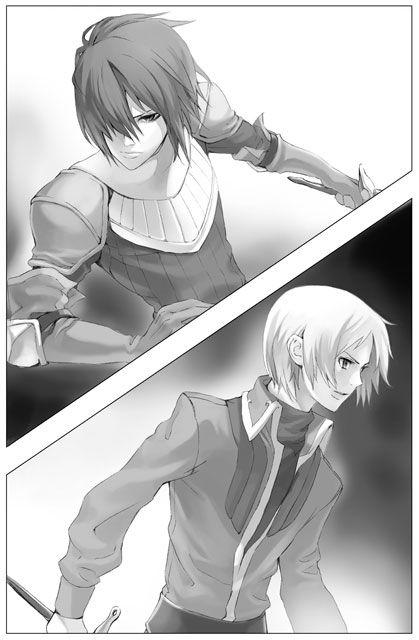
イーニアスの一撃だ。あの体勢から攻撃を避けただけではなく、一瞬でアシュートの死角に回りこんで反撃をしてみせたのである。
（こいつ......）
イーニアスはなお振り下ろした手を緩めようとしない。アシュートが片手で剣を構えているのを隙と見て、この鍔迫り合いを力任せに押し切ろうというのだろう。だがアシュートは、この体勢で張り合うつもりなど毛頭なかった。剣を持つ手をわざと引いて、しかし身体は既にイーニアスの横に回っている。イーニアスはすぐさま目でアシュートを追った。が、身体の方が追いつかない。
（遅い）
心の中で一喝してやる。それほどの余裕がある。
そしてアシュートは手元を正確に狙った。鈍い音がして、イーニアスの剣が飛ぶ。
「──！」
イーニアスは手元を離れた剣の行方に一瞥をくれた。が、すぐさまアシュートに視線を戻す。揺るぎない瞳。遠くで剣の転がる乾いた音がしたが、そちらにはもう全く視線を寄こさなかった。
（動揺が少ないな）
両手ががら空きになった状態で、なお集中力は途切れていない。これが手合わせであるからには、もう決着は着いたとイーニアスは分かっている。しかしこれが殺し合いであるならば、まだ彼は決して諦めやしなかっただろう。
（だが）
それでも、これはあくまで手合わせに過ぎないのだ。
（殺し合いなら、私とて剣を飛ばすだけでは済まさなかったさ）
アシュートは剣を鞘に収めた。瞬間、張りつめていた空気がいくらか和らいだ。
「完敗です」
悔しげにイーニアスは呟いた。おそらく彼とて、初めからアシュートに勝てるとは思っていなかったであろう。しかし同時に、ここまであっけなく決着がつくはずではなかったという思いもうかがえる。完全に己の力量不足と分かってはいるが、それでも悔しいものは悔しいらしい。ジークレストが言っていた通り、一本気な男のようだとアシュートは思った。
「まだまだだな」
「......はい」
イーニアスはぐっと拳を握り締めた。自分の不甲斐なさに我慢がならないのか。それとも、これからアシュートが告げる言葉を受け止める覚悟をしようとしているのか。恐らくはその両方かもしれない。
「なぜ私が君を呼び出し、突然剣を向けたか分かっているか」
「分かっているつもりです」
「そうか。ならば、今私が言わんとしていることも分かっているだろう」
「......はい」
イーニアスは伏せていた顔を上げて、真っ直ぐアシュートを見据えた。
「この程度の剣の腕でシェリアスティーナ様の護衛を務めたいなどと自ら申し上げること、身の程知らずもいいところだと自覚しております」
アシュートは頷いた。そう、この言葉をイーニアスに言わせたかったのだ。こちらから積極的に護衛の件を白紙に戻すことができないのであれば、イーニアスの方から辞退させるしかないと踏んだ。今のシェリアスティーナならば、あるいは、咎めなどなくイーニアスの辞退を承諾するかもしれない。
しかしアシュートは、思い描いていた通りの言葉を耳にしても「満足」とは程遠いところに自分の気持ちが漂っていることを感じていた。
自ら剣を交えたのが良くなかったか。僅かな時間ではあったが、剣を通してイーニアスの真剣な気持ちが流れ込んできてしまったのである。このような形でイーニアスの意志をへし折ってしまってもいいのだろうか？ 家のためにはなっても、彼自身のためにはならないのではないか？ 今更そんな思いが頭をもたげてしまう。
「ですが、アシュート様」
イーニアスはなおも口を開いた。その瞳を見れば、輝きは全く失われていない。──ああ、この男はまだ諦めてなどいないのだな。それが分かって、アシュートは密かに安堵してしまった。
「私は、己の剣に自信があるからと、このような申し出をしたのではございません。シェリアスティーナ様をこの手でお守りしたいと、ただそれだけの思いなのです」
「なぜそう思う？」
「......」
「おかしいだろう。筋が通らない。一体、聖女が君になにをもたらしてくれたというんだ？ 与えられたのは、絶望と憎しみの心だけだろう」
純粋に、ただ不思議でならなかった。剣を手にして、それでシェリアスティーナを守りたい？ その剣を向ける相手こそシェリアスティーナではないのか。少なくとも今の自分は、恐ろしくて彼女の前で剣を握ることなどできない、──犯してはならぬ過ちを犯してしまいそうで。
そんな彼を見返すイーニアスの瞳には少しの曇りも見られなかった。馬鹿な男ではないのだ。見れば分かる。剣を交えれば分かる。しかし分からないのは、なぜこのような男が「あの」聖女を信頼しているかということだ。
「......自分でもよく分からないのです」
イーニアスは戸惑いがちに口を開いた。
「しかしホリジェイルの中、あの極限状態に共に身を置いて、偽りのないシェリアスティーナ様の深い部分に触れることができたように感じました。特別、あの場でなにがあったというわけではないんです。自分でも本当に分からない。ただあの時、私はあの方にひどく心を打たれました。それまでの恨みや憎しみも全てかき消されてしまうほどに」
かき消されたりするものか。柄にもなく、アシュートは声を荒げて反論したい衝動に駆られた。憎しみというものはそう簡単に浄化することなどできやしない。心の暗い暗い部分に巣食って、人を蝕んでいくものだ。だから苦しいのではないか。こんなにも。
「そんな自分の気持ちに本当は今も戸惑っています。だからこそ私はもっと側にいて、知っていきたいのです、シェリアスティーナ様という方のことを」
イーニアスは深く頭を下げた。
「アシュート様、どうかお願いいたします。シェリアスティーナ様の護衛に就くことをお許しください。毎日剣に励み、相応しい力を身につけるため精進いたします」
「しかし」
「このことで今後なにがあっても、絶対に後悔はいたしません」
「待て。シェリアスティーナ様は危険だ。今は確かに穏やかに見えるかもしれない。だが、それを彼女の本性だと考えてはいけない。いつかまた、裏切られる日が来るぞ」
「それでも。裏切られる未来を恐れて、今の自分の気持ちに背を向けたくないのです」
──この男の気持ちは、覆せない。
アシュートは悟った。
無謀とも思えるその純粋さを苦々しく思う。同時に眩しくも思う。
──そして。
「......」
「アシュート様？」
「ああ、なんでもない」
自分の中に生まれた迷いに、アシュート自身が戸惑った。
（シェリアスティーナ様のことをもっと知りたい、か）
あの時の苦しみは忘れていない。憎しみもいまだ胸の内でくすぶっている。それが表に出ることがないよう、極力聖女に近づくまいと努めてきた。しかし今はどうだ？ 少しずつ、彼女から目を逸らせなくなってきている。ふとした拍子に彼女のことを気にかけている自分がいる。
（ただ、ホリジェイルを解放しただけではないか）
そのたった一つの行動が、自分の中のシェリアスティーナの評価を変えた？ それは単なる気まぐれに過ぎぬかもしれないというのに。
（──いや）
違う。分かっている。全てはあの晩に始まっている。あの崖の下で、彼女の瞳を捉えたときから。
あの瞬間、それまでとはなにかが決定的に変わったのだ。
アシュートは小さく頭を振った。目を閉じよう。シェリアスティーナと向かい合ってはいけない。聖女の言葉を深く考えてはいけない。でなければ、いずれ足元をすくわれてしまう。今度倒れてしまったら、再び立ち上がることができないかもしれない、──あの時のようには。
いつの間にか口の中がからからに渇いていることに気がついて、アシュートはごくりと唾を飲み込んだ。
その音が、やけに耳に響いて聞こえた。
午後になるのを待って、ユーナはホリジェイルの被害者たちの見舞いに出かけることにした。ライナスが言うには、ホリジェイル被害者専用の医療室が設けられ、ほとんどの者がそこで治療を受けているらしい。見舞いに行くならその医療室へ、ということだった。
一人では出かけるなとライナスに釘を刺されていたので、護衛役が迎えに来るのを自室で待っている。ユーナは部屋の中を行ったり来たりしながら、ゆっくり過ぎゆく時間をじれったく思った。
「おーう、待たせたな、シェリア」
意味もなくベッドのシーツを整えていたユーナは、ノックもなく突然開かれた扉から飛び込んできたその声に驚いて顔を上げた。
「ジークさん！」
先日初めて会った時と同じように、白い軍服をやる気なく着崩した大柄な男が、部屋の入り口にもたれかかって立っている。
「どうしたんですか？」
「どうしたんですか、って。お前これからホリジェイルの被害者んとこに行くつもりなんだろ。だから、その護衛」
「ジークさんが？」
確かジークレストは、神聖騎士団の副長なのではなかったか。
「言っておくが、俺だって進んで護衛を引き受けたわけじゃないぜ。アシュートの奴に押しつけられたんだ。ったく、あいつも横暴な奴だからな」
「そ、それはなんというか......、すみません」
「まあ期間限定だからいいけどな。結局、正式にはイーニアスが護衛役になるみたいだし」
あまりよくなさそうな調子で言う。しかしそうか、やはりイーニアスが護衛になってくれるのか。ユーナは嬉しいような申し訳ないような複雑な気分になった。
「ネイサンの奴まで護衛をやりたいなんて言い出さなきゃいいけどよ」
「ジークさんは断れなかったんですか？」
「断りたくても断れねえよ。鬼のアシュートの命令とあっちゃな。あいつは、こうと決めたら絶対にやり通す男だ。だからイーニアスの件には俺も驚いてるわけなんだが」
「イーニアスの件？」
「イーニアスが護衛役に就くのは皆が反対してた。アシュートも同じだ。で、力尽くの説得に行ったはずが、なにがどうなったのか逆にほだされて帰ってきた。シェリア、あいつからなにか聞いてる......、わけないか」
あいにくとなにも聞いてはいない。アシュートが自分に必要もなく話を持ちかけてくるはずがなかった。
「それよりも、なかなか変わった格好してんじゃねえか」
ジークレストは面白そうにユーナを上から下まで眺めた。今のユーナは膝丈のワンピースにパンツという身軽な服装である。長い髪も無造作に一つにまとめ、足元は動きやすそうなサンダルを履いている。
「いつものひらひらした服じゃ動きづらいなと思って」
「おいおい、なにしに行くつもりだよ。どっかの誰かみたいに、決闘ってわけじゃないんだろ」
ユーナは曖昧に笑って、部屋を後にした。
長い回廊を歩いていると嫌でも気づいてしまうのだが、すれ違う使用人たちの会釈がいつにも増してぎこちない。やけに軽装で歩いていくユーナに皆が不安を抱いているのだろう。今度は一体なにをしでかすつもりなのだろうか、自分に災いが降りかかりはしないだろうか。皆の思いが手に取るように分かってしまう。緊張のために強張った皆の顔を見るのはユーナにとっても辛く、ついうつむき加減になってしまう。しかし、この深い溝は容易に埋められるものではない。
「被害者たちに会ってどうするんだ？」
しばらく押し黙って半歩後ろを歩いていたジークレストが出し抜けに質問してきた。
「......そうですね」
ユーナは廊下を見つめていた顔を上げ、虚空に視線を彷徨わせた。
「ジークさんは、会いに行かない方がいいと思いますか」
「まあ、難しいところだな」
「私もそう思います。だけどやっぱり、なにか力になれることがあれば手伝わせてもらいたくて。例えば部屋の掃除をするとか、ベッドのシーツを替えるとか」
「ちょっと行ってちょっと手伝うだけじゃなあ。あんまり意味ないんじゃねえか」
「そうですよね。できるだけ毎日行きたいとは思ってるんですけど」
隣のジークレストがぴたりと足を止めた。
「待て待て。オイ、待ってくれ」
「罪滅ぼしのためにっていうだけじゃないんです。そういうのよりは、傷ついた皆さんのためになにかしたくて」
「いや、そうじゃなくて。ま、毎日？」
「はい」
「あのさ、分かってんの？ シェリアが毎日通うってことは、俺も毎日通わなきゃならないってことだぞ」
「そういえばそうですね。よろしくお願いします」
ユーナは慇懃に頭を下げた。
「おいおいおいっ。マジで冗談じゃない。俺をなんだと思ってんだ？ その辺のヒマ人？」
「そんな風には思ってません」
「だったら、ちょっとは俺のことも考えてくんない？ 過労死しちゃったら可哀相だろ、俺」
「......」
ユーナは少し首をかしげて見せた。
「そういうことは考えません。私、わがまま聖女ですから」
「こういうときに開き直るなって！」
げっそり、という言葉がこの上なくしっくりくる表情のジークレスト。彼には申し訳ないと思いつつ、ユーナも譲ることはできない。
長い廊下を抜けると、今度は左右に立派な柱が立ち並ぶ回廊に出た。周りは簡素な中庭のようで、控えめに木や花が風に揺れている。真っ直ぐに続く回廊の向こうには、背の高い白塗りの壁。頑丈そうな扉はきっちりと閉じられており、その向こうにはどのような空間が広がっているのか想像もつかなかった。──ここが医療室だ。
ジークレストが扉をゆっくりと開く。ふわり、と洗い立てのシーツの匂いがユーナの鼻をくすぐった。
そこはとても広く、開放感あふれる清潔な部屋だった。部屋の両壁にいくつもある大きな窓からはそよ風が吹き込んでゆらゆらとカーテンを揺らしている。その裾揺れの音しか聞こえないくらいに、部屋は静かだ。上を見上げれば、丸く縁取られた大きな天窓から燦々と太陽の光が注がれていて、ユーナは見惚れるように目を細めた。
なんて優しい場所。しかし、この風景に戸惑いを覚えるもう一人の自分がいる。その「感情」は、ここから逃げ出したいと切に訴えかけてくるのだ。大丈夫、大丈夫、ユーナは何度もそう言い聞かせた。
「ここだな」
ジークレストがそっと囁く。がさつそうな彼にしてはとても繊細な囁き声だった。広い間隔で備えられたベッドに人が眠っているからだ。彼らこそがホリジェイルの被害者たちに他ならなかった。
「うん、皆、眠っているみたいだね」
ユーナも小声で呟いた。
しかし。
その瞬間、部屋の空気が一変した。「ザアッ」と実際に音がしたかのように、本当に、あまりにはっきりと。穏やかで平和そのものだったこの部屋が、一瞬にして戦慄に包まれたのである。
いくつかのベッドが鈍く軋んだ。
──怯えている。突如姿を現した、聖女シェリアスティーナに。
声だけで自分と分かるのだ。そして身を縮めて固まっている。ユーナは愕然としてその場に立ち尽くした。
すぐに奥から人が出てくる。医療室の雰囲気がおかしくなったことに気がついたのだろう。優しそうな中年の女性だ。ユーナたちに気がつくと、小さな瞳を精一杯見開いて「まあ、まあ」と甲高い声を上げた。
「まさか本当に、おいでになるなんて」
「あ、あの」
一応顔を見せるという話は通してあったらしい。しかし具体的にはなにも聞かされていなかったようだ。女性は驚きと、かすかな困惑の色を浮かべユーナとジークレストに近づいてきた。
「申し訳ございません、なんのお出迎えもせずに」
「いいえ、こっちこそ突然お邪魔しちゃって。驚かせてしまいましたよね、ごめんなさい」
慌ててユーナが頭を下げると、女性はますます驚いたようにユーナを見つめた。
「......それに、私が来たせいで皆さんもびっくりしているみたい」
「ああ、ええと、そうですわね。聖女様のように高貴な方がいらっしゃるとは夢にも思っていなかったんでしょう」
そういう理由ではないことは、ユーナもジークレストも、口にした女性自身も勿論よく分かっている。ユーナは特になにも答えず、少し笑みを浮かべてみせた。
ベッドの中の人々は息を潜めてこっそりと三人の様子をうかがっているようだ。皆、掛け布団を頭まで被っているのでその表情は分からない。しかし痛々しいほどの緊張感はしっかりと伝わってきた。ユーナもつられて怯みそうになるが、そんな自分を叱咤して、一歩前に進み出る。
びくり。
掛け布団が一瞬揺れる。その足音にすら、彼らは怯え身体を強張らせているようだった。──自分の存在は、彼らにとってはあまりに強烈な毒なのだ。
ユーナは黙って頭を下げた。「ごめんなさい」そう言ってしまえばどんなに楽だろう。しかしその言葉は自分が軽々しく口にしてはいけない気がした。
長い間そうしていた頭をやっと上げても、ベッドの中の怪我人たちは変わらず凍りついたように固まっていた。分かっている。例えここでごめんなさいと言ったところで、「気にしないで」と微笑んでもらうわけには到底いかないのだ。ユーナはそう自分に言い聞かせて、女性の方を振り返った。
「えっと、あの」
ユーナは口をつぐんだ。
「ああ、失礼いたしました、私はミズレーと申します」
「ミズレーさん。お願いがあるんです。私に皆さんのお世話を手伝わせてもらえませんか？」
「ええっ？」
心底驚いたというように、ミズレーは高い声を上げた。
「床拭きとか、汚れ物の洗濯とか、できることはなんでもやります。儀式に出なくちゃいけないから、ずっとというわけにはいかないんですけど」
突然なにを言い出すのか。ミズレーの顔にははっきりとそう書いてある。ジークレストはやれやれと呆れた表情で天を仰ぐばかりだ。
「ゆ、床拭きだなんて。そのようなこと、していただくわけには参りません」
「あまりお役には立てないかもしれませんけど。でも、なにかしたいんです」
ミズレーは困りきった様子でジークレストに視線を送った。どうしましょう、と暗に助けを求めている。
「気の済むようにさせてやりゃいいんじゃないの」
ジークレストはジークレストで、仮にも聖女の付き人とは思えぬほどの投げやりっぷりだ。
「で、ですが」
「──あ！」
戸惑うミズレーをよそに、ユーナは部屋の奥を覗き込んで声を上げた。
「もしかして、ちょうど洗濯に行くところだったんですか？ それなら私にやらせてください」
大きな洗濯かごに、大量の白いシーツが入れられているのを目ざとくも発見したのだ。ミズレーがなんとも言葉を返せずにいると、ユーナはさっさとその籠を抱え上げてしまった。
「う......、い、意外に重たいんですね。すみません、洗濯場ってどこですか？」
「ちょっ、ちょっとちょっと、いけませんよ。聖女様がそんなことをなさっては」
「あ、裏庭に水場があるんですね。あそこ借ります」
ユーナは故意にミズレーの言葉を遮って、ずんずんと裏口へ向かっていった。残されたミズレーは、あまりに予想外の展開についていけない様子で立ちつくした。ジークレストは、ぽん、と彼女の肩を軽く叩いて、放っておけと呟いた。
それから一週間、ユーナは言葉どおり毎日医療室へ足を運んだ。
ある日は果物を運び、ある日は花を運び。ユーナが近づくと皆怯えるので、なるべく彼らを怖がらせないよう遠巻きに床を掃いたり洗濯物をたたんだりしている。初めの頃はこの部屋へ足を踏み入れるだけで別の「感情」が悲痛な声を上げていたが、それも少しずつ落ち着いてきた。五日目からは侍女のナシャが世話を手伝ってくれることになったので、ミズレーもいくらかほっとしているようだ。医療室で聖女と二人で雑務をこなすのに彼女も気疲れしていたのだろう。ナシャも最初こそ緊張のあまり固まっていたが、二日もすればすっかりくつろいだ様子で手際よく仕事をこなすようになった。
「ナシャ、ごめんね。私に付き合わせちゃって」
「いいえ、お気になさらないでください」
二人並んで洗濯物をせっせと洗う。ユーナはそっと隣のナシャの様子をうかがったが、実際彼女はそれほど嫌がっているようには見えなかった。──しかし、ユーナに付く侍女は彼女たち自身身分の高いお嬢様ばかりのはずだ。だからこうして下々の汚れ物をその手で洗うなどなによりの屈辱に違いない。と、ユーナは勘繰っていたのだが。
「......こういうの、嫌じゃないの？」
「ええ、むしろこういう作業の方が慣れているんです」
「慣れてる？」
「はい。名前からもお分かりかと思いますが、私は平民の出身ですので」
そうだったの、とユーナは驚いてナシャの横顔を見つめた。確かに「ナシャ」などは貴族らしからぬ名前である。たいてい貴族の名前はもっと長いものだ。しかし平民の出であるとは今の今まで思いもしなかった。聖女の周りを固めるのは高位の貴族たちと決まっているはずだったからだ。
「申し訳ありません。聖女様のお側にお仕えする侍女が私のような者で」
「どうして！ 私、嬉しいよ！」
ユーナは思わず大きな声を出してしまった。そうか、初めて会ったときに親しみを感じたのは同じ出身が故だったのか。
「う、嬉しい、ですか？」
「うん。だって私も平民の出身だもん。やっぱり、気疲れしちゃうよ。周りの人たち皆が本当は自分より偉いんだと思うと。でも、珍しいね？ ナシャの周りにもいないでしょう、同じ平民出身の人たちって」
「ええ──、それは」
口重たそうに、ナシャは言葉を濁らせた。もしかして、とユーナには思いあたることがある。
ナシャは、いわゆるスケープゴートとして自分の下に付けられたのではないか？ 聖女の身近な侍女になればなるほど、その毒牙にかかって不幸を抱える可能性は高くなる。かつて聖女の護衛役に誰もなりたがらなかったように、侍女たちの間でも激しい仕事のなすり合いが起きていたのかもしれない。近頃ますます様子のおかしい聖女を前に、侍女の身に万が一のことがあっても波風立たぬように──。ナシャは、そうして選ばれた平民侍女だったのかもしれない。
「ごめんね。色々大変だったでしょう」
「そんな、シェリアスティーナ様に謝っていただくことなど」
そう考えれば、初めてユーナの元に上がった日のナシャの緊張ぶりにも合点がいく。
シェリアスティーナ、あなたが戻ってきた時に側にいるナシャのこと、傷つけたりしないよね？ お願いだから、そんなことしないでね。ユーナは胸の中のもう一人の自分に問いかけた。ナシャを拒絶するかのような嫌悪感がじわじわと広がっていくが、ユーナはそれを押し込めるように強く念じる。──今は分からなくても、いつか気づいて。人を大切に思う気持ちが、自分自身も温めてくれること。
「さ、頑張ってあと少し、洗っちゃおう。これが終わったらナシャは休憩してね。私も部屋の掃き掃除したら、戻るから」
気をとり直して、わざと大きめに声を出す。
「いえ、私もご一緒します」
そう言って微笑むナシャの表情は、初日とは比べものにならないほど柔らかくなっている。その笑顔を見るだけでユーナの顔も自然とほころぶのだった。
「──さあ、お二方。ちょっと休憩されてはいかがです？ 美味しいお茶を淹れましたから」
部屋の裏口から顔を出したミズレーが、明るい声でユーナたちを呼び込んだ。
医療室に戻ると、ジークレストが暇そうに椅子に腰かけてまどろんでいた。暇そうではあるが、同時に気持ちよさそうでもある。それほどこの部屋は居心地のよい清涼な空気に包まれていた。ミズレーが隅々まで気を配っているお陰だろう。
ホリジェイルの被害者たちはいまだユーナには慣れないようである。ユーナがいる間中、布団を頭まで被ってまるきり反応を示さない。しかしそれでも恐怖心は薄らいできたのか、同室にいるだけで震え怯えることはなくなった。
それにしても、とユーナはこっそり被害者たちの様子を窺った。一つ気になっていることがある。
──ネイサンが、いない。
誰も彼も布団を被っているので、個人を識別することはできない。しかし一緒にいるジークレストの様子からしても、この中にネイサンがいないのは間違いなさそうだ。ホリジェイルの被害者たちはほとんどがこの場所で療養しているはずなのだが、ネイサンは別の場所にいる少数派なのだろうか？ この一週間、密かに悶々としていたのだが、そろそろ実際に確認してみようという気になった。
「あの、ジークさん」
「んあ？」
この上なく気だるげなジークレストの声。これで本当に聖女の護衛なのか。
「ネイサンさんって、ここにはいないんですね？」
「ああ、あいつはな。自室で療養してる」
「自室で？」
「そう。あいつもずいぶん痛めつけられたが、最後の一ヶ月くらいはもう拷問も受けてなかったみたいだな。その間に少しずつ体動かす練習してたんだろう、四ヶ月もあそこにいたとは思えないほど状態はよかった。その辺さすがに凡人じゃねえよな。身体の調子や本人の希望によっては自室で休んでもいいことになってるから、他にも自室療養してる奴はいるぞ」
「そうなんですか」
「押しかけようなんて思うなよ」
ぎらり、と突然鋭い眼差しになって、ジークレストはユーナを牽制した。
「......う、はい」
「それが悪いことだって言うわけじゃねえんだ。ただ、あいつはかなり周りの空気に敏感な奴だから、今シェリアに来られるのはなあ。まだしばらくはそっとしておいてやってくれ」
「......はい」
よし、と満足げに頷いて、ジークレストはぽんぽんとユーナの頭を叩いた。その様子を見守っていたミズレーとナシャは揃って息を呑む。聖女に対する護衛の態度とはとても思えないからだろう。そしてなによりも、そのような扱いを甘んじて受け入れる聖女ではないはずなのだ。しかし実際目の前にいるのは、拗ねたように背中を丸めて小さくなっている少女が一人。聖女の威厳はどこにも見当たらない。
布団の中に身を隠し息を潜めているホリジェイルの被害者たちも、ほんの少しだけ布団から顔をのぞかせ、ユーナたちの様子をうかがっている。
「さ、そろそろ戻るぞシェリア」
「ちょ、ちょっと待ってくださいよ。まだ洗濯物を干さなきゃいけないし、それが終わったら掃き掃除だって」
「だああ、もう！ 俺だって忙しいんだって！ このあと騎士団の訓練に顔出さなきゃならねえんだからさ。後のことはミズレーとナシャがやっといてくれんだろ」
「ジークさん！」
この五日間、ジークレストが口を開けばいつもこれだ。医療室に入った瞬間から帰りたがる。確かに彼にとっては随分手持ち無沙汰な時間だろう。この場でユーナを害する者など、内心はどうであれ、実際のところいやしない。だからといってユーナに付き合って掃除洗濯などもってのほか。となると、することがなにもないのが実情だ。ユーナもライナスに会うたび護衛はいらないと訴えているものの、聞く耳持たずという風情で取り合ってくれない。
「よし、そしたらこれでどうだ。シェリアを騎士団の訓練に連れてってやるよ。シェリア、あんまり出歩いてないだろ？ 自分の部屋と儀式の間の往復だけじゃつまらないと思わないか。せっかくこうして医療室にも足を伸ばすようになったんなら、他の場所も見て回ったほうがきっと楽しいぞ」
「だめですって......」
「シェリアスティーナ様、こちらのことは大丈夫ですよ。あとはしっかりやっておきますから、たまにはジークレスト様につきあってさしあげてくださいな」
微笑みながらミズレーが明るく言った。
「う、うーん」
「そうですよ、シェリアスティーナ様。私もミズレーさんのお手伝いをしますから大丈夫です」
ナシャにまで言われてしまっては、強引に居座り続けるわけにもいかなさそうだ。
それに確かに自分の勝手でジークレストを付き合わせてばかりいる。ミズレーの言うように、たまにはジークレストの提案に乗ってみるのもいいかもしれない。しかし、今目の前にいる被害者たちを放っていくというのも......。
すっかり黙り込んでしまったユーナを見て、気遣わしげにナシャとミズレーが顔を見合わせた。しかしジークレストだけはその沈黙を肯定の意と取ったらしく、大仰に頷くと、ユーナの腕を取り立ち上がった。
「よしよし、んじゃ行くか。皆シェリアを見たらびびって騒ぐだろうが、まあ安心しな。珍しがってちょっかい出そうとしても、俺の目の前ではお前に指一本触れさせねえよ」
最後だけ聞けば非常に騎士然とした頼もしい一言だ。が、この場合なんだかあまり嬉しくない。まるで見世物小屋の珍獣のような扱いだと感じてしまうのは、あまりにも被害妄想めいているだろうか。
なにはともあれ、抵抗らしい抵抗もできないまま、ユーナは医療部屋から引きずり出されてしまったのだった。
騎士たちの訓練場は王宮北側の静かな一角にあった。一般兵たちの訓練場のように生活に密着した賑やかな場所にあるのではなく、むしろ生活とは切り離された厳かな場所に立っているため、妙な圧迫感を受けてしまう。こんな場所でならさぞかし鍛錬にも気合が入るだろうと思いながら、ユーナはジークレストの後に続いた。
訓練場の重い扉を開くと、まずその広さがユーナの目を奪う。ただ広いだけではなく、天井も非常に高い。王宮内には信じられないほど天井の高い建物が沢山ある。下町にいた頃には教会くらいでしかそういう建物を目にすることはなかったので、ユーナにとってはいまだ大きな驚きだった。
しばらく天井を見上げていた視線を戻すと、十数人の騎士たちが思い思いに剣を振っているのが目に入った。流石に例のかっちりした白い制服を着こんではいないものの、動きやすそうでありながら品の良さを失わない訓練着を身につけているために、以前見た一般兵たちとは明らかに雰囲気が違っていた。
一人、こちらに気づいて視線を寄こす。そこから波及するように、だんだんと騎士たちの意識がジークレストと聖女の方へ集まってきた。ユーナは居心地の悪さを感じながらも、黙ってその視線を受け止めることしかできない。
騎士たちは聖女の姿に気づくとぎょっとしたように目を見開き、そのまま黙した。構えていた剣もいつしか下げられ、全員その場で直立の姿勢を取っている。ざわざわと無用に騒ぎ立てないのは、さすが厳格を重んじる神聖騎士団というところか。しかしよほどの衝撃を受けているらしいことは容易に想像がついた。
「おーし、皆しっかり訓練してるな」
この場の雰囲気を一人全く介していないジークレストが、明るい声で騎士たちに声をかけた。
「お前たちもよく知っているかと思うが、彼女は聖女シェリアスティーナだ。お前たちの訓練を見学したいというんで、お連れした。が、いいぜ、こっちのことは気にしなくても。お前たちはそのまま訓練を続けてくれ」
なんとも無責任な言葉である、シェリアスティーナに対しても、騎士たちに対しても。
どうするんだ、と言いたげな目で騎士たちはお互い顔を見合わせ始めた。なぜ突然、聖女が訓練を見たいなどと言い出したのか？ なぜ彼女は、聖女らしからぬ出で立ちでふらりと姿を現したのか？ 疑問はたくさんあるだろう。しかしなにより、聖女を前に訓練などを続けて、いつなにが彼女の逆鱗に触れるかと思うと気が気でないのかもしれない。
騎士たちがお互いに視線をやりとりしていたのはほんの少しの間だった。その視線はやがて部屋の最奥のある一点へと集中していった。──黒髪の、一際凛々しい青年の方へ。
（ぎゃっ！）
ユーナは心の中で悲鳴を上げた。
騎士たちを隔てたその向こう側で、アシュートが腕を組んで仁王立ちしながらこちらを睨みつけていたのである。無言の圧力。とても怖い。他の騎士たちは、この場の成り行きをジークレストよりも彼の判断に任せようというらしかった。すがる視線をアシュートに向けて、彼の言葉を待っている。
「げっ、......じゃない。よぉアシュート。お前も来てたの」
「......お前が聖女の護衛に出ていると聞いていたからな。代わりに騎士団の訓練に参加していた」
「ふーん、なるほど。いや、助かったよ。なかなかこっちに顔出す余裕がなくってな。今やっと時間作ったとこ」
「で？」
ぎろり、と音がしそうなアシュートの視線。これはなにを言っても怒られそうだとユーナは瞬間的に悟った。そして恐らくその考えは間違っていない。
「なぜ聖女が、お前と一緒にこんな所に現れる？」
「なぜって、なあ。シェリアが皆の訓練見たいって言うからよ」
またしても自分のせいになってしまうのか。ユーナはジークレストに寄せていたなけなしの信頼を今全て放棄した。そしてこっそりと彼の腕をひねってやる。むっとしたようにジークレストが振り返ったが、ユーナも気丈に睨み返した。
「だとしても、それで簡単にお連れするようでは護衛とは言えないだろう。ここでは、真剣を使っての訓練も行っているんだ。聖女に万が一のことがあったらどう責任を取るつもりだ」
「あー、うん。そうだな。悪かったよ」
大して悪いとも思っていない様子のジークレストだが、アシュートもそれには慣れているようだ。ジークレストの態度にそれ以上文句をつけることもなく、代わりに眉間の皺を更に深めるだけに止めた。
「シェリアスティーナ様」
「はっ、はいっ！」
反射的に、その場にいたどの騎士よりも姿勢を正して返事をしてしまう。ジークレストが隣でぷっと噴き出した。
「......お部屋までお送りしましょう。ジークレスト、この場の訓練はお前に任せる。怠けずしっかり稽古をつけるんだぞ」
こうしてユーナは、騎士団見学をものの五分で終えて自室へ戻ることとなったのだった。
長い廊下を並んで歩きながら、ユーナは不機嫌そうなアシュートの横顔をそっと盗み見た。先ほどから一言も喋ろうとしない。ただ真っ直ぐ前だけを見据えて歩き続けるアシュートに、ユーナもやはり閉口するしかなかった。
（気まずいなあ）
もともとアシュートは安易に人を近づける性格ではない。しかしことユーナに対しては、痛いほど拒絶の気配を身にまとっているからたまらない。
ユーナは手持ち無沙汰な両手を後ろで組みながら俯き加減に足を運んだ。自然とアシュートからは遅れてしまう。その度にアシュートは、少し歩みを緩めてユーナのペースに合わせてくれるのだった。それに気づき、ユーナも慌ててアシュートに駆け寄る。そういうことを何度か繰り返していた。
（嫌いな相手にも、そういう気遣いしてくれるんだ。きっと無意識にやってるんだろうな）
他人に対しても、きっと自分に対しても厳しいアシュート。彼を恐れる者は多いことだろう。しかしそこには確かに優しさがある。本当はいい人なんだ、とユーナは思う。だからこそ、そういう人物に徹底的に嫌われているのが悲しい。
（どうすればいいのかな）
ふと、空を見上げた。高い白壁と屋根の間にある大きな採光窓から柔らかな陽射しが差し込んでいる。この壁の向こう側には一体なにがあるのだろう？ もしアシュートが仲のいい友人だったらならば、部屋に戻る前に少し散歩をしようと提案することだってできるのに。
陽射しに気を取られ、いつの間にか再びアシュートとの間隔が開いている。アシュートは振り返り、静かに足を止めた。
「......シェリアスティーナ様」
「ご、ごめんなさい」
先生に叱られた生徒のように、ユーナは身を縮めてアシュートの側に駆け寄った。近くを行く使用人たちが不思議そうに二人の様子を眺めている。あまりに珍しい取り合わせだと思っているのだろう。
「どうかされたのですか？」
「ううん、なんでもないの。ごめんね」
どうも謝ってばかりだ。
「別に怒っているわけではありませんよ。ただ純粋に、不思議に思っただけです。前回王宮の西側にいらしたときといい、今回といい。このところ、全く思いも寄らないところであなたのお姿を拝見する」
「......」
「ちなみに、今日はまたなぜ、そのような格好を？」
言われて、ユーナははっと身を強張らせた。膝丈ワンピースに、シンプルなパンツ。そういえばアシュートの前でこの格好をするのは初めてだ。動きやすい七分丈のパンツはユーナにとっては大のお気に入りだが、アシュートにはとてもお気に召していただけないだろうことは容易に想像がついた。
「あの、えっと、けっこう動きやすくていいんだよ、これ」
いまいち答えになっていない。
「今日はホリジェイルの被害者たちを見舞われていただけでしょう？ なぜ動きやすい服装をする必要があるんです」
まさかそこで床拭きやら箒がけなどやっているとは、口が裂けても言えるわけがなかった。
「またなにかジークレストがあなたに下らぬことを吹き込んでいるのではありませんか？ もしそうなら、すぐに私に仰ってください」
「違うよ、私が好きでこの格好してるだけ。ちゃんと儀式の時とかは聖女らしい服を着てるからいいでしょう？」
「聖女『らしい』ときと『らしくない』ときがあったのでは困りますよ」
それは違う、とユーナは強く心の中で反発した。
「だって、私は、聖女である前に一人の人間だもの」
アシュートに反発するには勇気がいるのでどうしても小さな声になってしまうが、それでもユーナはゆっくりとそう言いきった。ちら、とアシュートの様子をうかがうと、思ったとおり眉を顰めてこちらを見下ろしている。
「聖女は職業みたいなものだと、思う。とてもとても大切な職業だけど。でも、それがすべてだとは思わない」
「あなたがそのようなつもりでいては、聖女を支えに日々を過ごしている民たちに示しがつかないではありませんか」
「皆は別に、聖女を支えに生きてるわけじゃないんじゃないかな。みんな、それぞれの大切なものを持ってるんだよ。自分が自分であるために大切なもの、持ってる。そういうものなんだよ」
かつての自分が一平民だったからよく分かる。一体誰が、毎日の生活の中で聖女のことを思っていただろう？ 神聖騎士のことを思っていただろう？ 彼らについてなど、ほとんどなにも知らないほどに無関心だった。遠い聖女のことよりも、今日の夕食の献立や明日の休日の過ごし方の方がずっと重要なのである。
「だから、私たちだって同じでいいんだよ」
「シェリアスティーナ様」
抑揚のない声でアシュートが遮った。この間ユーナの部屋で口論になったときと似た険悪な雰囲気がじわりと広がっていく。しかしアシュートは、以前とは異なり、意識して感情を抑え込もうとしているようだった。
「ごめん、アシュート。でも私は」
とっさに次の言葉を探してユーナは口を開く。しかしアシュートは、そのときユーナの方を見ていなかった。黒い瞳がわずかに見開かれ、──その視線はユーナの後ろを捉えている。
それに気づいたユーナは反射的に振り返った。振り返ろうとした。
そこで思わず息を呑む。
すぐ側に、見知らぬ若い男の姿があったのだ。
振り返るユーナの動きと、男の低い声が重なった。
「シェリアスティーナ、やっと捕まえた──！」
【７】
それからの出来事は、すべて一瞬のうちに過ぎ去った。
黒い男の影が急に大きくなる。男が右手を勢いよく振り上げたのだ。そうと分かった瞬間には、その手はもう振り下ろされていた。耳元を過ぎゆく鋭い風音。そしてほぼ同時に身体を襲った鈍い衝撃。ユーナは完全に混乱していた。その瞬間、自分はこの見知らぬ男の手に掛かったのだと全身が判断した。しかし頬を打つ地面の冷たさが、ユーナの意識をもう一度現実へ引き戻す。
ユーナは今、地面に倒れていた。覆い被さるようにして突き飛ばしたのは──アシュートだ。
ユーナがやっと上体を起こしたとき、アシュートはもうすでに膝を立てて相手を警戒していた。
自分を襲ったのはアシュートとそう歳の変わらない若者だった。右手に短剣を握っている。男は憎悪に燃えた瞳でアシュートとユーナを見下ろしていた。やつれたその風貌からは考えられないほどの力強さがほとばしり、その姿だけでユーナは戦慄を覚えた。
「──邪魔を、するな！」
叫んで、男は再び跳びかかる。アシュートは剣の柄に手をかけたが、そのまま動かず相手をただ睨みつけた。距離が縮まり、耐え切れずユーナは小さく悲鳴を上げる。ちょうどその瞬間、男の背後から太い腕が伸びてきて、男の右手を思い切りひねり上げた。そのまま男の身体を宙に浮かせ、あっという間に地面にたたきつける。
「ぐあっ」
その腕の主はジークレストだった。そのまま男の背中に体重をかけ、びくともしないよう巧みに押さえつける。
「......っぶねえ、あぶねえ。様子見に戻ってきてよかったぜ」
その頃になってようやく周囲がざわめきだした。その場にいた誰もが突然の出来事に全く動けなかったのだ。呪縛が解け、改めてこの事態の異様さを理解し始めたようだった。
「貴様、このお方を知らぬわけでもあるまい。己がなにをしたのか分かっているだろうな！」
立ち上がったアシュートは、厳しく男を追及した。
「分からないはずがあるかよ！」
ジークレストに組み伏せられた男は、そのような状況でも気丈に言い返す。
「この女の顔を忘れてたまるかっ。どんな悪魔よりも醜い聖女、シェリアスティーナ！ そうだ、俺はお前を殺す。絶対に──、殺してやる、殺してやるっ！」
狂気すら覗かせる男の叫びに、ユーナは言葉を失った。
あまりにも激しく深い、憎しみ。──殺意。
とても受け止めきれない。ユーナは思わず一歩後退った。しかし捕えられたように、男の燃えるような瞳に吸い寄せられてしまう。
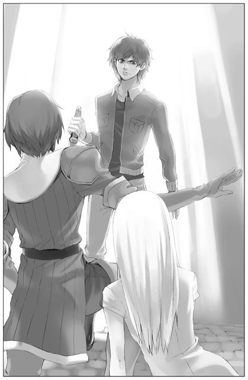
「聖女にこのような狼藉を働いた上、まだ愚弄するのか！」
「こっちは死ぬ覚悟だってできてんだ、構うもんかよ！」
男はアシュートに気圧されることなく、荒く叫んだ。
「この女は、俺から全てを奪ったんだ。やっと手に入れた幸せだったのに！ リノを返せ、返してくれ......っ」
「戯言は聞かん。衛兵、すぐにこいつを牢屋へ連れて行け」
「──待って！」
場違いともいえるユーナの声が割って入った。我知らず叫んでいたのだ。
「シェリアスティーナ様！」
「いいの、言って。言いたいこと、全部聞かせて」
諌めるアシュートを制して、ユーナは男と向き合った。男は信じられないというように目を見開いたが、すぐに激しい怒りがその表情を支配していく。
「今更、慈悲のあるフリをしようってのか？ それがなんになるんだよ！ お前は全てを奪ったんだ。俺たちの未来も、笑顔も、ささやかな幸せも！」
「......」
「どうしてリノを、妻を殺した？ 俺を殺せばそれでよかったんじゃねえのかよ。なんで、リノだったんだよ！ あいつがなにをしたんだ。こんなの絶対おかしいじゃねえかっ！」
──思い出した。彼はホリジェイルに投獄されていた青年だ。ホリジェイルを訪れたあの晩、リノだけは助けてくれと、そう懇願したあの声──。
「絶対に許せないっ。俺はお前を、許せない！」
男は組み伏せられたまま激しく暴かれたが、ジークレストをはねのけることは叶わない。それでもどうにか右手だけは束縛を逃れると、すぐ側に投げ出されていた短剣をつかもうと地を這いずった。
「させるか！」
アシュートが素早く短剣を蹴り飛ばした。それは軽やかな音を立てて石の床を転がっていく。ユーナは近くまで転がってきた短剣を拾い、その冷たさを手のひらで感じた。
ユーナが短剣に意識を奪われた一瞬のうちに、男はジークレストを始めとした数人の巡回兵によって再び地面に押さえつけられていた。
「くっ、離せ！」
「まさか、なおもシェリアスティーナ様を手にかけようとするとはな。この場で首を斬られたいか」
冷たい眼差しで、アシュートは今度こそ剣を抜いた。
鞘から抜ける刀身の澄んだ音に、男の肩が微かに揺れる。同時にユーナも心臓を掴まれたような感覚に陥った。──礼拝の間、地を這う黒い影、それを見下ろす兵士たち。そしてあっけなく殺された─毒虫。
「待って、アシュート！」
弾かれたようにユーナはアシュートに駆け寄った。そしてその左手に縋りつき、必死に彼を見上げる。
「やめて、殺さないで！」
「シェリアスティーナ様、お下がりください。どの道この者は極刑です。万が一にもあなたを傷つけさせるわけにはいきません」
「だめだってば！ だって、私はかすり傷一つ負ってないよ。それで死刑だなんて、そんなのおかしい！」
「あなたがそれを言いますか？ ──この者の言葉を借りれば、それこそ今更、というものでしょう」
男に向けたそのままの視線をユーナに移す。アシュートの瞳にも憎悪の影がちらついた。
「いやだ、いやだ！ 今更でもなんでもいいっ。絶対にこの人を殺してはだめ！」
「シェリアスティーナ様」
心底苛立ったように、アシュートは息を吐いた。それまで黙っていたジークレストも低い声でユーナを諌める。
「なあシェリア、わがままをちょっとは直せって言っただろ？ 聖女に凶器を向けるなんて、そりゃあ絶対やっちゃいけない行為だ。極刑なのは当たり前だろう」
「だって、もとはこの人の奥さんを......」
「それでもだ！」
ジークレストが声を荒げた。これにはユーナも身をすくめる。
「分からないのか？ 今ここでこいつを許したら、王宮は大混乱に陥るぞ。憎き聖女に復讐を果たしても罰する者は誰もいないってな。それなら自分もという奴らがわんさか出てくるに決まってる。聖女を恨んでいる奴は山ほどいるんだからな」
「......っ」
あまりにも正論で、ユーナはなにも言い返せなかった。──シェリアスティーナの蒔いた種が大きく育ち、その蔓がどこまでも自分を追いかけてきて絡めとる。今ここで彼を見逃せば、更なる怨みが膨らむばかりというのか。
「皆の見ている前でしっかり始末はつけなきゃならねえ。これは上に立つ者の使命なんだ。だからアシュートは、心を鬼にしてこの男を処刑する。いいかシェリア、お前のためにこいつは死に、アシュートは手を汚す。それを忘れるな」
そんな。そんなことって──。
目の前が真っ暗になった。ジークレストは間違っていない。間違っているのはきっと自分だ。しかし、正しさを追い求めることで得られるのは、ただ苦しみだけなのだとしたら。それでも、引き下がらなければならないのだろうか。
──いやだ。
ユーナは強く思った。
わがままだろうが傲慢だろうが、周囲の状況や将来の見通しをなにも考えていないと言われようが、手の届くところにいる人はこれ以上傷つけたくない。もうそんなことを繰り返してはいけないのだ、絶対に。
「だめ」
「シェリア──」
「絶対にだめ！ どうしてそんなに簡単に命を奪ってしまえるの？ 生きてるんだよ。この人は今、生きてる。この先だってずっと生きていけるはずなんだよ。それがどんなに尊いことか、お願いだから分かって」
ジークレストは苦虫を噛み潰したような顔になった。
「シェリア。俺たちのように戦いを生業にしてる人間が、なにも考えず簡単に人を殺してると思うのか？ そんなワケねえ。分かってるに決まってる、人の命を奪うってことの意味をな。その上で、俺はこの男を処刑するべきだと言っている」
本当には、分かっていない！ ユーナは心の底から沸き起こる叫びに身体を震わせた。やってくるはずだった明日が永遠に巡ってこない、その意味を本当に知ることなんてきっとできない。自分だって知らなかった──青い空を真っ直ぐ飛んでいく一羽の鳥も、通り過ぎるそよ風に身を揺らす木々のざわめきも、木漏れ日に照らされた花々の優しく甘い香りも......、自分という身体が全身で受け止めるこの「世界」が永遠に失われるということが、一体どういうことなのか。そしてきっと、自分はもう決して知ることはできない。その「世界」が長い長時間をかけてどれほど大きく広がっていくはずだったのか──。
ユーナは、アシュートに縋る手に力を込めた。
「お願いだから殺さないで。お願い......！」
そしてそのまま跪く。その姿を見て、その場の全員が言葉を失った。アシュートはもちろん、成り行きを見守っていた通行人たちも、男を取り押さえているジークレストも、取り押さえられている当の男本人でさえも、唖然として頭を垂れる聖女を見つめていた。
ふう、とジークレストが深い溜息をつく。どうするんだ、と視線だけでアシュートをせっついて。その視線を受けたアシュートは、やはり苦々しい顔で眉間に皺を寄せていた。
「......どうやらシェリアスティーナ様は、ご自身の目の前で穢れた血が流れるのをお気に召されぬ様子だ。しかしそれも至極もっともなこと。神の遣わせし聖女の前でかような下男の首を落とそうなど、私も愚かな真似をいたしました。どうぞお許しください」
苛立ちのにじんだ表情はそのままに、アシュートはユーナに向かって騎士風の堅苦しい礼をした。
「それじゃあ」
「この者は、一旦牢に繋いでおきましょう。のちほど、然るべき処置を取ります」
「──そんな！」
「ジークレスト」
アシュートは聖女の非難を遮るように、すぐ側の友に素早く声をかけた。
「悪いが衛兵たちと共にこの者を牢へ連れて行ってくれ。私はシェリアスティーナ様をご自室へお連れする」
「ああ、わかった」
「ま、待ってよ。私が言いたかったのは」
「さあ皆の者、それぞれの持ち場に戻れ。不用意に騒ぎ立てることは一切禁ずる！」
今度こそはなにがあっても譲らぬつもりらしい。ユーナを完全に無視して、アシュートは毅然とした態度で周りに命じた。こうなれば、一件落着の雰囲気が一気に広がっていく。立ち尽くして成り行きを見守っていた者たちも、たった一言すら口にせず各々素早く散って行った。そうして後に残されたのは、アシュートの腕にすがったまま呆然とするユーナと、それをなんとも言えない表情で見下ろすアシュートだけである。
「シェリアスティーナ様も戻りましょう。お部屋で、少し気を静められるのが良い」
──ひどい。ひどい、ひどい。
お部屋で気持ちを静めましょう？ なぜそんなことが平然と言えるのだ。自分の目の前で人の命が失われようとしているのに。
ふつふつと湧き起こってくる怒りは、しかしアシュートにはぶつけられない。──そもそもの原因はシェリアスティーナだ。そして、そのシェリアスティーナは今、他の誰でもない、自分なのだ。かつての彼女ならば、この状況ですら平然としてお茶でもすすっていたかもしれないのだ。
──ひどい。ひどい、ひどい。ひどい──！
一体なにが？ もはや分からない。なにに対してここまで憤っているのか。ユーナはどっと疲れを感じて、その場に倒れ込みたい衝動に駆られた。
自室へ戻り、ユーナはソファの上にどさりと身を放り投げた。疲れた。もう、本当に疲れた。
続いて入ってきたアシュートは、うなだれるユーナを静かな目で見つめ、後ろ手で扉を閉める。部屋まで見送ればすぐに立ち去るだろうと思っていたユーナは、そんな彼の行動を不審に思って顔を上げた。
「あの者のことを、随分気にかけていらっしゃいましたね」
ユーナは空ろな瞳でアシュートをただ見つめた。
「シェリアスティーナ様は記憶を失っておられるはず。それならばあの者のことも憶えていらっしゃらないのでしょう」
小さく頷く。
「彼の名はデュオ＝ウルグ。王宮の料理人としてこちらに住み込みで働いていました。最近、リノという婚約者を王宮へ呼び寄せ結婚したばかりだったそうです。デュオが投獄されたそもそものきっかけは、シェリアスティーナ様に出されたスープに小さな石のようなものが入っていたこと。そのスープを作ったのがデュオだったので、シェリアスティーナ様は彼を呼び出されました。話の中で口論となり、結果デュオはホリジェイル送りに」
それはもちろん初めて聞く話だったが、さほどの衝撃は受けなかった。分かっていたのだ、事のきっかけはごく些細なことに違いないと。
「リノさんを処刑したのも、私の命令なんだよね？」
「......ええ」
「私、ホリジェイルでデュオさんの声を聞いていたんだ。自分はどうなってもいいから、リノさんだけは助けてくれって......叫んでた」
その声を聞いた時に、彼と向かい合うべきだったのかもしれない。
きっとすでに手遅れだった。リノはシェリアスティーナの命令により処刑された後だったのだから。それでも、あの晩彼としっかり話をしていれば。自惚れに過ぎないかもしれないが、再び彼が投獄されるようなことは起こらなかったかもしれない。
「......アシュート、ちょっと一人にしてくれないかな。もう帰って」
ユーナは力なく呟いた。その言葉を受けたアシュートは、それでも全く動かない。
「お願い、一人にしてほしいの」
今、誰かが側にいるのは耐えられない。ユーナは理不尽に相手をなじりそうな自分をどうにか押し止めていた。八つ当たりでもなんでもいいから、このどこにもやり場のない苛立ちや焦燥感を誰かにぶつけてしまいたいのだ。
しかしアシュートは出て行かなかった。
「シェリアスティーナ様、あなたのご命令ならば、この国の法律でさえも覆ります」
静かな声だ。
「あなたがあの者を処刑するなと仰るならば、何人たりとも彼に手を出すことはできません」
「......でも、でも、さっき」
「ええ、私もジークレストも反対しました。そのような権力の乱用はお控えになるべきと考えるからです。理不尽にご自身の要求を通すことは、下々の反感をただいたずらに買うばかりです。それだけではありません。今回に限っては、ジークレストも言ったように、直接あなたの身を危険に晒すきっかけにもなりかねなかった」
「......」
アシュートのどこまでも静かな声に、ユーナも自然と落ち着きを取り戻してくる。
「あなたには、もっとご自身の立場を分かっていただく必要がある。それに、第一神聖騎士である私と神聖騎士団副長であるジークレストが、あまりに易々とあなたのわがままを受け入れる様を目の当たりにすれば、あの場にいた者たちの不満はますます増幅したでしょう。......今のこの国と聖女の関係の縮図を見せつけられているようだと」
「......そうかも、しれないけど」
「道徳に沿ってさえいれば何事もうまくいくとは限らないということを、お忘れなきよう」
「......」
ユーナは俯いて唇を噛みしめた。アシュートは間違っていない。要人に不敬を働けば死罪というのは国の法律だ。ならばその通りに処するのが本来採るべき道なのだろう。聖女の権力をやたらと振りかざしたくはないと自分でも思っているし、アシュートたちにとってもそれが好ましくないのは同様だ。─しかし。
「それでも、あの人を許してほしい」
その言葉を聞いて、アシュートは静かに瞳を閉じた。
「ごめんなさい。でも、やっぱりどうしても嫌だ。もし私が大切な人を傷つけられたら、きっと同じように聖女のことを許せなかった」
訥々と、胸の内に渦巻く思いを言葉に変える。アシュートは聞きながら、辛そうに顔を歪めた。
「シェリアスティーナ様、あなたはこの国の聖女なのですよ。感情に流されて物事を判断することは許されません」
「違う、そうじゃない。さっきも言ったように、人の命がかかっているときまで『聖女』でいることなんてできない」
「シェリアスティーナ様」
「アシュートだって、あの人の気持ち分かるよね？ これであの人が処刑されて、私は今までどおり我が物顔で王宮内を歩いてるなんて許せないって思うでしょう？ お願い、そうだって言って。あの人を処刑したりしないって言ってよ」
アシュートは首を横に振った。その表情が泣きそうに見えたのは、きっと気のせいではない。
「......あなたは本当に、記憶を失くしてしまわれたのですね」
「え？」
いえ、と彼は低く答えたのみだった。
「私は与えられた役目を果たさねばならない。たとえ人の命がかかっていても、です。シェリアスティーナ様、どうかお言葉を撤回してください。でなければ、話は平行線を辿るのみです」
「それはできない！ 私の命令は絶対だって言うのなら、お願いだから、あの人を許して。牢屋に繋いでいるなら、すぐに釈放して！」
「そうすることで王宮全体の雰囲気が変わってしまうことは、何度も申し上げているはずです。あなたに危害を加えようとする者が万一増えたら、私たちではお守りしきれないかもしれません。今回のあの者、デュオも、ホリジェイル解放後に危険視されていた人物でした。あなたに近づくことのないよう細心の注意を払っていたはずがこの有様です。これ以上王宮が混乱すると一体どうなることか」
「だけど、ここであの人が処刑されたって、それで皆の私への敵意がなくなるわけじゃないよ。それならあの人を助けても」
「シェリアスティーナ様、あなたの言動が下々の者たちにどれほど影響を与えるものか、よく分かっていらっしゃらないようですね。あなただけではなく、あの者──デュオに対しての見方も、必ず変わってくるはずです。これまで迷いなく死刑を言い渡してきたあなたが、突然デュオを無条件に許すという。デュオは一体どんな手を使ったのだろう、聖女となにやら関係があるのではないかと、周りは勘繰るに違いありません」
「......」
「それはデュオにとって死よりも辛い、最も屈辱的なことなのではないですか」
──そこまでは考えていなかった。確かにデュオにとって良くない噂が広まってしまうかもしれない。そうなれば、デュオには大きな苦痛になるだろう。しかし、それが生死よりも重要なことなのだろうか？ ......分からない、一体どうすればいい。
「とにかく、今は少し休まれてください。このまま話し合っても結論が出るとは思えません。今日明日にデュオを処刑するというわけではありませんから、どうするのが一番いいのか、じっくりお考えになってください」
アシュートは改めて姿勢を正し、軽く頭を下げた。彼の俯きがちな視線はユーナと交わることはなかった。アシュート自身も迷っているのかもしれない。ユーナは喉元まで出かかっていた言葉を飲み込んで、どうにか頷いたのだった。
アシュートが部屋を後にしてから、ユーナは広いベッドに身を横たえた。体中の力が抜けてしまった気がする。仰向けになり、じっと天蓋を見つめる。細かな模様が寄り集まって一つの大きな紋様を作り出している。あまりにも長い間見つめ続けたせいか、その模様が少しずつ動き出しているかのような錯覚を覚えた。
デュオのことはあまりに衝撃的だった。あれほどの強い憎しみを向けられたのは初めてだ。これまでもシェリアスティーナの愚行により傷ついた人々には出会ってきた。しかしその誰もが随分手加減して自分に接してくれていたように思う。本当は皆、デュオと同じように激しい衝動を内に抱えていたのではないか。
（どうしてここまで来てしまったのかな）
ユーナはぎゅっと白いシーツを握り締める。柔らかく滑らかなシーツの感触は、なんだかあまりにも自分には不相応な気がした。
（シェリアスティーナも、自殺しようと思いつめるほどに色々なことを後悔していたんでしょう。それなら、こんなことになる前にやり直すことはできなかったのかな）
そう考えたところで突然吐き気に襲われた。抑えきれない激しい怒りや憎しみの感情がユーナを襲う。それがあまりに強烈で、ユーナは今にも呑み込まれてしまいそうだった。
（本当は、あなただって、デュオさんを死なせたくないんでしょう？ シェリアスティーナ）
語りかけても返ってくる言葉はない。しかし言葉よりももっと確かな「感情」が、直接ユーナにぶつかってくるのだ。
「......」
ユーナはゆっくりと上体を起こした。はらはらとシーツに流れ落ちる長い髪をすくって、しっかりと一つにまとめた。そしてテーブルの上に置かれた呼び鈴を手に取り、迷わず鳴らす。
「シェリアスティーナ様、お呼びでしょうか」
すぐにナシャが姿を見せた。ユーナは一つ頷き、ストールをまといながらナシャに顔を向ける。
「ナシャ、悪いんだけどお願いがあるの。......イーニアスを呼んできてくれる？ できれば他の人にはあまり知られずに」
「......い、いかがされたのですか？」
「少し出かけたいんだ。でも一人で出るのはさすがにまずいし。ジークさんを呼んだら、ちょっと目立っちゃいそうだしね」
「出かけられるとは、どちらへ？」
ナシャが困ったように問いかけた。ユーナの命が狙われたことはもちろんナシャも知っているのだ。きっと周りからもユーナを無闇に外出させないようにと釘を刺されていることだろう。ごめん、とユーナは心の中で呟いた。
「絶対すぐに戻るから。お願い」
「......」
ユーナのただならぬ様子に、しばしナシャも押し黙る。ユーナがなにを考えているのか、アシュートやライナスに報告した方がいいのか、そういったことを短い時間で考えているのだろう。そうして立ち尽くしていたナシャだったが、最後には頷いてくれた。
「畏まりました。少々お待ちください、すぐに呼んで参ります」
一礼して部屋を後にする。そして間もなく姿を現したイーニアスは、一般兵の制服にやけに立派な上着を羽織っていた。一見しただけならばまさに上流貴族のようだ。
「イーニアス、どうしたの？ その服」
「副長......ジークレスト様が、ご自身の着ておられた服を。一般兵の格好でこの近辺に立ち入るのは変に目立ちすぎるからと仰って。......申し訳ありません、ちょうどジークレスト様と話をしていたところだったものですから」
ジークレストにはばれてしまったか。ユーナがこれからなにをしようとしているのかも、きっと彼には分かっただろう。しかしわざわざ上着をイーニアスに貸してくれたということは、それを黙認してくれると捉えていいはずだ。
「そうだよね、ごめん」
「いえ。それよりもどちらへ？」
「......デュオさんの、ところ」
分かっていた、というようにイーニアスは瞳を伏せた。
「それではすぐに参りましょう。夕方になれば人の行き来も多くなります。その前に」
「うん！ ありがとう、イーニアス」
ともすれば強硬に反対されるかと考えていたユーナだったが、その返事にほっと胸をなで下ろし、イーニアスの隣に並んだ。
デュオが投獄された牢はごく簡素な造りだった。狭く薄暗いものの、ホリジェイルとは違ってきちんと清潔に保たれている。煉瓦の壁で区切られた部屋は三つ。現在投獄されているのは、すべての部屋をあわせてもデュオ一人きりのようだ。
ユーナは牢番をどうにか言いくるめ、広い通路を歩いて行く。緊張のため自然と歩みも慎重になった。自分たちの足音以外、響く音はなにもない。デュオにはこの足音が聞こえているはずだったが、向こうからはまったく動きを見せなかった。もしや眠っているのだろうかとユーナは安易に考えたが、それは的外れな考えだった。
一番奥の牢の中で、デュオは片膝を立てて座り、その膝を抱え込むようにしてただじっとしていた。
空ろな瞳は目の前の鉄格子を注視しているように見える。しかし実際にはなにも映っていないのだろう。ユーナがすぐ側にやってきても、彼は微動だにしなかった。
「......デュオさん」
恐る恐るユーナは声をかけた。ぴくり、とデュオの肩が動く。そしてゆっくりとデュオの瞳がこちらを向いた。少しずつ顔を上げ、鉄格子越しに立つユーナの姿を捉えていく。
デュオはまだ無言だった。
「デュオさん、あの」
ユーナはなにを言えばいいのか分からなかった。すぐに怒鳴りつけられるだろうと覚悟していただけに、こうしてただ黙って見つめられると逆にうろたえてしまう。
「なにしに来た」
そこでやっとデュオが口を開いた。声が涸れてガラガラだ。捕えられてからずっと、叫び続けていたのかもしれない。その痛々しい声にユーナは唇を噛んだ。
「俺を見物に来たのか。お前に楯突いて、牢屋にぶち込まれて。気まぐれに解放してやったら、懲りずにまた噛みついて牢獄へ逆戻り。そんな馬鹿の姿が、お前にとっちゃ暇つぶしの余興になるんだろう」
「違う、そんなんじゃない」
「じゃあなんなんだよ。なにしに来たんだよ」
「デュオさん、お願いがあるんです」
ユーナは鉄格子の前に跪いた。
「私、あなたがここから出られるよう、皆を説得します。絶対にここから出られるようにします。だからデュオさんには生きてもらいたいんです」
デュオの表情が険しいものに変わっていく。
「黙れ。なんでお前にそんなこと頼まれなきゃならないんだ。今すぐ消えろ」
「お願い、聞いて。これから先の未来を諦めなたりしないで」
「うるさい！ 今すぐ消えろって言ってるだろ！ 最期くらいお前のことなんか忘れさせてくれよ！」
「最期なんて、言わないで！」
ゆるぎないユーナの叫びに、デュオは言葉を呑み込んだ。控えていたイーニアスがユーナを起こそうと手を差し伸べるが、ユーナはそれを拒んで、なおもデュオに畳みかける。
「デュオさん、お願いだから死のうとしないで。死んだらそこで全てが終わってしまう。憎しみは一生消えないかもしれないけど、それだけを抱えたまま死んでしまわないで。生きていれば、もう一度幸せを見つけられるかもしれない」
「ふざけたこと言ってんじゃねえ。お前にそんな綺麗事言える資格があるのかよ！ リノが殺されたと知った日から、なにを見てもなにを聞いても、全部が全部灰色なんだ。変わっちまったんだよ、俺の世界の全てが！」
「だけど」
「どのみちもう終わりだ！ お前を殺そうとした時点で俺は死刑確実なんだ。俺の気持ちなんて全然関係ないんだよ。それともなんだ？ 俺が生きる希望を持ったところで首を落とすっていうお前の新しいゲームなのか？」
「やめろ！」
イーニアスが割って入った。この状況に耐えられなかったのはユーナよりも彼だった。
「君がまだ処刑されずこうして無事でいられるのも、シェリアスティーナ様が上とかけあってくださったからなんだ。そのお立場を捨てて、君を自由にしたいと唯一仰ってくださったのがシェリアスティーナ様なんだぞ」
「はっ、持ち上げ役まで用意してくるとは念入りなことだな」
デュオは疲れたような笑みを漏らした。
「おまえが俺を無罪にする気か？ それこそ冗談じゃない。聖女に殺意を向けた人間が無罪放免になって、なにもしてない普通の娘が死刑になるだと？ そんな馬鹿げたことがあってたまるか。これ以上リノの死を貶めるようなことはやめろ」
「デュオさん」
「さっさと俺を殺せ！ 死刑にしろよ、今すぐにでも。最初からその覚悟はできてるんだからな。これで聖女が俺を釈放するようなことがあったら、その時はまたお前を殺しに行ってやる！」
デュオのひび割れた声が静かな牢獄に響き渡った。
窓から差す西日がデュオとユーナを照らし出している。なにもできぬまま、また一日が終わろうとしていた。
翌朝、目の前に並べられた豪華な朝食を見下ろし、ユーナはただぼうっとしていた。手に持ったフォークを動かす気になれない。あの牢獄の中でデュオはきっとほとんど食べていないのだろうと思うと、どうしても食欲がわかないのだ。パンを少しだけちぎって口へ放り込み、水で押し流した。
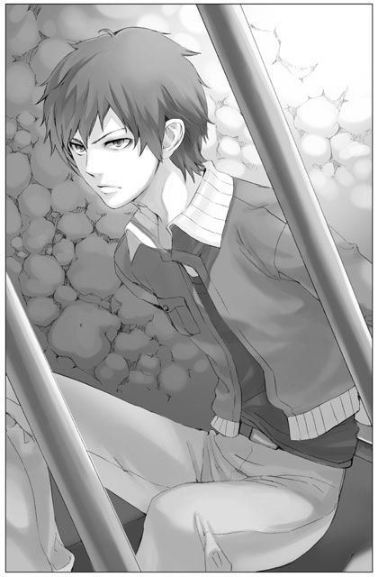
その後はいつも通り儀式に参加する。そしてホリジェイル被害者たちのいる医療室へ。ジークレストに軽く止められたが、それを振り切って足を運んだ。デュオのことがあるからといって他を疎かにしたくない。それに、ただじっとしていると無闇に気持ちが乱れるだけだ。
（本当に私って、無力だな）
桶に張った水の中に洗濯物を沈めていく。
（デュオさんにもう一度生きる希望を持って欲しいけど、どうすればいいのか全然分からない。私に助けられるくらいなら死んだ方がましだって、はっきり言ってた）
デュオの気持ちは分かる。殺したいほど憎んでいる相手に情けをかけられるなど、我慢ならないに違いない。
しかし同時に、また別の思いがユーナの中で渦巻いていた。デュオのその言葉を思い出すと、心の奥底で苛立ちにも似た感情が沸き起こってくるのだ。──それは認めなくてはならない事実だった。
（これは、私の、感情だ）
何度も経験してきた「別の」感情ではない。それは確かにユーナ自身の思いだった。
（どうして皆分かってくれないの）
なぜアシュートは人の命よりも職務を大切にしようとするのか。なぜデュオは復讐のために死に急ごうとするのか。なぜ周りの誰も、デュオを助けたいと声を上げてくれないのか。
（それになんで私は、馬鹿みたいに一人で動き回ってるんだろう？）
勝手に使命感に燃えて、やたらと場をかき乱して。結局なにもできていない。頼まれてもいないのに、自分はなにをやっているのだろう。いっそ初めから自室に閉じこもって時が過ぎるのを待ち続けていた方が、皆にとってもデュオにとってもよかったのではないか。こんなにも無力なのに、一体なにができると思っていたのだろう。
沈めた洗濯物を引き上げる気になれなかった。冷たい水の中に晒した両手を見つめ、じっと動かずにいる。
その様子を見ていたのだろう、隣のナシャも不意に手を止めユーナを見つめた。
「あの、シェリアスティーナ様」
その思いつめたような真剣な声に、ユーナはやっと顔を上げる。
「な、なに？ どうしたの、ナシャ」
「あの、その、私......、詳しいことはなにも知らない身ですけど。その、シェリアスティーナ様のこと、応援していますから......」
「......ナシャ？」
「えええっと、その、すみませんっ。わ、私ごときが、でしゃばったことを言ってしまって。でも、シェリアスティーナ様、どうかお一人で悩まれないでください。私も、僭越ながら、シェリアスティーナ様のお力になりたいのです」
一生懸命言葉を選ぶように、それでも緊張で考えが上手くまとまらないのだろう、所々つかえながらナシャはなんとかそこまで口にした。
その言葉を受けたユーナは、ぽかんと呆けるように口を開いて固まった。が、その一瞬ののちに、ぐっと唇を結んで顔を歪める。
「──ナシャ！ ありがとう！」
「きゃっ」
ユーナは勢いよくナシャに抱きついた。当のナシャは呻いて手をばたつかせている。そんな二人の様子を眺めていたらしいジークレストは、呆れたように溜息をついた。
「お前らなあ、女同士でなーにイチャイチャしてんだよ。俺も交ぜろって」
「......ジークさんのスケベ」
「なんだと？」
おりゃ！ とジークレストは水場に片手を突っ込み、ユーナに向かって水をかける。
「なにするんですか、濡れちゃったじゃないですかっ」
「当ったり前だろ。水かけたんだから」
「ジークさんのバカ、スケベ」
「ああ？ バカっつった方がバカなんだぜ。だからその法則からいけば、お前はバカな上にスケベってことになるぞ。よっ、エロ聖女！」
「エロ聖女ってなんですか！ 変な呼び方やめてくださいっ」
負けじとユーナも両手で水をかけ返す。するとすかさずジークレストも応戦してくるものだから、いつしかその場はあまりにも幼稚な言い争いと水の音でいっぱいになっていった。一人青い顔をしているナシャはといえば、止めることも、ましてや便乗することもできるはずもなく、ただオロオロと二人を見守っているのみだ。
「もうっ、いい加減に止めましょうよ」
やっとのことでユーナが切り上げたが、それも今更のことだった。散々水を掛け合ったせいでもはや二人はびしょ濡れだ。いや、巻き添えを食ったナシャも合わせれば、三人と言った方が正しいか。
ナシャやジークレストが自分を気遣ってくれているのは分かっていた。この世の終わりと言わんばかりの顔でここへ入ってきたのだから、それを見た療養中の被害者たちも驚いたに違いない。どうにかユーナを元気づけようとしてくれたナシャたちに心の中で感謝しつつ、声だけは拗ねたように呟いた。
「ここ、病室だし。あまり騒いだら迷惑ですよね」
しかしそんなユーナの声は、明るい女性の笑い声によってかき消される。
「シェリアスティーナ様、全然構わないんですよ」
この医療室の管理人、ミズレーだ。
「むしろ、こうして楽しげにしていてくださった方が皆のためにもいいんです。自分たちもまたああして水遊びをしたい、冗談を言って笑い合いたいと思うことが大切なんですから。病や傷を癒すには、気の持ちようが一番大切。どんなに些細なことがきっかけでもいい、ほんの少し、前を見ることが必要なんです。現に皆、さっきからシェリアスティーナ様たちのことをずっと気にしているんですよ」
言われてユーナは部屋の中に視線を移すが、皆いつものようにシーツを頭まで被っているため全く様子がうかがえない。
「今では皆、随分元気になりました。だからこそ、ベッドの外に興味を示すようになったんです。シェリアスティーナ様が毎日通ってくださったお陰でもあるんですよ」
違う、とユーナは唇をかんだ。皆が元気を取り戻しつつあるのは、他でもないこのミズレーのお陰だ。彼女の大らかな性格と優しさが彼らの心を癒している。ミズレーは不思議な女性だ。これといった華やかさは見当たらないのに、誰をも優しく包み込む懐の深さを感じさせる。今もユーナに対してわだかまりのない笑顔を向けてくれている。これは大変なことなのだ。
「色々とお忙しいとは思いますが、わずかな時間でもこうして足を運んでいただければ皆喜びます」
穏やかなミズレーの言葉に、ユーナも微笑んでみせた。
そうか。
（私、一人じゃないんだ）
改めて、そう気づかされる。
自分で全てをどうにかしなければならないと思っていなかっただろうか。デュオの心を解きほぐせるか、そして彼を釈放できるか、全てが自分の肩にかかっていると頑なに思い込んでいなかっただろうか。
（そうじゃない）
自分一人の力でできない事はたくさんあるのだ。例えばこの山のような洗濯物だって、ナシャの助けが無ければとても洗いきれないだろう。被害者たちに平穏な日々を届けることができるのも、今目の前でユーナを気遣うミズレーの存在があってこそである。
力になりたいと言ってくれたナシャの言葉がじんわりと心に広がっていく。
まだ町娘だった頃のユーナは、こんな風に支え合って毎日を過ごしていくのがごく当たり前のことだったのに。そんなことさえ忘れかけていただなんて。
（デュオさんのことだってそうだよ。私一人じゃどうにもできなくたって、他の人の助けを借りれば道が開けるかもしれない）
そう考えると、肩の力を少しだけ抜くことができた。簡単な道のりではないだろう。しかし辿れない道ではない──。
「それで、私のところへ来たのかい」
ライナスは椅子に深く腰かけ、気だるそうに前髪をかき上げた。目の前の机にはたくさんの書類が山積みになっていたから、やはり彼も暇な人間ではないのだろう。
医療室での手伝いを終えたユーナは、ライナスが執務室にいるという午後を狙って押しかけた。仕事の邪魔をするのは気が咎めたが、ユーナにも十分な時間があるわけではない。デュオを牢獄に押し込めて何日も放っておくわけにはいかないのだ。
「君ねえ、私は君の後見人だと言ったけれど、君専属のなんでも屋ってわけじゃないんだよ」
「わかってるけど、私一人じゃどうすればいいか分からないの。なにかいい案ないかな。ライナスならデュオさんを助けられる方法思いつかない？」
「思いつかないな」
即答だった。まるで考えている様子がないから苛立ってしまう。
「お願い、もうちょっと考えて。人の命がかかってるんだよ？」
「悪いが、私には他に考えなければならないことが山ほどあるんでね」
ペンを走らせていた手が止まった。そして顔を上げたライナスの瞳はいつになく冷え冷えとしている。
「人の命よりも大切なことってそんなにたくさんあるの？ どうして、皆して」
「たくさんあるさ。君は分かっていない。アシュート君やジークレスト殿が懇切丁寧に教えてくれただろう？ なぜデュオという青年を助けられないのか。それが全てだよ。他の誰に縋ったって同じことさ」
「死んで欲しくない、ただ生きていて欲しいって思うことが、そんなに間違ってるの？」
「間違っているなんて言わない。しかしそれだけで物事を動かせるほど単純じゃないんだ、この世の中はね。確かにデュオに死んで欲しくない者は他にもたくさんいるだろう。彼を想う者は死んだ妻だけではないはずだ。しかしその誰もが口をつぐんでいるということは、感情論だけではどうしようもないことと分かっているからだ」
「私には分からない」
ユーナはライナスを遮った。
「本当に、君は。私がなによりも分からないのは、他ならぬ君自身だよ」
ライナスはゆっくりと立ち上がり、ユーナの側まで歩み寄ってきた。ライナスを見上げる形になったユーナは、その威圧感に息を呑む。
「なぜそこまで赤の他人を想うことができる？ はっきり言って、君はデュオの件とは全くの無関係だ。君が彼を投獄したわけじゃないし、彼の妻を殺させたわけじゃない。君が責任を感じる必要などないはずだ。しかし君はこんなにも懸命に彼の命乞いをしている。──いいかいシェリア、私が考えなければならないことというのは、君のことだ」
ライナスはユーナの頬にそっと指を伸ばした。
「君はいったい何者だ？ シェリアスティーナの魂が疲れて神がどうのと言っていたが、そんな話を私が本気で信じたとでも？ 私は聖女の後見人を任されているんだよ。こんな状況をなんの疑問も持たずに受け入れられるはずがない。君の正体、事の原因、今後の対応──、明らかにしなければならないことは山のようにあるんだ」
「なに、その言い方。......私、嘘なんてついてない」
「そうかい？ 私には信じられないな。君は、シェリアスティーナがやがて戻ってくると言っていた。しかし本当にそうなのか。君の行動を見ていると、シェリアスティーナに身体を返すつもりがあるとはとても思えないんだよ。身に覚えのない叱咤を甘んじて受け入れ、犯してもいない罪の償いをしようとする。周りの人間に少しでも気に入ってもらえるよう健気に振舞って、挙句、不敬罪を働いた男を助けようと必死に駆けずり回ってみせる」
ライナスの指にわずかに力がこもる。
「そう──、どう見たって、君はシェリアスティーナの身体を、いや、人生を乗っ取ろうとしているとしか思えない」
どんと胸を突かれた気がした。
一気に涙が溢れかえり、ライナスの輪郭を歪ませる。心臓の音がやけに耳の近くで響いた。
「私......、そんなんじゃない」
どうにか声を振り絞った。
「私だって、好きで聖女をやってるんじゃない。シェリアスティーナの代わりになんてなりたくなかったよ。どうして私がって、思うことだってあったよ、もちろん！ でもそんな思いだけに囚われたくなかったから。だから、少しの間だけなら頑張ろうって自分に言い聞かせて。デュオさんのことだってそうだよ。誰もデュオさんを助けようとしないんだよ。本人だって助かろうとしないんだ。それでどうしてって言えば、お前に物を言う資格なんかないってはねつけられる。もう嫌だって、挫けそうになるよ！ 全部全部、投げ出しちゃいたいよ。でも、諦められない......。今まで信じてきたものを失くしたくないんだ」
「......」
ライナスは頬に添えていた指でそっとユーナの涙を拭った。
「私は聖女シェリアスティーナの後見人だ。いつでも彼女と、国のことを考えていなければならない。君のその叫びと涙を本物だと感じても、それを素直に受け入れるわけにはいかないんだよ、悪いけれどね」
ライナスの手は温かい。気持ちは冷たく突き放されてしまったのに、ユーナの頬を包み込む右手はどうしてこんなに温かいのだろう。
それがユーナを余計に悲しくさせた。
夕日が目に眩しいバルコニー。沈みゆく太陽を真正面に見据えることができるこの場所は、広い王宮内でも指折りの絶景地点と言える。ユーナは民衆への姿見せの儀に参加するため、そのバルコニーまで足を運んでいた。
磨かれた廊下にぼんやり映る自分の影をひたすら見ながら歩いている。結局ライナスの協力は得られず、それどころか逆にユーナの一番痛いところを突かれて、せっかくナシャたちにもらった元気が全部流れていってしまった気がした。それでもこうして儀式に参加しているのは、半ば意地のようなものだった。一度逃げる道を選んでしまったら、本当に戻って来られなくなりそうだ。
ユーナは民衆の待つバルコニーへとそっと降り立った。
途端、大きな歓声が耳をつんざき顔を上げる。
一面を紅く染める神秘の光はとても美しい。しかしその光景に目を奪われるより先に、バルコニーを取り巻く人の多さに圧倒された。一般の民衆に開放された広場には、文字通りびっしりと人が詰め込まれている。いや、進んで詰め込まれていると言うべきか。人の海のようだ、とユーナは呆然とそれを眺めた。誰も彼もが興奮した笑顔を浮かべ、懸命にこちらに手を振っている。
姿見せの儀に出るのはもう何度目かになるが、初めてこのバルコニーに姿を現した時よりも集まる人の数は増えているようだ。前はこれほどの混雑ではなかったはずである。以前とは違ってかかさず儀式に姿を現すシェリアスティーナを一目見たいということなのだろうか。
（皆は知らないんだもんね、シェリアスティーナという人を）
美貌の聖女。神に最も愛でられし乙女。彼らが知っているのは、シェリアスティーナという「型」でしかない。だから彼女を崇拝し奉りたてることができるのだろう。しかし彼女の経歴もその美貌も、本当の彼女自身とは違うのだ。本当のシェリアスティーナは、冷酷で残酷で。いや、それすらも彼女の「本当」ではないのかもしれない。そう、本当は誰も知らない。彼女という人間を......。
（なにがシェリアスティーナを『残酷な聖女』にしたんだろう）
思わず惑いが表情に出る。姿見せの儀の最中だというのに、心の中を占めるのは、今はどことも知れぬ遠くへ行ってしまった人のこと。彼女は誰？ そして、私は──。
は、とユーナは我に返った。駄目だ、今は儀式の最中だ。シェリアスティーナの華やかな姿を一目見ようと駆けつけた多くの民衆たちが目の前にいる。不安げな顔で皆を見下ろしていたのでは、彼らも不安になってしまうに違いない。
（でも、本当にそうかな。この広場を出れば、きっと皆聖女のことなんて頭からすっぽり抜けてしまうに決まってる。だって聖女なんて皆の生活とは無縁の人じゃない。私だってそうだった。シェリアスティーナの名前を思い浮かべない日は何日だってあった。それでも、困ったことなんて一度もなかったもの......）
眉間に皺を寄せて、ユーナは民を凝視した。屈託のない彼らの笑顔が今は苦しい。ここにいるのは本物のシェリアスティーナじゃないんだよ。偽者なんだよ。特別な力なんてなにもない、誰も救うことができない、ちっぽけなただの人間なんだよ。
再び視線を落としかけたとき、ユーナは気づいた。
たくさんの人の波に揉まれながら、そして自らもその一員となりながら、懸命にこちらを見上げている老女がいる。──彼女は涙を流し、それでも全くはばかることなく一心にユーナを見つめているのだった。両手をしっかりと胸の上で組み合わせ、まるで神の目の前に跪くかのごとくである。
（あ......）
ふと、思い出した。
（アシュートが言ってた。私たちを支えにして日々過ごしている人がいるって。そうか、いるんだ。いるんだ、本当に）
老女の真っ直ぐな眼差しを受け、ユーナも目を逸らせなかった。
アシュートはこの老女の眼差しを受け止めたいと願ったのだ。己を信じ、己に希望を見出す人々の心を受け止める道を選んだ。第一神聖騎士であり続けるということは、そういうことでもあるのだろう。自分の感情を殺してデュオを処刑しようとしたのも同じ。己の心に従って彼を簡単に許すことは、第一神聖騎士の役割を放棄する──つまり、デュオを助けて他の皆を裏切ることに繋がりかねなかった。
（ライナスが言っていたのも、こういうことなんだ）
ユーナは自分の背負った「聖女」の重みをまるで理解していなかったと思い知らされた。
（確かに私、ただわがままを言ってただけかもしれない。自分ではなにもせず、誰の立場も考えないで、ただ闇雲にデュオさんを助けてって叫ぶばかりで。自分は正しいって思い込んで、助けるために動いてくれない他人を責めてた）
しかし、正しいとか間違っているとか、きっとそういうことではないのだ。アシュートにはアシュートの、ライナスにはライナスの「信じる」道があるのだろう。それはきっと簡単に方向転換させることはできない。そんなことも分からずに、ただ自分の考えを無理やり押しつけ、助けてもらおうとしてしまった。
（物語の毒虫は......どうなった？ 毒虫に変わってしまった男）
無残に踏み潰されたあの黒い虫が頭をよぎる。
（助けを求めるばかりで自分ではなにもできないままで──そう、死んでしまったのではなかった？）
助けを借りて頑張ることと、助けを求めてなにもしないことは、似ているようでまるで違う。
（私......、色々なことが分かってなかった）
ユーナは改めて広場に集まった民衆を見渡した。そしてそのまま長い間、動けなかった。
【８】
膠着しかけた事態を動かしたのは、あまりにも意外な人物だった。
「シェリアスティーナ様、デュオさんを助けるために、ヨデル様が動いてくださっているそうですよ！」
数日経ったある日の午後、お茶の準備にやってきたナシャが浮かれながらユーナに報告した。ナシャもデュオの件については知っている。というよりも、今度の事件は瞬く間に王宮内へ広まっていき、もはや知らぬ者はないほどになっていた。多くがデュオの立場に同情していたが、聖女に刃を向けたという事実から、彼が処刑されるのは致し方ないというのが大方の見方だった。それが、なかなかどうしてデュオが処刑されぬというので、皆訝しがっているのだ。
聖女が彼をどうにか助けたいと考えていることは、おそらくほとんど知られていない。しかしナシャは長くユーナと過ごすうちにその思いを感じ取っていたのだろう。近頃沈みがちだったユーナを励ますことができるのではと、持ってきた情報に期待しているようだ。
「ヨデルさんって、あの、神官の？」
「そうです！ 以前ペンダントのお話をした、あの方です」
ユーナは純粋に驚いた。前に厳しく詰められてから一度も姿を見ていなかったが、彼女は彼女で動いているらしい。──それも、デュオを助けるために。
「なんでも、デュオさんを釈放して欲しいという署名を集めておられるとか。運動の内容が内容だけに大っぴらには活動できていないようですが、王宮の使用人を中心に、貴族の方なんかにも少しずつ署名をお願いされているそうです！」
「そう......なんだ」
久しぶりに気持ちが上ずってくる。ヨデルを冷たく厳しい人だと思っていたけれど、窮地に立たされた無力な者に進んで手を差し伸べることができる人なのだ。デュオを助けるために、署名運動を──。
「すごい。ヨデルさんって、すごい！」
「そうですよね。本当に素晴らしい方です！」
ユーナとナシャは手を取り合って喜んだ。そうか、そういう方法があったのか。デュオのことを助けたいと思う人は、きっと多いはずなのだ。ただ、思っていてもそれを声に出すことは難しかった。ならば、誰かが率先してその声を集めたら。一人の声は届かなくても、それが束になれば大きな力になるではないか。ヨデルはそれをちゃんと分かっていたのだ。
「どのくらいの署名が集まったのかな」
「おそらくそれほど多くは......。今はまだ小さな運動みたいです。いくらヨデル様の後ろ盾があるといっても、やっぱり自分の名前を書くのに抵抗がある人も多いのでしょうね」
確かにそうだろう。──ナシャは明言しなかったが、つまりそれはシェリアスティーナの存在が邪魔をしているということだ。皆は聖女がデュオを釈放したがっていると知らない。むしろこれまでの行動に鑑みれば、率先して彼を処刑するつもりだと思うだろう。この署名運動に加わるということは、聖女の意思に反対の意を示すということになってしまう。
（でも私がデュオを釈放したがってることは明言しない方がいい。それだと結局私の権力でデュオを助けることになっちゃうかもしれないし）
とはいえ、このままじっとしていることもできそうにない。やっと光が見えたのだ、デュオを助けることのできる光が。
「私もこっそり手伝わせてもらいたいな」
「えっ？」
「署名を集める手伝いがしたい。前に王宮の西側へ行ったとき、あの辺りの人たちは私の顔を知らなかったみたいなの。あそこでなら聖女だってばれずに署名集めができるかも」
「で、ですが、シェリアスティーナ様」
話が思わぬ方向に進んでしまったと、ナシャは慌てた様子だ。
「イーニアスにもお願いして付き合ってもらおう。そうだ、医療室の皆にはもう署名してもらったのかな？ まだなら頼んでみようかな。医療室の皆ならデュオのこと助けたいってきっと思ってくれるよね」
「あ、あの......、本当に、されるんですか？」
「大丈夫、本当にこっそりやるから。......ヨデルさんにも内緒でね。きっと私が運動に関わってるって誰にも知られない方がいいと思うし。うん、そうと決まったらさっそく行ってくるよ。夕方にはまた儀式があるから、それまでには帰ってくるね」
ナシャが止める間もなく、ユーナは素早く準備を整えイーニアスを部屋に呼んだ。やって来たイーニアスも、生き生きとしたユーナの様子に反論するのは気が引けたようだ。それでも心配そうな二人の様子を見てユーナは苦笑した。
「ごめんね、好き勝手なことばかりやって。でもやっと、やるべきことが見えた気がする。──ヨデルさんのお陰で」
王宮の西側は以前足を運んだ時と変わらず賑やかだった。やはりこの辺りではユーナの顔は知られていないらしく、ほとんどの者が素通りする。時折一般兵たちがイーニアスに声をかけユーナとの仲を茶化していくが、まさか相手がかの聖女様であるとは夢にも思っていないようだ。
「シェリアスティーナ様、すみません。仲間のせいで不快な思いをさせてしまって」
「全然気にしてないよ。むしろ私の方こそ、なんだかごめんね」
「いえ、俺は」
「おっ、イーニアス、なんだデートかよ？」
二人の背中に声をかけてきたのはまた別の兵士である。なにやら大きな荷物を三人がかりで運んでいるようだ。馬鹿、と諌めるイーニアスに笑い声が降りかかった。ユーナもつられて振り向くと、途端に兵士三人の表情が固まる。
（あっ、もしかして私の顔知ってた？）
「......イーニアス、な、なんだよこの凄い美女は」
それが自分のことを指していると気づいてユーナは顔を赤らめる。そうか、シェリアスティーナはとんでもない美人なのだった。普段はそんなことを気に留める余裕もないので忘れていたが、自分だって初めてこの姿を見たときはあまりの美しさに絶句したものだ。
しかし、どうせならばこれを使ってしまおうか。ユーナは緊張しながらもにっこりと三人の兵士に微笑みかけてみせた。
「あの、実は今、皆さんにお願いして回っていることがあるんです」
なんでしょう、と彼らはすぐに食らいついてきた。
「聖女シェリアスティーナ様に歯向かったとして投獄されているデュオという人をご存知ですか？」
「ああ、知ってますよ」
「デュオさんの身の上を思えば、このまま彼を不敬罪で処刑するのはあまりにも忍びないと思いませんか？ そこで、彼を釈放するための署名を皆さんにお願いして回っているんです」
「釈放するための署名？」
兵士たちは戸惑ったように顔を見合わせた。
「いや、まあ確かに同情はするけど、なあ」
「ああ、でも署名ってのは......」
「お願いします、どうか力を貸してください。運動を始められたのはかのヨデル様です。きっと皆さんのお声は、ヨデル様が然るべきところへ届けてくださいます」
演技ではなく必死の表情で兵士を見つめると、三人は顔を赤らめながら再び互いに視線を交わした。
「......イーニアスは、署名したのか？」
「ああ、もちろん」
イーニアスがしっかり頷くと、彼らも決意を固めたようだった。ペンを取り順に署名していく。
「ありがとうございます！」
弾んだ声でユーナは兵士たちの手を握り締めた。その様子を遠巻きにうかがっていた他の面々も興味深そうに近づいてくる。その大半は男性だったが、次第に男女の隔たりなく大きな輪となっていった。
ヨデルの名前は抜群の効果を発揮した。ヨデルがついているのならと署名してくれる人も少なくない。どれほど彼女が皆に信頼されているのかを、ユーナは実感せずにはいられなかった。署名を集める中で聖女に対する憤りの声もしばしば聞こえてきたが、ヨデルを悪く言う者は一人もいない。中にはヨデルこそ聖女に相応しかったと言い切る者もいるほどだ。それはユーナにとって耳の痛い話ではあったが、とにかく今は署名を集めることに集中した。
「熱心ですね。もう少し中心に近いところでも同じように署名を集める人がいましたけど、あなたたちの方が一生懸命ですよ」
気のよさそうな女性がそう言って大らかに笑った。それを聞いたユーナは内心慌てる。本物のヨデル組と鉢合わせて騒ぎになってはまずい。悪いことをしているわけではないが、自分の正体が明らかになるのは避けたいのだ。
「イーニアス、今日はもう切り上げよっか」
イーニアスもそれには異存ないようだ。
「帰りに医療室に寄ってもいいかな。そこでも署名を集めたいんだ」
「そうですね、それでは戻りましょう」
中心地へ戻りながら、ユーナとイーニアスはそれぞれ手にしていた薄い外套を素早く羽織った。着ている服は西側で目立たないようにと質素なものだったが、逆に中心地でそれではひどく目立ってしまう。仕立てのいい外套をまとうことで、それをどうにか誤魔化した。
「あ、ミズレーさん」
医療室の側までやって来たところで、ミズレーが出入り口の掃き掃除をしているのが目に入った。
「まあ、シェリアスティーナ様。護衛さん、今日は別の方なんですね」
ミズレーは顔を上げて満面の笑みを浮かべる。イーニアスも軽く会釈をして挨拶に代えた。
「さあどうぞ、お入りくださいな」
「いえ、ここでいいんです。ミズレーさん、実はちょっとお願いが......」
「ええ、ええ。署名の件ですね。ナシャさんから聞きましたよ。彼女がちょうど今中で皆を回っているところです」
「ナシャが......。あの、それで皆さん、署名してくれそうでしょうか」
ミズレーは大きく頷いて見せた。
「大丈夫ですよ。きっとデュオさんを助けたいと誰よりも強く思っているのがここの皆じゃないでしょうか。もちろん私も署名させていただきましたしね。よかったら中で様子をご覧になればいいのに」
「入ったら皆さん萎縮しちゃって署名どころじゃなくなっちゃいそうですから。ナシャが頑張ってくれているのなら任せたいと思います」
「そうですか？」
少し残念そうにミズレーは相槌を打ったが、それ以上強くは言わなかった。
「ではまた、ぜひお顔をお見せくださいね。お待ちしてますから」
「はい、ありがとうございます」
そしてユーナとイーニアスは部屋に戻ってきた。アシュートやライナスに見つかることなく帰ってくることができて、ユーナはほっと息をつく。イーニアスもどこか安堵したような表情でユーナに一礼した。
「では、シェリアスティーナ様。またなにかありましたらいつでもお呼びください」
「うん、本当にありがとう。もしかしたら明日もまた頼んじゃうかもしれないけど、その時はよろしくね」
イーニアスは優しく微笑んで去って行った。その後ろ姿を見送ってから、ユーナは入り口近くの壁に背中を預け手の中の署名に視線を落とす。......思った以上にたくさんの署名を集めることができた。皆が自分と同じようにデュオを助けたいと思ってくれているのがなによりも嬉しい。なにかのきっかけがあれば、こうして皆だって動いてくれるのだ。
（デュオだって、これを見れば少しは元気出してくれるよね）
自分のことを思ってくれる人がたくさんいる。その事実だけでも知ってほしい。妻リノを失って世界に一人取り残されたように感じているかもしれないけれど、そうではないのだ。
──あなたは、一人じゃない。ユーナは牢屋で膝を抱えているであろうデュオに強く呼びかけた。
手元のランプに明かりをつけて、ライナスは大きく背もたれに背中を預けた。随分長い間書類と向かい合っていたと改めて気づく。目下の仕事は、聖女シェリアスティーナに起こった異変の報告文書作成だ。経過と今後の対応予定についてをまとめなくてはならない。
（全く、次から次へとおかしなことをしでかしてくれるものだ）
先ほども侍女から報告があった。シェリアスティーナがイーニアスを引き連れて西側に出かけていたという。ついこの間見知らぬ男に殺されかけたというのに、そんな所へ出向く危険性を考えはしなかったのか。
定期的に上へ提出している報告書はどれも突拍子もない内容になっている。あのシェリアスティーナがホリジェイルを解放したのも然り、医療室で被害者の世話をしているのも然り。今度は自分を殺そうとした青年を助けたいときているのだから、自分で記しながら、なんの冗談だと笑ってしまう。
なぜシェリアスティーナがこのような豹変を遂げてしまったのか。上には人格の分裂が起こっているのではないかと報告している。実際にそんな例を見たことはないが、話には聞いたことがあった。しかし本当にそうなのかと問われれば、もちろん確証などなにもない。真実を知るのはあの「二人の」シェリアスティーナだけだ。
「ライナス殿、よろしいでしょうか」
そのとき扉の向こうからくぐもった女性の声がした。
「どうぞ」
「失礼します」
入ってきたのは女神官ヨデルだった。身にまとう地味なローブから覗く顔は美しかったが、相変わらずの無表情だ。
「少々お時間を頂いても？」
「構わないよ。私も君と少し話をしたいと思っていたんだ」
そう答えるとヨデルは警戒するように目を細めた。
「どうぞ、かけて」
「いえ、このままで結構です」
ヨデルはライナスの前まで歩いてくると、いつも通りの冷ややかな瞳でライナスを見下ろした。
「近頃のシェリアスティーナ様についてお聞きしたい」
「シェリアについて？」
「ここ最近のシェリアスティーナ様は明らかに様子がおかしいでしょう。私も何度か話をする機会がありましたが、以前と比べればまるで別人のようです。それについて、あなたならばなにかしらご存知のはず」
「......私がこれまで上げた報告書には目を通していないのかな」
「私に閲覧権限は与えられていません」
ふっ、とライナスは口元を緩めた。
「そうか。まあ賢明な判断かもしれないな。君はとかくシェリアを目の敵にしているから、下手な情報を与えない方がいいと上の連中も考えたのだろう」
「ではやはり、シェリアスティーナ様になにかが起こっているのですね？」
ライナスは無言で目の前の報告書をヨデルに示した。ヨデルはわずかに躊躇してからそれを手に取る。しばらく無言で読み進めていたが、次第に表情が険しくなっていった。
「記憶障害に人格分裂？ なんですか、それは。つまり今までの記憶を失って、新たな別人格がシェリアスティーナ様の中に生まれたと？」
「仮定の話だけどね」
「なぜ、急に。今まで全くそんな兆しはなかったではないですか」
「急かどうかは分からない。ずっと自分の中に溜め込んでいた苦しみというのもあったのかもしれないし」
「その苦しみに耐え切れず、別の人格を？ ......今のシェリアスティーナ様はずいぶん可愛らしい方のご様子。今までの全てをなかったことにして、皆に愛される良き聖女としてやり直そうということなのですか」
忌々しげにヨデルは吐き捨てた。はっきりと、そんなことは認められないという意を含んでいる。
「ライナス殿はまさかそれを受け入れるおつもりではありませんね。王宮内のシェリアスティーナ様に対する反感情は極限に達しつつあります。間もなく聖女のあり方が正されるときが来るのです。今更やり直したいと思っても、それは虫の良すぎる話」
「極限に達しつつある、ねえ。──だが近頃のシェリアの働きで、少しずつではあるがそうした流れは落ち着きつつあると思うけど」
「皆も彼女の気まぐれに振り回されすぎなのです。ホリジェイルを解放したからなんだというのでしょう。そもそもホリジェイルなどという忌まわしい場所を作ったのがシェリアスティーナ様ご自身なのです。唐突に訳の分からない行動を取って皆を惑わせないで頂きたいもの」
「つまりそれは、ホリジェイルを解放などしない方が君には都合がよかったということかな？」
ライナスは面白そうに微笑み、緩やかな動作で頬杖をついた。ヨデルは無表情のまま黙ってライナスを見下ろしている。
「君にとってはあのままシェリアが悪行を続けてくれた方がありがたかったんだろう。あともうほんの少しで、聖女に対する大規模な謀反を起こすこともできそうだった。それが突然ホリジェイルを解放などしてしまったものだから、君にとっては肩透かしを喰らったようなものだろうね。なんでも、ホリジェイルを解放した直後にシェリアのところまで乗り込んで行ってどういうことかと問い詰めたそうじゃないか。冷静な君がそんな行動を取るなんて、よほど腹にすえかねたのか」
「......」
「さて、話は繋がりそうだ。今度は私から君への質問をさせてもらおうか」
ライナスは上体を起こして腕を組んだ。ヨデルに見下ろされているにもかかわらず、とてもそうは思えぬ雰囲気だ。
「デュオをけしかけたのは君だね、ヨデル殿」
ヨデルは口を開かない。ランプの光を反射して、瞳だけが鋭い光を放っている。
「ホリジェイル解放後、あの青年がシェリアに激しい殺意を抱いていることは問題視されていた。アシュート君を始め、皆で彼を牽制し、シェリアに危害が及ばないよう細心の注意を払っていたんだ。それなのに結局デュオは、厳しい包囲網をかいくぐってシェリアに接近できた。たかが一使用人風情にそんなことができるはずがない。となれば、誰か他に手引きをした者がいたということになる。それも私たちの権力と匹敵する力を持つ人物がね」
「......」
「シェリアを葬ることができなくて残念だったな」
「あなたはなにか勘違いをしていらっしゃる」
ヨデルは全く動揺もせずそう答えた。ライナスは片眉を上げて口を閉じる。
「私はもともとシェリアスティーナ様に死んでもらいたいなどとは思っていませんよ。......ただ、その権力を手放していただきたいだけ」
透き通るような声だ。静かだけれど、よく部屋に響き渡っている。
「彼女の首もとの聖印は消えていません。つまりまだ死ぬべきときではないということ。それを無理に捻じ曲げれば、どんな災いがこの国に降りかかるともしれません。シェリアスティーナ様には生きていていただかなければ。ただし、生きていればそれでいい。息をして、ただ座っているだけでいいのですよ」
「生き人形になれということか」
「デュオにシェリアスティーナ様を殺せるなんて、初めから思っていません。アシュート殿たちをそこまで過小評価していない。ただ、デュオがシェリアスティーナ様に刃を向けた、その事実が欲しかっただけなのです。もちろん彼は投獄されます。そして死刑になります」
「それを以って王宮内の感情を操作しようということかな」
ヨデルは初めて微笑んでみせた。
「操作だなどと。ごく自然な流れではありませんか。些細な出来事をきっかけに投獄され、妻も殺されて。絶望した青年が復讐を果たそうと聖女を襲う。しかしそれは叶わず、捕えられ、処刑される。──あまりにも救いのない悲劇です。皆がそれを受けてどう感じるかは想像に難くない。私はただデュオの背中を軽く押しただけ」
「気持ちいいほど割り切っているね。デュオを捨て駒として利用することに罪悪感はないわけか」
「一人の命とこれからの国の安泰を秤にかけることはできません。皆が皆、笑って幸せに暮らせれば、それは確かに素晴らしいこと。しかし人の上に立つ者は理想だけを追いかけるわけにはいかない。時に犠牲を生み出す覚悟を持たなくては」
「まあ、一理ある。──と私は思うが、どうかな、アシュート君？」
はっ、とヨデルは口をつぐんだ。部屋の扉に見えるわずかな隙間。それがゆっくりと開かれる。そこには厳しい顔のアシュートが立ちつくしていた。ヨデルの表情に初めて気まずそうな色が浮かぶ。
「今日は千客万来だな。そんなところに突っ立っていないで入ってきたまえ」
促されてアシュートは部屋に足を踏み入れた。迷いも見せず真っ直ぐに歩み寄ってくるその姿に、ライナスは彼の苛立ちを見た。
「アシュート殿。立ち聞きとは騎士の風上にも置けないわ」
「今はそんなことを話すときではないでしょう」
アシュートは静かな声で一蹴した。
「ヨデル殿、聖女の権威を失墜させるために、あなたがデュオをけしかけたのですね」
「......そうです」
ヨデルも負けてはいない。もともと度胸の据わった女なのだ。
「このままシェリアスティーナ様に権力を与え続けるわけにはいかない、それはあなたも分かってくれますね。野放しにしておけば傷つく者は増える一方です。この国を守るために、私たちは今こそ動かなくてはならない。今多少の痛みを伴ったとしても、長い目で見ればそれも小さなことなのです」
「......あなたが、それを言うのですか」
「なにか間違っていますか？ 考え方はアシュート殿も同じだと思っていました。あなただって、デュオを処刑することに異論はないのでしょう」
「ありません。私は第一神聖騎士という立場上、彼の処刑は致し方ないと考えています。私だけではない、国を治める立場にある者は誰もがそう考えています。そう考えないのはもはやシェリアスティーナ様お一人だけ」
「それで、あなたも彼女にほだされたというのですか？」
「......私はヨデル殿に、その役割を負って欲しかった」
ヨデルは虚を突かれたように目を見開き、言葉を失った。
「王宮の者は皆、ヨデル殿を信頼しています。残酷なシェリアスティーナ様に代わってあなたを神聖視する者も多い。ヨデル殿だけは権力などのしがらみに囚われず、目の前で苦しむ者に手を差し伸べてくれるのだと──、あなたに言わせれば皆が勝手に抱いた幻想なのかもしれませんが」
「......」
「ヨデル殿、あなたはデュオを助けるための署名運動を始めていますね。少しずつ王宮内の噂になりつつあります。デュオを初めから使い捨てるつもりなら、なぜそのような運動を始めたのですか」
「......」
「ヨデル殿には答えづらい質問だろうなあ、さらに君の信頼を踏みにじることになると思うと」
ライナスが割って入った。
「私が代わって説明しよう。第一に、ヨデル殿はアシュート君が言ったような『役割』が自分にあることを知っている。デュオのために動いてみせることで自らに聖女的な印象を持たせ、なおかつその反動で、皆のシェリアに対する悪感情を増幅させようとした。廃屋の隣に豪邸を立てれば、廃屋のみすぼらしさがますます際立つだろう？ そういうことだ。そして第二に、使用人から貴族まで署名に参加させることで、今回の問題が自分にも関係があると意識させる意図があったと思うね。仮にも『助けてあげたい』と署名した青年の命が奪われれば、誰だって無関心ではいられないだろう。これもまたシェリアへの反感をふくらませるのに有効だ」
訂正したい部分があればどうぞ、とライナスは軽い調子で間を置いた。ヨデルは黙り込んだままだ。
「どのみち署名だけでどうにかなる問題じゃないからね。名門貴族たちの署名がずらりと並んでいればまた別かもしれないが、今のところそうした高位な人物のところまで運動は広がっていないようだ。この調子でいけば、最終的にもデュオの処刑をひっくり返すほどの力にはならないだろう。それもヨデル殿の計算のうちだろうが」
アシュートは厳しい表情でヨデルに視線を送った。ヨデルはその視線を振り払うように激しく頭を振る。
「──私は、いつも国のことを考えて行動しているのです。それをどう捉えられようと構いません。私は間違ったことをしているとは、思いません！」
そしてローブの裾を翻し、足早に部屋を去って行った。残されたアシュートは唇をきつく結んでその後ろ姿を見送り、一方のライナスはやれやれと肩をすくめた。
「私も別に、間違っているとは思ってないんだけどなあ。それでもああして居たたまれない顔をしていたということは、本当のところ、本人はどこか間違っていると思っているのだろうね。そこが、詰めが甘いと言うか弱いと言うか」
「......私もヨデル殿のやり方を全て否定することはできません。ですが」
「なりふり構わずデュオを助けようとするシェリアこそを、助けたいと思ってしまうんだろう？」
ライナスは苦笑した。
「君がここへ来たのは、これからデュオをどうするか私に相談したかったからだね。──結論を言えば、私から動くつもりはないよ。私の所にもシェリアが泣きついてきたが、冷たく突き放しておいた。誰の助けも得られずにずいぶん打ちひしがれた様子だったな。ただし、それでもなおめげずにどうしても彼を助けたいとシェリアが言ってきたら──、その時は、力を貸してあげてもいいと、思っている」
その言葉を受けてアシュートは押し黙った。自分でも把握しきれぬほど複雑な感情が彼の中でうごめいているのだろう。シェリアスティーナを助けて動くべきか、それとも。
（慎重に考えた方がいい。この決断いかんによって、今後の君とシェリアの関係は大きく変わっていくだろうからね）
ライナスは言葉にはせず、そう付け加えた。
【９】
高い青空を見上げて、ユーナは一つ息をつく。
先ほどからずっと声を上げているのでさすがに疲労の色を隠せなくなってきた。
「少し休まれますか、シェリアスティーナ様」
隣のイーニアスが気遣わしげにユーナの様子をうかがう。
ユーナたちは翌日以降も署名集めに奔走していた。今は王宮の出入り口付近まで足を伸ばし、通り過ぎる人々にデュオ釈放のための協力を募っている。署名は順調に集まり、この数日で実に王宮に出入りする者の約二割にあたる百名分を越えた。ユーナたちと一緒になって署名を集めてくれる有志も少しずつ増えている。
「大丈夫、もうちょっと続けよう。どのみちあと少しで戻らなくちゃならないし」
「戻られればすぐ儀式でしょう。休憩を取らねばお体に障ります」
「イーニアスだって訓練の合間を縫って私に付き合ってくれてるじゃない。これが終わればすぐ仕事なのはイーニアスも同じでしょ？ 他の人たちだって。条件は皆一緒だよ」
しかし、と困り果てた顔でイーニアスが言葉を濁した。
「お前はいろいろ抱え込みすぎなんだよ」
突然降ってきた声に驚いてユーナが振り返ると、途端に白い紙の束が目の前に広がった。次いで両手にかかる冊子の重み。
「わっ」
予想外の出来事に、思わずユーナは冊子の山を取り落としそうになった。それをどうにかこらえて顔を上げると、久しぶりに見るジークレストの姿が目に入る。
「ジークさん！」
「やるよ、それ」
言われて、改めて腕の中の冊子に目を落とした。──たくさんの署名。
「こ、これ」
「仕方ねーから俺も手伝ってやった。ま、俺がちょっと声かけりゃこんなもんだ。騎士団全員の署名があるぜ」
「き、騎士団全員......」
ユーナもイーニアスも呆然とリストを見つめる。
「もちろん俺の署名も入ってる。......本当は手伝わないつもりだったけどよ、ここまで来たらデュオを助けてやるのもいいかもしれねえって思ってな。でも、団長がすっげえ怒って大変だったんだぞ。副長の俺が動いて、騎士団を無理やり巻き込むなって」
それはそうだろう。神聖騎士団副長の影響力は大きすぎる。
「そういう団長も結局は署名したんだから、あの人も大概お人よしだけどな」
にっとジークレストは笑った。
「ジークさん、私たちが署名集めに参加してることも知ってたんですね」
「もう結構な噂になってるぞ。正体不明の超美女が、不幸な青年の命を救うために駆け回ってるって」
「ええっ」
「そういう噂も使っちまえ。どんどん人を巻き込んでいかねえと、今のままじゃまだ上は動かせねえぞ」
「......そ、そうですよね」
「悪いが俺たち騎士団ってのは、戦時には存在感も大きくなるが、こういう平和なときじゃ立場が弱いんだよ。俺たちの署名が多く集まったところで、まだ決定打に欠ける。上を動かそうと思ったら、それこそ軍事面やらに片寄らない影響力を持つ人間の後ろ盾が必要不可欠だ」
改めてそう言われると確かにその通りだった。皆の意思が集まればデュオを救えると考えこうして動いているけれど、それは甘かったかもしれない。
「......例えば」
「国王をうんと言わせりゃシェリアの勝ちだ。だが国王だって側近たちの同意がなけりゃ頷かないだろう。国王の側近の中でシェリアにも手が届く奴といえば、──やっぱりアシュートやライナス殿だろうな。あいつらさえ懐柔できれば、他の奴は二人がどうにでもしてくれると思う」
やはり避けては通れないか。ユーナはぐっと唇を噛んだ。一度は全く相手にしてもらえなかった。今もう一度頼み込んでも、やはり結果は同じかもしれない。
（だけど今度は私一人じゃない。これだけたくさんの人たちがついていてくれてるんだ）
ユーナは腕の中のリストを強く抱き締めた。ここに署名してくれた人たちに応えるためにも、デュオを助け出すまでは絶対に諦められない。まずはアシュートに会いに行こう。前の話し合いでは「少し時間を置いて考え直す」ということになっていた。あれから何日もたった今、彼や自分の「立場」というものを理解した上でもなお──デュオを助けたいという思いは変わらない。それをアシュートに伝えよう。そしてどうにか納得してもらうしかない。
ライナスはどうすればいい。彼とは、デュオの問題を越えた、ユーナにとっての根本的な部分ですれ違いが起こっている。自分の存在を完全に否定されてしまった今では、ライナスと向かい合うのはひどく恐ろしい。しかしとにかくまずはデュオを助けることに専念しなければならない。彼から逃げ回っている場合ではないのだ。
問題は他にもある。デュオ自身のことだ。彼は生きる気力を完全に失っている。もし全てが上手くいってデュオが釈放されたとしても、このままではまるで彼のためにはならない。どうにか彼にも前向きになってもらわなければ。
唯一の救いはヨデルの存在だ。デュオを救うために密かに動いてくれている。ヨデルはアシュートやライナスにも匹敵するほどの権力を持っている人物だと聞いた。直接ヨデルに会って話をするべきだろうか。向こうはユーナと手を組むことをひどく厭うかもしれないが、デュオを助けたいという一点においては同志なのだ、もしかしたらちゃんと向かい合ってくれるかもしれない。
（やるべきことはまだまだたくさんあるな。どうしよう、どこから手を付ければいいんだろう）
「シェリアスティーナ様、やはり顔色がよくないようです」
イーニアスが心配そうに声をかけつつ、ユーナの手からリストをすくい上げた。ジークレストも珍しく労わるような声音になる。
「ほら、次の儀式まで少し休んでこいよ」
「は、はい......」
ユーナはあいまいに頷いた。確かに考えすぎで頭が痛い。知らずユーナはイーニアスの腕を掴んでいた。
「シェリアスティーナ様？」
「ごめん。でも、ちょっと......。ここで休んでいってもいい？」
答えを待たずにユーナはおぼつかない足取りで近くの軒下までふらついて行った。イーニアスに支えられながらなんとかしゃがみ込む。
「ごめんね、少ししたらすぐ行くから」
そのままゆっくり瞳を閉じた。頭の中を様々な情報が駆け巡っていく。そのどれもが、掴まえようとする度にするりとユーナの手から逃れていく。順番に並べようとしてもまるで駄目だ。あまりに激しくユーナの頭で暴れるので、ほんの一瞬全てを消して真っ白にしてしまおうと試みた。
そう、ほんの一瞬。
落ち着いたらもう一度考え直そう。
──ああ、やっと静かになった。これで少し落ち着ける──。
はっ、とユーナは瞳を開いた。
途端に、額に添えられていたハンカチが小さく揺らめき引っ込められる。思わずそのハンカチの行方を目で追いかけて──、自分のすぐ側にアシュートが佇んでいるのに気がついた。
「ア、アシュー......」
「気付かれましたか」
まだぼんやりとした頭で周りを見回すと、目に入るのは見慣れた天井、見慣れたベッド、見慣れたテーブルに見慣れたチェスト──、ここが紛れもなく自分の部屋であるということに気がついた。唯一この部屋で見慣れないのは、側に立ってこちらの様子をうかがっているアシュートだけだ。
「私、眠っちゃったんだ......」
「違います。気を失われたのですよ」
そう言われてユーナは驚いた。しかし確かに、あの状況を「眠りにつく」とは言わないかもしれない。また皆に迷惑をかけてしまった──。
「私、どれぐらい気を失ってたのかな」
「それほど長い時間ではありません。まだ日の入り前ですから」
窓の外に目をやると、確かにやや日が傾いている程度だった。
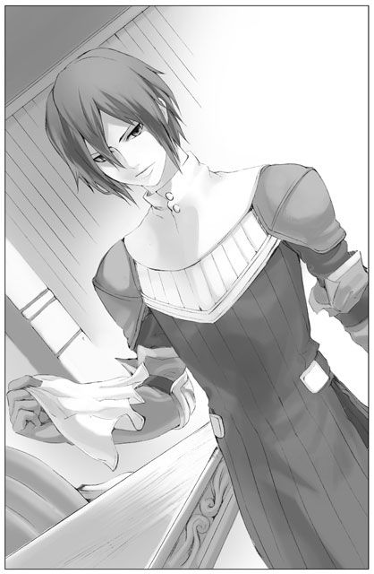
「アシュートはどうしてここに？」
「ジークレストに呼ばれました。ジークレストとイーニアスはそれぞれ持ち場に戻るよう言ってあります。あなたが目覚めたことはすぐに伝えますからご安心を」
ユーナは頷いた。それから周囲を見渡して、なによりも大切なリストが見当たらないことに気づく。慌てた様子を見たアシュートは、ユーナがなにを探しているのかすぐに分かったようだ。
「署名ならこちらにあります」
側の机に置いてあったリストを取り、ユーナに手渡してくれた。それを抱えてユーナはほっと息をつく。
「ずいぶんたくさん集められましたね」
「あ、う、うん」
そういえば自分が署名運動に参加していることをアシュートにはまだ伝えていなかった。それを知って怒っているのかと恐る恐る様子を見るが、どうもそういう感じはない。むしろいつもより落ち着いているかのように見えた。ジークレストが運動のことをすでに知っていたように、アシュートの耳にもとっくに届いていたのかもしれない。
「今後もまだ運動を続けるおつもりですか」
「うん」
焼け石に水だと言われても止めるつもりはなかった。この署名は、ユーナにとって支えのようなものだ。デュオを助けたいという思いが挫けないための大切な支え。
「アシュート、あのね」
ユーナは真っ直ぐアシュートの瞳を見つめた。その視線を受けたアシュートもしっかりユーナを見つめ返す。
「......はい」
「私、少し分かった気がするんだ。アシュートが立場上デュオさんを許すことができないって言った意味。人の命がかかった場面で立場なんて関係ないって言っちゃったけど、それって勝手な言い分だった。......私は最初、アシュートが自分を押し殺してまであるべき『第一神聖騎士』でいようとしてるの見て、おかしいって思ったの。もっと自分を大切にして欲しいって思ったよ。でもこの間、姿見せの儀式の時に気がついた。私やあなたを心の拠り所にしている人が本当にいるんだって。アシュートは、そういう人たちのために頑張ってるんだよね」
アシュートは口を挟むことなく静かにユーナの話を聴いていた。
「今なら私も、聖女が背負っているものの重み、少し分かった気がする。アシュートの言いたいこともほんの少しだけど分かった、と、思う。......その上で色々考えてみたけど」
ユーナはベッドの上で姿勢を正した。そしてそのまま深く頭を下げる。
「やっぱり、デュオさんを助けたいっていうのは譲れない。お願いします、力を貸してください」
「......」
緩やかに流れる沈黙。
その沈黙に居たたまれなくなった頃に、やっとアシュートが口を開いた。
「返事をする前に、あなたに話さなければならないことがあります」
肯定でも否定でもないアシュートの言葉。ユーナは戸惑って顔を上げた。一体なにを話そうというのか。
不安げに押し黙るユーナの肩に自身の上着をかけて、アシュートは側の椅子に腰を下ろした。
「まず、私がデュオの釈放に協力するとしても、私だけでは力が及びかねます。シェリアスティーナ様ご自身のお力が強すぎるためです。あなたに歯向かった者は即刻処罰する、それが絶対なのです。それを覆すとなると、......そうですね、政治方面に強いライナス殿や宗教方面に強いヨデル殿の協力も欲しいところです」
「ライナスのことは、絶対どうにかしてみせる。力を貸してくれるまで何度だって会いに行くよ」
ライナス殿のことはいいのです、とアシュートは首を振った。
「問題はヨデル殿のこと」
「ヨデルさん？ だって、ヨデルさんは自分からデュオさんを助けるために動いてくれてるんだよ。知ってるでしょう」
「それはデュオの釈放が目的ではありません」
「えっ？」
「今度のことは、あなたの権威を失墜させるためにヨデル殿が仕組んだこと。デュオがあなたを襲ったのも、ヨデル殿がけしかけてのことなのです」
「──っ」
ユーナは絶句した。全く想像もしていなかった話である。ヨデルが、デュオを、けしかけた？
「う、うそだ」
「嘘であはりません。デュオを処刑させることで皆のあなたへの悪感情を増幅させようとしていたのです。署名のことも同じ。皆の同情心を煽りたいだけだった。どのみち署名だけで彼の処刑は取り消せないと踏んでいたのです」
「嘘......！」
「ヨデル殿のあなたへの反発心はそこまで大きい。ヨデル殿はなんとかしてデュオを処刑させようとするでしょう。でなければ彼女の計画は崩れてしまうし、なによりあなたに屈することになってしまう」
ユーナは激しく首を横に振った。いくらなんでもそれは信じられない。ヨデルはいつだって皆の幸せを願っていたのではないのか？ ──そうだ、ナシャだって言っていたではないか、ヨデルは素晴らしい人だと。皆が幸せになりますようにと願ったナシャに優しく微笑んで、ペンダントをくれたのだと。そんな人が、自分の目的のために他人を犠牲にできるはずがない。
「シェリアスティーナ様、顔を上げてください」
きつくシーツを握り締めて俯いたユーナの肩からすべり落ちた上着を、アシュートがそっとかけ直す。
「ヨデル殿の意志は昔から変わっていません。今も彼女はただ国のことを思って行動している。それが少しずれてしまったのです。ヨデル殿も本当は、自分の進みつつある道が本来望んでいたものと離れつつあることに気づいている。──ですがもはや立ち止まることができない。その事実に彼女自身戸惑っているのではないかと思います」
「......」
ヨデルのあの眼差しを思い浮かべる。あの瞳こそが彼女の意志の表れなのだとしたら、とても強固で揺るぎない。そんな彼女が惑うことなどあるのだろうか。いつでも迷いなく突き進んで行きそうな彼女だというのに。
「問題はヨデル殿のことだけではありません」
アシュートは身を引き、再びユーナと距離を取った。
「もし仮に、私のほかライナス殿、ヨデル殿がともにデュオ釈放に向け動き出すとしましょう。すると表向きには、我々三人とシェリアスティーナ様が対立する構図になります。署名リストもあれば、王宮の民意も我々の陣営に加わる形になるでしょう。その中で、結局デュオが釈放されるとどうなるか。─皆は、聖女シェリアスティーナの意見が曲げられたと認識するはず」
アシュートの言いたいことはすぐに分かった。絶対の権力を誇ってきたシェリアスティーナが、初めて屈するということ。
「これまで誰にも止められなかった聖女を、我々三人が寄り集まれば止めることができる。もっと言えば、使用人でさえ束になれば聖女を押し込めることができるのだという印象を皆に与えることになります。これは反聖女派の人間にとっては非常に大きな『事実』です。ますます彼らを勢いづかせることになるかもしれない。......今となって考えてみれば、あなたが初めから鶴の一声でデュオを釈放していた方が反聖女派への影響は少なかったのかもしれません」
確かにその通りだ。しかしユーナが聖女の権限でデュオを釈放できなかったのは、反聖女派への影響を考慮したというよりも、デュオの自分への嫌悪感が激しかったからだ。それに──。
「いいんだよ、それで。聖女だからって、絶対的な権力なんてない方がいい」
ごく自然にその言葉が出た。アシュートは言葉を失いまじまじとユーナの顔を見つめる。
「本当はもうずっと、聖女に権力なんて必要なかったんじゃないかな。──きっと昔の人は、国のために生涯を捧げることになった聖女を思って、ある程度自由にさせてあげてたんだと思う。だけどそれと、わがままを通して人を傷つけることとは違う。そのための権力なんて、ない方がいいんだよ」
「それは......、そう、ですが」
アシュートはまだ混乱から抜け切れぬ様子で曖昧な相槌を打った。
「しかし、そう明示してしまうと、あなたの身に降りかかる危険の度合いは」
「大きくなるよね、きっと。でもそれは仕方がない......なんて、言える立場じゃないのは分かってる。だけど、これ以上、皆にとって恐怖の存在であり続けるのは止めにしたいんだ。そうでないと......」
きっと、戻って来られないから。ユーナは心の中でそう付け加えた。
胸の奥で「別の」感情が戸惑うように揺らめいている。怒っているような、怒りきれずに拗ねているような、複雑な感情だ。
「勝手なこと言ってごめんなさい。でも、それが私の思いだから」
ユーナは「二人」に謝った。アシュートはしばし黙り込み、軽く指を絡めた自分の手元に目線を落とす。が、やがてゆっくりと顔を上げた。
「......分かりました」
アシュートは署名のリストを手に取った。その最後のページに流れるようなサインをしてユーナに手渡す。
「ア、アシュート」
「それでは私もできる限りのことをしましょう。デュオ釈放のために、方々を説得してみます」
「──ありがとう！」
やっと聞くことができたその言葉に、ユーナは飛び上がらんばかりに喜んだ。
しかしアシュートはそんなユーナをじっと見つめ、それからどこか悲しげな微笑みを浮かべるのだった。
夕食はユーナの体調を気遣ってか、消化によさそうなものばかりがずらりと並んだ。とろみのある温かいスープをそっと口に運ぶと、なんとも言えない安堵のようなものが喉元を通り過ぎていく。しかし、美味しいとは思うけれど、どうしても食欲が湧いてこない。他にも二、三品を一口ずつ食べて、後は残してしまった。
夕食の後はイーニアスを呼んで、外出の供をしてもらうことにした。本来護衛はジークレストだが、これから向かう先に彼を連れて行った場合、彼がただ黙って控えてくれるとは思えない。その点イーニアスならば安心だった。貴重な自由時間をことごとく奪っていることを申し訳なく思うが、イーニアスはさほど気にしていない様子だ。むしろ頼られているという事実が彼にとっては嬉しいらしい。根っからの騎士道精神の持ち主なのだとユーナはこっそり感嘆していた。
これから向かう先というのは、ライナスの所だ。
ヨデルと話をする前に一人でも多く味方を得ておきたいという思いがある。自分一人が騒いだところでヨデルには相手にしてもらえそうもない。しかしアシュートやライナスがデュオ釈放に前向きと分かれば、ヨデルも首を縦に振ってくれるかもしれない。
ライナスの自室前まで来て、ユーナは深く息を吸った。そしてゆっくりと吐く。──ライナスはどんな目で自分を見るだろう。それを思うとどうしても緊張してしまうが、逃げ出したい気持ちを抑えて扉の前に立った。イーニアスには中に入らずここで待っていてもらうことにした。
震えそうになる手をどうにか持ち上げて、控えめに、けれどしっかりノックをする。
「......誰かな」
すぐに落ち着いたライナスの返答が返ってきた。
「シェリアスティーナです。入っても、いいですか」
「どうぞ」
ユーナは慎重に扉を開けた。扉の向こうのライナスは、広いソファにゆったりと腰かけ手の中のグラスをもてあそんでいる。
「来たか。体調はもういいのかい？」
「え？」
「聞いたよ、倒れたんだって。ずいぶん心労が溜まっていたんだろう。それも無理ないが」
なんと答えたものかユーナは戸惑った。こうして労わるような言葉をかけてもらえるとは思っていなかったのだ。
「まだ全快していないだろうから、早めに話を終わらせよう。どうぞ座って」
言われるがままにユーナも向かいのソファに腰を下ろす。
「あれだけ私に冷たくあしらわれたのに、まだ諦めないんだね」
「......諦めません。その、あなたが私の存在を認められないっていうのは、分かるんですけど。でも今だけは、それに目を瞑って欲しいんです」
「アシュート殿とは話をした？」
「はい。力を貸してもらえることになりました」
へえ、とライナスは面白そうに微笑んだ。
「──私もね、協力してもいいかなと思ってる」
「ほ、本当？」
「私の率直な思いは君に話したとおりだ。今でもデュオの件は私にとって問題ではないし、君がそこまで必死になるのも理解できない。しかし、そんな君を見ているのは案外面白いものだ。君の正体を暴くにしても、そのときまで君を部屋に閉じ込めて監禁したところで意味がない。それなら君の好きなようにやってもらってもいいかもしれないね」
それに、とライナスはグラスを傾ける。機嫌が良さそうなのはお酒を飲んでいるからだろうか。しかし彼は飲んでいてもいなくても態度にあまり変化はなさそうだ。
「アシュート君が君に協力するというのも興味深い。ここで私が反対してもつまらないし、......いいだろう、私にできることならやってあげよう」
ライナスは空いている方の手を伸ばした。ユーナが抱えてきた署名リストを渡せということらしい。まだこれがなんのリストかも説明していないのに尋ねもしないところをみると、やはり彼も事態を正確に把握しているようだ。
ライナスは胸元からペンを取り出し自らも署名をした。ペンを走らせながらユーナに話しかける。
「一つ、君に承知してもらわなければならないことがある」
「......ヨデルさんのことですか？」
ライナスは落としていた視線をわずかに上げてユーナを見た。
「アシュート君から聞いたんだね。まあつまり、そのことだ。こうして君が集めた署名には、私やアシュート君のものもある。見れば神聖騎士団の面々も署名しているようだな。ここまでくればこのリストもただの落書きではなく、十分効力を持つ『武器』になる。......しかしこの署名集め、シェリアは秘密裏に行っているのだろう？」
ユーナは頷いた。
「表向きにはヨデル殿が署名運動を行っていることになっている。ということは、これをきっかけにデュオが釈放されることになったとしても、その手柄は全てヨデル殿に持っていかれることになるよ。それでもいいのか」
アシュートが言っていたことと似ている。聖女の権力はこの署名でますます揺らぐ。代わりにヨデルが皆の信頼を勝ち取ることになる。──それ自体に異論があるわけではない。ただ、皆の信頼を得たヨデルがどのように動くのか、それだけは気になった。アシュートの言っていたことはやはり本当なのだろうか。自分に集められた信頼をもてあそぶようなことだけはして欲しくない。それについてはヨデルの気持ちを確かめなければならない。
「......今はただ、デュオさんを助けることができればと思っています」
「君は無欲な人間だな。変わってる」
やや呆れたような顔をしながら、ライナスはリストをユーナに返した。そしてふと思い出したように立ち上がる。
「ああそうだ、シェリア。忘れていたが」
次はなんだ。ユーナも同じく立ち上がり、怪訝な顔で様子を見守った。ライナスが歩み寄ってくるが、まるで意図が見えない。
「な、なに？」
戸惑うままに腕を取られて、そのまま引き寄せられる。あっと思った瞬間にはその額に口付けられていた。
「──なにするの！」
慌てて振り払い一歩後退さろうとしたが、後ろはソファだ。そのまましりもちをついてしまった。
「約束だっただろう？ 私に丁寧な言葉を使ったら、君に一回キスをすると」
微笑んでライナスがそう言い放つやいなや、激しい勢いで扉が開かれイーニアスが入ってきた。ユーナとライナスの間を割って入るように立ちはだかり、あっけに取られるユーナの手を取り立ち上がらせる。
「ご用件はもう済まされたようです。シェリアスティーナ様はまだお身体の調子が優れませんので、これで失礼させていただきます」
「イ、イーニアス」
ユーナがなにか言うよりも早くイーニアスによって廊下へ押し出されていた。背中にライナスの笑い声が降りかかる。
「私も適当に応援してるよ。頑張って、シェリア」
【10】
残るはヨデルだけだった。
やっとアシュートとライナスの協力を得られたのだ。ヨデルと向かい合うのは色々な意味で怖かったが、今更逃げるわけにはいかない。早く彼女に会いたい気持ちと会わずにやり過ごしたい気持ちがユーナの中でせめぎ合っていた。
ヨデルとの面会の約束はアシュートが取り付けてくれた。待ち合わせはヨデルの住まう塔の中ということで、そこまではアシュートが案内してくれるそうだ。面会の時間は間もなくやってこようとしている。
「シェリアスティーナ様、失礼致します」
ナシャの声に、ソファで署名リストに目を通していたユーナは顔を上げた。小さなカートを引いたナシャが遠慮がちに部屋へ入ってくる。
「あの、先ほど朝食を摂られたばかりで恐縮なんですけど、よかったらこちらをお召し上がりになりませんか？」
出されたのは今にもとろけそうなフルーツのムースだった。
「実はこれ、僭越ながら、その、私が料理人と一緒に作ったものなんです」
「ナシャが？」
「はい。こういったものでしたら、シェリアスティーナ様も召し上がれるかなと思って」
そうか、ここのところほとんど食べ物を口にしていなかった。今日の朝食もそうだ。侍女であるナシャもずいぶんと気にしていたに違いない。
「あっ、もちろん毒見も係の方にお願いしました！ 無理に召し上がっていただこうというわけではないんです。もしよろしかったら、なので」
「ありがとう。いただきます」
ユーナは微笑んでスプーンを手に取った。一すくいして口に運ぶ。見た目通り、口の中でムースは優しく溶けていった。
「おいしい。ナシャ、作るより食べる方が好きだって言ってたのに、作る方も上手いじゃない」
「そ、そんな話を憶えてらっしゃったんですか」
顔を赤らめてナシャは身を縮めた。
「......あの、シェリアスティーナ様」
「ん？」
「以前医療室で集めた署名、まだシェリアスティーナ様にお渡ししていませんでしたよね」
「そうだったね。そういえばあの時はありがとう。たくさん心配かけたのに、その上手伝ってもらっちゃって。でもすごく助かったよ。嬉しかった」
「いえ、そんな。......それなんですけど、ミズレーさんに医療室で保管してもらっているんです。今日は医療室にいらっしゃいますか？ その時にお渡しできれば、と思うんですが」
どこか歯切れが悪い。なにか言いづらいことでもあったのかとユーナは心配になった。そういえばここのところいろいろあって、医療室には顔を出していなかった。ナシャが言うからには、早めに行ってみた方がいいだろうか。アシュートとの約束までまだ少し時間がある。
「今から行ってみようかな。ナシャは時間平気？」
「は、はいっ。もちろん！」
やはりなにやら様子がおかしい。不思議に思いながらもユーナは席を立った。
医療室へ続く回廊は相変わらず静かで穏やかである。中庭の草花がさわさわと風に揺れ、空高くから陽射しを受けた木々はその影を回廊に映している。もう見慣れたその風景──のはずだったが、医療室の白い建物が近づくにつれかすかな違和感がユーナを取り巻いた。
いつもはしっかりと閉ざされていたはずの白い扉が、ほんの少し開いているのだ。
そしてそこから漏れ聞こえてくる笑い声──子供の声だろうか？ きゃあきゃあと、明るくはしゃぐ声が確かに聞こえてくる。
（なに？）
戸惑いに足が止まる。胸の中の「別の」感情も同じく戸惑っている。歩調を緩めたユーナに気づき、ナシャがそっとその手を取った。
「シェリアスティーナ様、参りましょう」
手を引かれ再び歩き出すと、ちょうど医療室の扉から一人の子供が飛び出してきた。十歳くらいの女の子だ。続いて、同じ年頃の少女がもう一人。
「待ってよ、私がやるんだったら！」
「だーめーよ！ 今度は私が包帯替えてあげるって、約束したんだもん」
はしゃぎながら、じゃれあっている。
その光景をぽかんとした表情で見守っていると、まもなく管理人のミズレーがゆったりとした足取りで姿を現した。
「ほらほら、あんまり走り回らないの。包帯を替えて欲しい人は何人もいるんだから、取り合わなくてもいいでしょう」
ミズレーの温かい笑顔はいつも変わらない。
「──あら」
駆け回る少女二人をうまく捕まえたところで、ミズレーはユーナたちに気がついた。驚いたように大きく目を見開いた後、穏やかな微笑を向ける。
「あらあらあら、シェリアスティーナ様。いらしてくださったのですね」
「......おはようございます」
ミズレーにまとわりついた少女たちは不思議そうな目でユーナを見上げた。それに気づいてそっと微笑みかけると、慌てたように少女たちはミズレーの背中に隠れてしまう。どうやら照れているようだ。
「あの、この子たちは？」
「ええ、こっちの髪の長い子がエミリ、クセ毛の子がアニーです。二人とも昨日から医療室で看護の手伝いをしてくれてるんですよ」
「手伝いを......？」
「はい、アシュート様のお心遣いで。中には他の子もいます。使用人たちのお子さんでね、こういうお世話に興味のある子たちを呼んでくださったんですよ。さあさあ、こんな廊下で立ち話もなんですし、部屋に入りましょう。中の子たちも紹介しますよ」
ほらご案内して、とミズレーに促され、少女たちはおずおずとユーナの手を取った。まだ少し不思議そうな表情を浮かべながらも、手を引っぱってくる。ユーナはその小さな案内人たちに引かれるままに、医療室の扉をくぐった。
──空気が先日までとまるで違う。
ユーナはすぐにそれを感じた。しかし空気に限らず、見た目にも様々な変化が起こっていた。数日前までシーツを頭から被ってユーナを避けていた患者たちがゆったりとベッドに腰かけているし、エミリやアニーのような子供たちが他にも何人か室内を駆け回っている。
（子供たちがいるだけでこんなに違うんだ）
アシュートも素晴らしい計らいをしたものだ。あれほど頑なだった患者たちが笑顔で子供たちと語らっている。そんな様子を眺めながら、ユーナは目の奥がじんと熱くなるのを感じていた。
入り口で棒立ちになっていたユーナに気づいた患者たちが、はっとしたように目を見開く。集まった視線にたじろいだユーナだったが──次の瞬間、温かい拍手が室内に溢れかえった。それが自分に向けられているものと悟って、ユーナはますます困惑する。
「ありがとう、聖女様」
子供たちの中でも一際元気の良さそうな五、六歳の女の子が、大きな声でそう告げた。それに倣うように、数々の「ありがとう」の言葉がユーナに投げかけられる。かつては目線を一瞬たりとも合わせようとしなかった患者たちも、穏やかな笑顔を浮かべ拍手で迎えてくれている。
こんな、こんなことって。
ユーナは目の前の光景が俄かに信じられず、ついミズレーやナシャに視線を投げかけた。が、彼女たちも微笑んで拍手を続けるばかりでなにも説明してはくれない。説明などいらない──これが、この光景が全ての答えなのだというように。
「はいっ、聖女様。これ、私たちの分！」
少女がユーナに冊子を手渡してくれた。──そこにはたくさんの署名がある。受け取ってユーナは驚いた。署名集めをしているのが自分だとは知られていないはずなのに。
「ねえっ、私、間違えないでちゃんとできたよ。えらい？ えらい？」
拍手の音が少しずつ小さくなっていく中、第一声でユーナを迎えてくれた少女が周りの大人たちの袖を引っぱった。偉かったねえ、すごいねえ、と皆に褒められて、少女は満足げだった。その少女を抱え上げ、「ほらっ、主役はお前じゃないんだから！」と十三、四歳の少年が慌てて部屋の隅へと連れて行く。それにあわせて患者たちの笑い声が響いた。
「どうです？ 皆もずいぶん良くなったでしょう」
ミズレーがにっこりと微笑んだ。
「あの......、はい」
なんと言っていいのか分からず、ユーナは小さく頷く。
「ごめんなさいね。今度の運動を頑張ってらっしゃるのがシェリアスティーナ様だと皆に話してしまったんです」
「えっ？」
「署名運動をしている美人さんの噂はここまで届きましてね。流れるような金の髪に紫紺の瞳の、とても優しげな表情をした方だって。──それってシェリアスティーナ様じゃないかって、皆すぐに分かってしまったんです。ですから隠し通せなかったんですよ」
ミズレーとナシャは互いに顔を見合わせ、いたずらっぽく笑った。だが、ユーナには今の状況を簡単に受け入れることができない。
「でも、そんな。こんなに温かく迎えてもらうなんて......」
いつかこんな風になればいいなと思っていたけれど、いざその光景を目の前にすると戸惑ってしまう。
「なに仰ってるんですか」
ミズレーは明るい声でユーナを遮った。そしてゆっくりと部屋を見渡し、目を細める。ユーナもつられて視線の先を追った。......空っぽのベッドがいくつもある。患者たちの数は、最初の頃の半分近くしかないようだ。
「残念ながら、確かに全員でシェリアスティーナ様をお迎えできたわけじゃありません。どうしてもシェリアスティーナ様のお顔を拝見できない、という人もやはりいましたから......。そういう人たちは退室許可をとって自宅へ戻ってしまいました。ですが、デュオさんのために一生懸命動いてくださったシェリアスティーナ様をお迎えしたいと待っていた者もこれだけいるんです。素晴らしいことですよね。人って強くて優しいものだと改めて実感しました。なんだか感激しちゃって、私」
ユーナはこの場にいる一人一人を確かめるように全体を見渡した。ユーナの視線を受け止めてくれる者もいれば、気まずそうに目を逸らす者もいる。シェリアスティーナのことを簡単に許せなくて当然だ。署名の一件だけでこれまでの事を水に流そうと思えるはずがない。きっとまだ、心の整理がつかず迷っている人も多いだろう。それでも今のユーナを応援しようと、こうしてこの場で迎えてくれた。ただそれだけでユーナには十分だった。皆の気持ちを、しっかり受け止めなくては。
「皆さんありがとうございます」
手渡された署名を強く握り締めた。大丈夫、頑張れる。きっと最後まで頑張れる。一方で「別の」感情はいまだ戸惑った様子でユーナに助けを求めている。大丈夫、皆の想いをそのまま素直に受け取めよう。今すぐには受け入れられなくても、シェリアスティーナもきっといつか分かる日が来るはずだ。
扉の側にはいつの間にかアシュートが佇んでいた。ユーナがこちらに来ていると聞いて迎えに来てくれたのだろう。ユーナは瞳にたまった涙を拭い、アシュートに頷いて見せた。行こう、ヨデルのところへ。
「シェリアスティーナ様」
ナシャが駆け寄ってきて、ユーナの手をそっと握った。その拍子になにかを手渡される。
「ヨデル様にお伝えください。私はヨデル様のお言葉を片時も忘れずこれまでやってきました、と。そして──シェリアスティーナ様ならば、きっとヨデル様の信念を共に支えてくださると」
ユーナは手のひらを開いてみた。姿を現したのは、あの紫のペンダントだった。
ヨデルが普段過ごしているのは、神官たちが集団で暮らす神官塔という背の高い塔の最上階ということだ。王宮の北東に厳かにそびえる塔は圧巻だった。外壁は真っ白に塗られ、無数の窓がくり貫かれている。ほとんど装飾らしい装飾はなく、塔の存在それ自体が周りを威圧していた。出入り口から真っ直ぐ石畳が伸び、その両脇をブリカという青の植物が固めている。
ヨデルは国でも最上位に座する神官一族の一員である。その一族の中でも特に力を持つのは女性なのだという。彼女の母や祖母はすでに亡くなっており、自然とヨデルが一族を引っ張る形になる。まだ若いその双肩にかかる重圧は相当なものだろう。だからこそ余計に、国を乱すシェリアスティーナの存在が許せなかったのかもしれない。
塔の中もやはりすっきりとしていた。一般の神官たちがまとうのは黒のローブだ。建物の白によく映えていて、ユーナは彼らの動きをつい目で追った。
上階への移動は壁沿いに設置された螺旋階段を使うらしい。ずいぶん遠回りをしないと上の階に行けないのだなとユーナは閉口した。たまにならばいいけれど、これを毎日往復するのは大変だ。
「神に近づくための道のりは容易ではないという考えを表しているのでしょう。それに上位の神官たちはあまり塔から出ませんから、それでも問題ないのだと思います」
アシュートが補足してくれた。そうか、確かに気軽に出入りできてしまっては威厳が保てないし、外界と多く接点を持つこともあまりよくないのだろう。となるとヨデルのように積極的に動き回っているのは珍しいことなのか。シェリアスティーナが王宮を乱していたから、体面を気にしてじっと塔に閉じこもっていることなどできなかったのかもしれない。
「アシュート様、シェリアスティーナ様、お待ち申し上げておりました」
ユーナたちを出迎えたのは立派な白髭をたくわえた五十代の男性だ。
「ヨデル様は塔内の祈堂にいらっしゃいます。そちらへご案内いたしましょう」
恭しく頭を下げると、ゆったりとした動作で踵を返し歩いていく。そのまま返事も待たず螺旋階段を上り始めたので、ユーナも急いで後を追った。行ってきます、とアシュートに小さく声をかける。アシュートは頷いてくれたがどこか心配そうだ。ここから先は、自分が頑張らなければ。ユーナはぐっと握り拳をつくって気合を入れた。
「こちらへ」
三階の踊り場から続く回廊を歩いていく。左右にいくつか扉があったが、案内されたのは突き当たりの大きな扉の前だった。両開きの背の高い扉だ。いかにも特別な部屋という雰囲気を醸し出している。これが祈堂なのだろう。祈堂というのは、教会よりももっと個人的に神へ祈りを捧げる小部屋のことだ。この塔内でも特に神聖な場所であると思われる。
案内役の男性はそこまででさがってしまった。ユーナは去って行く後ろ姿を呼び止めようと口を開いたが、結局は諦めて一瞬のためらいののちにノックをした。......音が扉に吸い込まれていく。あまりに扉が分厚いせいだろう、鈍いノックの音はまるで響かない。ユーナはゆっくりと扉を開いた。
中ではヨデルが祭壇に跪き、神に祈りを捧げているところだった。ちょうどユーナに背中を向けている彼女の表情はうかがえない。紫紺のローブの裾が白い床に広がっていて、越えられない境界線のように感じられた。細かな彫刻が寄り集まった祭壇は、そのヨデルを飲み込まんばかりの圧倒的な存在感で以って祈堂に鎮座している。
「......」
ユーナはただ黙って入り口に佇んだが、そうした時間はごくわずかで、すぐにヨデルが立ち上がってこちらを振り向いた。
「お待ちしていました」
抑揚のない声だ。だから却ってユーナは緊張する。これからやってくる嵐の前の静けさを思い起こさせるのだ。
「私に、なにか大切なお話がおありだとか」
ヨデルがゆっくりとこちらへ歩み寄ってくる。
「......あ」
ユーナは戸惑った。言葉が出てこない。なにを言っても一蹴されてしまうのではないか。そんな弱気な心がユーナから声を奪った。
「......投獄されているデュオのこと。そうなのでしょう？」
棒立ちのユーナに、ヨデルが切り込んだ。
「デュオの処刑に反対されているという、その件」
ユーナはヨデルの目を見ながら頷いた。ヨデルに引っ張られる形で恐る恐る口を開く。
「デュオさんの処刑を取りやめにしたいんです。そのために、ヨデルさんの力が、必要で」
「私の力が？」
「そうです。デュオさんは、私が彼を釈放することに、とても抵抗感を持っているんです。だから私ではなく、周りの皆の力で、デュオさんを助け出すしかないと思って。ヨデルさんのように、影響力を持っている人に協力してもらいたいんです」
ヨデルは値踏みするようにユーナを眺めた。
「そんなことを本気で考えておられるのですか。だとしても、頼みに来る相手を間違っていらっしゃるのでは？」
「アシュートやライナスにも協力をお願いしました。二人とも、力を貸してくれると言っています。他にも神聖騎士団長や副長とか、たくさんの人が動いてくれてるんです。でもヨデルさんの協力がないと、難しくて」
「そういうことを言っているのではありません」
ヨデルは静かな声でユーナを遮った。
「アシュート殿に話を聞かれたのではないのですか？ 私が今回行ったことについて」
ヨデルはちらりと視線を滑らせた。その視線は、今はここにいないアシュートを非難しているようにも見える。
「......」
「本当ですよ、アシュート殿の言っていたことは」
開き直っているかのように、ヨデルは全く躊躇せずそう告げた。
「おそらくアシュート殿は本当のことしか言っていないでしょう。あなたがお聞きになったことはすべて真実。私は自分の目的のためにデュオを犠牲にした」
ヨデルの口からはっきりと告げられたことは、ユーナにとって大きな衝撃だった。アシュートが嘘をついているとは思えないのも確かだったが、それでもヨデルが人を駒のように扱うことを事実として受け止めたくない自分もいるのだ。
「そんな私に、デュオを助ける協力をして欲しいと？ 馬鹿馬鹿しいにも程があります。デュオを処刑に追いやろうとしたのがこの私。まもなくそれが実行されようとしているのに、ここで彼を助けるために動くはずがないじゃありませんか」
「でも、ヨデルさんが切り捨てようとしているのは、人の命なんだよ」
「──あなたにだけは、言われたくない」
表情のなかったヨデルに、初めて怒りの色が浮かんだ。
「ほかの誰に非難されようと、あなたにだけは、言われたくありません」
「ヨデルさんだって自分で分かってるんでしょう？ おかしいって思ってるんでしょう。デュオに死んで欲しくないと思ってくれてるはずだ」
「おかしいなんて思いません。私は絶対に退きませんよ。デュオには死んでもらいます」
「どうしてそこまで！」
「他に誰もやらないのだから仕方がない。誰もあなたを本気で止めようとしないのです。結局は長いものに巻かれている。このまま事態を放っておけばやがては王宮だけでなく国全体が疲弊していくでしょう、あなたお一人のために。ならば私が、その負の流れを断ち切らねばならないのです」
アシュート殿も勝手な人、とヨデルは言い捨てた。
「私には、弱い者に手を差し伸べる存在でいて欲しかったですって。あの人だってこれまでの状況がどれほど酷いものかよく分かっているはずなのに。聖女シェリアスティーナを放置して、ただ弱い者に手を差し出したところできりがない。何本手があったって足りやしないわ。自分ではそういう状況を打破しようともしないで、動いた私には幻滅しただなんて」
そう言うヨデルはひどく傷ついているように見えた。それがユーナにはたまらなかった。
「アシュート殿は私ととても近いところにいる人だと考えていました。よく似ているのだと、勝手に思っていたわ。それも間違いだったようですけれど。彼は簡単にあなたを許してしまった」
それは違う、とユーナは首を振った。アシュートは聖女を許していない。だからこそ彼は、力を貸すと言ったときに悲しげな、やるせない微笑を浮かべたのだ。きっとアシュートの中には聖女に対する憎しみはいまだしっかりと根付いている。
「アシュートは、私のために力を貸してくれるんじゃない。アシュートが助けたいのは、私じゃなくてデュオさんなんだよ。それにヨデルさん、きっとあなたのことも」
ヨデルはユーナを睨みつけた。
「アシュート言ってたよ。自分の目指していた道と違うところへ向かおうとしていることに、ヨデルさんは自分でも戸惑っているって。きっとアシュートは、ヨデルさんに一度立ち止まって欲しいんだよ。今ならまだ引き返せるって思ってるんだ」
「知ったことを言わないで！ あなたもアシュート殿も、誰も私の考えなんて分かりはしないわ。勝手に決めつけてそれを押しつけないで」
ヨデルはユーナの言葉を振り切るようにローブの裾をはためかせ、祭壇にもたれかかるように手をついた。
「......ヨデルさん」
ユーナは背中を向けたヨデルに一歩足を踏み出した。
「デュオさんを処刑して、怒りで皆の気持ちを押し上げないで。デュオさんが助かれば、自分たちの声が聖女を動かす原動力になったって、皆も希望を持つことができるはず。怒りより、希望の方がいいよ。そうでしょう？ ......ヨデルさんが皆の署名を集め始めてくれたんだよね？」
「......署名なんて。それほど多く集めたわけでもないし、有力な人間には端から声すらかけていません。私にとっては、王宮の使用人にも今回の処刑に『参加』してもらうための小道具にすぎないわ」
「ヨデルさん！」
ユーナはヨデルに詰め寄り、無理やり彼女を振り向かせた。驚くヨデルの手に抱えていたリストを押しつける。
「それを見て」
「これは......」
ヨデルはすぐにそれが署名の山であることに気づいたようだ。ぱらぱらとめくって、黙り込む。
「皆から集めた署名だよ。これだけたくさん集まったの。もちろん聖女の名前で書かせたんじゃない。皆は、ヨデルさんが運動を支えているって聞いたからこうして署名してくれたんだ。私からの制裁が怖いって思ってた人も、ヨデルさんが味方にいてくれるならって署名してくれたよ。これだけ多くの人がデュオさんを助けたいと思っていて──、そしてヨデルさんを信頼してるんだよ」
ヨデルはリストを取り落とした。それが床に叩きつけられる乾いた音がヨデルとユーナの間を割る。すぐにヨデルはリストを拾った。それはほとんど無意識の動作に違いなかった。
「お願い、ヨデルさん。どうかデュオさんを助けて。お願いだから......！」
「できません！」
ヨデルは叫んだ。その悲痛な声は、自分の中の迷いを断ち切ろうとしているかのようだった。
「私は間違っていません。この国をよりよいものにすることが、昔も今も変わらない私の信念です。ずっとそのためにやってきたのです！ 国全体の発展を考えるべき人間は、目の前の小さな出来事に囚われてはならないのです！」
「今も昔も変わらない？ 本当にそうなの？ 本当に昔から、そんな風に考えていたの？」
「──黙って！」
小気味のよい音が、堂内に響き渡った。
沈黙。ユーナもヨデルも一瞬呆けた。共に、今なにが起こったのかとっさには分からなかったのだ。その後にユーナは自分の左頬がじわじわと熱を持ってくるのを感じた。
「あ......」
さすがのヨデルも、ユーナに手を上げてしまった自分に驚いているようだ。ユーナが改めてヨデルに視線を向けると、わずかにその身を強張らせた。
ユーナは黙ってドレスのポケットに潜ませていたハンカチを取り出す。その動きを見守るヨデルも無言だ。畳まれたハンカチをゆっくりと広げていくと、紫の宝石が美しいペンダントが姿を現した。
「ヨデルさん。これ、憶えてる？」
「......」
差し出すと、ヨデルはのろのろとした動きでそれを手に取った。
「......なぜあなたが、これを持っているの」
「憶えてるんだね」
ユーナは幾分ほっとした気持ちになった。忘れていない。憶えているのだ。
「あなたが昔これをあげた女の子、今は私の侍女をしてくれてるの」
「......」
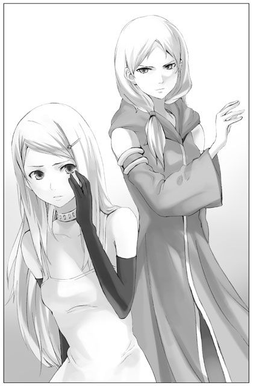
「ナシャっていうんだけどね。ナシャは昔教会で出会って言葉を交わしたあなたのことをずっと尊敬していて、私にもその時の話を嬉しそうに教えてくれたんだ。もちろんナシャは今でもあなたのことが大好きだよ。今日私があなたに会いに行くって知って、このペンダントを貸してくれたんだ。そして、あなたの言葉を片時も忘れずこれまでやってきたと伝えて欲しいって」
「......」
「ヨデルさん、あの時教会でナシャにこのペンダントをあげた理由、憶えてるよね？ どうして毎日教会に足を運ぶのとあなたはナシャに聞いた。ナシャは、友だちも知らない人も、全ての人が幸せに暮らせるように願うためだとあなたに答えた。あなたは──、『いつまでもその優しい気持ちを忘れないでね』って、言ったんだよ」
「やめて......、やめて！」
ヨデルは両手で頭をかかえ、よろめいた。
「こんなやり方してごめんなさい。だけどヨデルさんは自分に嘘をついてるんじゃない？ 私もきっと、ヨデルさんは昔も今も変わってないと思うよ。だからこそ、本当はデュオさんを犠牲にするようなやり方に苦しんでるんだと思う。それでもヨデルさんは、デュオさんを許すことが私に屈することになると考えてるから、デュオさんを許すことができないんだ」
「そんなのじゃない......」
「私は初めからヨデルさんに勝てるなんて思ってない。勝ちたいと思ってるわけでもない。大事なのは勝ち負けじゃないよ。誰が正しいとか間違ってるとか、そういうのでもない。自分がなにを信じるか、きっとそれが大切なんじゃないかな。だから私は、ヨデルさんの信念と、それをずっと支えてきた強さを見習いたいと思った。だって私、すごく弱くて。すぐ状況に流されて、諦めたくなる。いつの間にか人に助けてもらうことばかり考えて、本当に情けないよ」
それじゃ駄目だと気がついたのは、つい最近のことだった。
「やっと少し、自分がやりたいことややるべきことが見え始めたんだ。これからのことを考えたらね、ヨデルさんみたいな強さを持てれば、私にも少し違う世界が開けるかもしれないって、思ったの」
シェリアスティーナにも、違う世界が。
「だから私、ヨデルさんにも自分が本当に信じる道を歩いてほしい」
「お願い、やめて......」
そう言ってヨデルは顔を背けた。再び祭壇に向かい、黙り込む。先ほどまではヨデルの自信の象徴にも思えた立派なローブも、今では彼女の背中に覆い被さる孤独と惑いの塊のように見えた。
「......ヨデルさん」
声をかけても、もうヨデルは答えない。
「私、もう行くね。......その署名はヨデルさんに預けます」
祈堂の扉に手をかけて、ユーナはもう一度振り返った。息を呑むほど荘厳な部屋に、ヨデルの小さな背中はひどく頼りない。実際ヨデルは超人でもなんでもない、一人の若い娘なのだ。
「......」
ユーナはそっと扉を閉めた。
長い螺旋階段を降りる途中、塔の入り口でアシュートが待っているのに気がついた。
アシュートは、ユーナの姿を認めてほっとしたような表情を浮かべる。もしかしてずっと待っていてくれたのだろうか。ユーナが足を速めると、それに気づいたアシュートがゆっくりとこちらに歩みよってくる。
目の前で立ち止まりアシュートを見上げると、張りつめていた気持ちがやっとほぐれていく気がした。
ユーナは少し微笑み、ありがとう、と呟いた。
【11】
アシュートがこの牢屋へ足を運ぶのはこれが初めてだった。
ここはもともと、王宮内で問題を起こした者の一時的な収容所に過ぎない。普段は誰も出入りしない忘れられた空間だ。たまに投獄される者がいたとしても、数日のうちには然るべき所へ移送される。数週間もこの牢屋に留まった人間は、きっとデュオが初めてだ。
そのデュオは、どんな気持ちで時を過ごしていたのだろう。
そう思いながらも、アシュートには彼の中に渦巻く感情が少し分かるような気がしていた。愛しい者を失う悲しみや、助けられなかった苦しみ。いや、きっとそれ以上だ──まるで自らこの手にかけてしまったかのような、深く激しい自責の念に苛まれているに違いない。もう二度と立ち上がれないと、そう思って──。
（デュオも、助かりたいとは思わないだろうな）
人は言う。もっと生きたくても叶わなかった者もいるのだから、命を粗末にしてはいけない、生きていること自体を喜ぶべきだ、と。しかしそれは勝手な話だ。死にたくても叶わない人間の苦しみは、なぜ考えてくれない？ なぜ真逆の立場の人間と比べられなくてはならない？ 後ろを向いているのはよくないと無理やり前を向かされたところで、自らの足が一歩を踏み出せるとは限らない。
死を望むほど心に傷を負った人間が自分の中に希望を見出せることは、きっとほとんどないのだ。そんな人間が、もう一度立ち上がることができるとすれば......。
地下へ続く階段を降り、アシュートは牢屋を見渡した。細長い通路が奥へと続いている。高い位置にある窓から光が差し込み、思ったよりも空気が澄んでいる。
デュオは一番奥の部屋にいると聞いた。しかし人のいる気配はほとんど感じられない。それは単に、彼が身じろぎ一つしていないからではない。彼は命を手放しかけているのだ。彼の心が、死にかけている。アシュートはしっかりとした足取りで通路を歩いて行った。
「......デュオ」
すぐに辿り着いた奥の部屋では、デュオが頭を垂れてうずくまっていた。膝を抱えるようにしてわずかも動かない。あの日聖女に襲いかかったときと比べ、その身体が一回り小さくなったように見えた。
「君を釈放しに来た。──今日この時を以って君は自由の身だ」
デュオの返事はない。顔を上げようともしない。
「......そこから出たくないか？」
アシュートは落ち着いた声を崩さなかった。
「そのままそこで朽ち果てるか」
救いの手を差し伸べるつもりはない。だからといって突き放すつもりもない。
「なにもせず、ただそうして座り続け、それで死ねば本望か」
「......うるせえ」
小さくデュオの声がした。
「どうしたいのか、聞かせてもらわなければならない」
「分かってんだろう、俺が望むのはシェリアスティーナの死だ。あいつへの復讐だけが俺の願いだ」
「まだそんなことを言っているのか」
「なんだとっ......」
アシュートはゆるりと首を振った。
「シェリアスティーナ様を手にかけることは、もはや叶わない。その事実をまず受け入れるのだな。私が聞いているのはその先のことだ。シェリアスティーナ様への復讐が不可能と分かった今、君はどうしたいのか。死ぬか、それとも生きるか。死ぬのならば、なんのために」
「......っ」
「死んだ妻の後を追いかければ、お前の妻は喜んでくれると思うのか」
「黙れ！ そういう言い方が一番ムカつくんだよ！ お前になにが分かるんだ。結局お前もシェリアスティーナのお仲間だろうが。ぬくぬく育った坊ちゃんが、知ったかぶって綺麗事抜かしてんじゃねえ」
デュオは初めて顔を上げて、アシュートに激しく噛みついた。その様子を見てアシュートはわずかに目を細める。
「人は皆、それぞれ苦しみを抱えている。自分だけが不幸だと思うのなら、それこそ知ったかぶりというものだろう」
「てめえ」
「日に、いったい何人の人間が死ぬと思う。何百何千という数の人生が毎日失われているんだ。そのたびにその人の『死』を思って嘆き悲しむ者たちが大勢いる」
「リノと俺のことは、その中の一つに過ぎないって言いたいのか」
「そうだ」
激しく鉄格子を揺さぶる音が牢全体に響き渡った。
「なにも知らないくせに......！」
「では逆に聞こう。君は今もどこかで失われていく人生のなにを知っている？」
「──っ」
「毎日繰り返されているんだ、人を失う悲しみはな。それでもほとんどの者は、変わらず毎日を過ごしている。それはどうしてだと思う。悲しみがそれほど深くなかったからか。そうじゃない。──他にも、守るべき大切なものがあるからだ」
自分がもう一度顔を上げてみようと思えたのも、それに気づくことができたからだ。
「君は他になにもないのか。ないと言うなら、そう思い込んでいるだけではないのか。君にとっては妻リノが全てと言うかもしれないが、ほんのわずかでも、他に大切なものがあるのではないか。それから目を逸らし、死者の声を己の中に見出して命を絶てば、本当に満足なのか」
ぐっ、とデュオは唇を噛んだ。
「もしこの世に自分一人きりになったら、その時君は命を失うことを少しも恐れはしないだろう。だが今君は一人じゃない。まだ......死ねないのではないか。苦しいかもしれないが」
「俺は」
弱々しいデュオの声。
「リノを失っては、生きていけないんだ」
その答えに、わずかな迷いが含まれていた。
「デュオ、知っているか。君を助けるために王宮全体で署名運動が行われたことを」
「......」
「最終的に、君と同じ使用人の立場の者からは約八割の署名が集まった。その全員が、本気でお前を助けたくて署名をしたわけではないだろう。中には、周りに流されてなんとなく署名をした者や、上司に倣って仕方なく署名をした者もいたかもしれない。だが、自分の命に代えても君を助けたいと願った者の署名もきっとある」
アシュートは懐から折りたたんだ紙を取り出した。丁寧に広げ、それをデュオへ渡す。
「そこには君の母親の署名もある。文字がひどく震えているのは、この署名が君を救うことを強く願うあまりのことだろう」
「──っ」
鉄格子越しに嗚咽が響いた。アシュートはそっと瞳を閉じる。
「確かに、俺にはまだ、家族も仲間もいる。だが」
「自分だけが助かるのは許せないか」
「そうだ、許せない。俺は、自分を」
それはあまりに痛々しい呟きだった。
「......確かに、君の妻は助からなかった。それに他にも理不尽に命を奪われた者はたくさんいる。しかしだからこそ、今回署名に参加した者の想いが実を結ぼうとしているのは、尊いことなのではないか。それを自ら潰してしまってもいいのか」
「そうやって、自分が生き残ることを正当化したくない」
「そうだな。自分だけが助かったという思いは君を長く苛むだろう。君を想う者たちの存在もしばらくは重荷になるかもしれない。だが」
アシュートは言葉を切った。
「いつかはそれが君の支えとなる日が来るはずだ」
沈黙が広がった。デュオのむせび泣く声だけが小さく響いていた。アシュートはもうそれ以上なにも言わず、黙ったままデュオを見守った。
そして。
「......シェリアスティーナに、伝えてほしい」
デュオがぽつりと呟いた。
「リノのことを、ずっと憶えていてくれと。そしてもう絶対に、同じことを繰り返さないでくれと」
アシュートはしっかりと頷いた。
これからの道のりこそが、きっと険しく苦しいものになるだろう。それを自分は知っている。だがいつかそれを乗り越えた先に、心を動かすなにかが広がっていると──それを自分も、願っている。
そしてこの日、デュオは数週間ぶりに釈放された。
久しぶりに太陽の下に立ったデュオは眩しそうに目を細めていた。そんな彼を多くの人たちが歓声を以って出迎える。おそらく彼の親族、友人──そして署名運動に参加した名も知らぬ仲間たち。たくさんの娘の手によって祝福の花びらが華やかに撒かれ、場は祭りのような雰囲気に包まれた。
ユーナは一人、それを遠くから眺めていた。
結局ヨデルは力を貸してくれた。そしてふたを開けてみれば、ほぼ満場一致の決定でデュオの釈放が決まったのだった。聖女シェリアスティーナが反論を挟む余地は一切無く、今回ばかりは彼女の力もまるで意味を成さなかった──と、表向きにはそう見えた。
それでよかったのだと、ユーナは思っている。
その場を離れ、人通りの少ない回廊までやって来たところで、ナシャが駆け寄ってきた。そして興奮気味にユーナの手を取る。
「シェリアスティーナ様！ ついにデュオさん、釈放されましたね。おめでとうございます。そしてお疲れ様でした！」
「うん。ありがとう、ナシャ」
「あと、これ。どうもありがとうございました」
ごそごそとスカートのポケットを探って、あのペンダントを取り出す。
「今朝、ヨデル様から返していただいたんです」
「ヨデルさんから？」
「はい。シェリアスティーナ様が、ヨデル様に私のことを話してくださったんですよね。なんだかありがとうって言われちゃいました」
「そっか」
「少し、お疲れ気味のようでしたけど。ヨデル様も、いろいろと悩んでいらっしゃったんでしょうか」
「......そうだね。でも、ヨデルさんならきっと大丈夫だよ」
頷いたところで、遠くから人影が駆け寄ってくるのが目に入った。誰だろうと見ていると、次第に大きくなるその影はイーニアスである。
「──シェリアスティーナ様！」
「どうしたの、イーニアス」
「よかった、あの人ごみのどこにもいらっしゃらなかったので。お一人でどちらへ行かれるのです？ ぜひ俺を供にお連れ下さい」
「え、う、うん。でも大丈夫だよ」
ユーナはあいまいに言葉を濁した。デュオを解放するまではライナスの命令もあって一緒にいてもらったが、それが終わってまでイーニアスを連れまわすもりはなかったのだ。彼の親切心に付けこんでいろいろな場所へついてきてもらったが、正式には彼はまだユーナの護衛ではない。
そんな思いが顔に出てしまったのか、途端イーニアスが表情を曇らせた。
「......シェリスティーナ様、もしかしてご迷惑ですか。俺が護衛をさせていただくのは」
「ううん、そんなことないよ！ イーニアスが一緒にいてくれるとすごく安心する」
慌てて首を振り、精一杯の笑顔を見せる。そんなユーナの笑顔に、イーニアスはみるみる顔を赤らめた。あらあら、と側で成り行きを見守っていたナシャが小さく呟く。
「？ どうしたの、イーニアス」
「な、なんでもありません。すみません」
「まあいいや。私、ちょっとその辺りを散策して帰るね。たまには一人で歩いてみたいかなって。日が落ちる前には必ず帰るから」
「その辺りとは......どちらへ？」
ユーナを一人で歩かせたくないらしいイーニアスは、なおも食い下がる。
「大丈夫、王宮の中庭とかその近くだよ。遠くには行かない」
苦笑しながら手を振ると、ようやくイーニアスも引き下がった。ナシャもそんな様子を笑いながら見守っている。
歩き出して、ユーナは口にできなかった言葉を心の中で呟いた。
──本当は、アシュートに会いに行きたかった。
今回デュオを解放するためにいろいろと動いてくれたアシュートに、目的が達成された今、改めてお礼を言いたいと思った。それに、彼の中にはシェリアスティーナに対するわだかまりがまだあるはずだ。それを押し殺してユーナに協力してくれたと思うと、彼自身の気持ちが気がかりだった。
しかし逆に言えば、だからこそ自らアシュートに会いに行くのは気が引ける。彼は自分に会いたくないだろう。
（それは分かってるんだけど）
だからといってそう簡単に割り切れる話ではない。
（......なにがあったのかな、アシュートとシェリアスティーナの間に）
ずき、と胸の奥が痛む。「別の」感情だ。
そういえば、肝心なことはなにも知らずにこれまで過ごしてきた。シェリアスティーナはなぜ残酷な聖女となったのか。そして彼女はなぜ自殺しようとしてしまったのか。彼女から受けたアシュートの苦しみとはなんなのか。
（もっといろいろなことを知りたい。でも、知ったところで私になにかできるのかな。ますますアシュートを傷つけるだけかもしれない）
きっともうすでに彼を傷つけている。シェリアスティーナではなく、ユーナとしての自分が。
いつかアシュートが見せた淋しげな微笑みを思い浮かべた。その微笑みを思い出すと、無性に泣きたくなる。
その時、そんなユーナを気遣うかのように、優しい香りがふわりと鼻をくすぐった。
「......うわあ」
気づけばユーナは辺り一面に咲き誇る花畑の入り口に辿り着いていた。ここまでどうやって歩いてきただろうか。イーニアスたちと別れて、しばらく道なりに進んでいた。そして噴水のある中庭を通って──。
しかしそんなことはすぐにどうでもよくなった。赤、白、黄色、紫に水色──挙げきれないほど鮮やかな色の洪水。優しい風に吹かれてそよそよと揺れている花々は、とても幸せそうに見えた。そしてその幸せをあなたにも分けてあげたいというように、そっとユーナの足元をくすぐるのだ。
「きれい──」
出てくる言葉は、それだけだった。
それ以上の言葉はきっと要らない。
ずっとこの場に佇んでいたい。太陽が昇り、そして沈み、月が昇り、そしてまた沈むまで。それを一万回繰り返すまで。ずうっとこのまま......。
ユーナは花畑の中を歩いて行った。進めど進めど尽きることのない景色。やがて耐え切れず駆け出した。息が上がる。甘い花の生気を含んだ空気で、ユーナの胸がいっぱいになる。色鮮やかな花々に吸い寄せられるように、ユーナは倒れた。衝撃はほとんどなく、柔らかい大地がユーナを包んでくれる。ユーナは横たわったまま、少し身をよじって仰向けになった。頬をくすぐる花はそのままに、目の前には青い空が広がった。
「気持ちいい」
一つ息をついて、ユーナはゆっくり上体を起こした。そして目を瞑り、吹き抜ける風に長い間身を任せる。
そして──。
「シェリアスティーナ様」
静かな、そして穏やかな声がユーナの背中に降り注いだ。ゆっくりと振り返ると、そこにはよく見知った青年が佇んでいる。
「アシュート」
「こんな所にいらしたんですね」
アシュートは規則正しい足取りでユーナのすぐ側までやって来た。ごく自然に手を差し伸べてくれたので、その手を掴んでユーナは立ち上がる。アシュートの手は大きく、温かかった。
改めてアシュートと向かい合うと、ユーナはなぜだか胸がいっぱいになった。
「アシュート、あの......」
言いたいことや聞きたいことがたくさんある。しかしユーナは何一つ言葉にできなかった。思いがたくさんあり過ぎて、なにから伝えればいいのか分からない。どう言えばそれが伝わるのかも──。
握ったままの手に力を込めると、アシュートはわずかに目を見開き、それからどこか陰を感じさせる笑みを浮かべた。
そんな顔をしないで。そんな顔を、させたくないのに。
でも、どうしたらいいのか分からない。
「シェリアスティーナ様、足元にお気をつけて」
「え？ ──きゃっ」
視線を落としたアシュートに倣って足元に目をやると、小さな黒い塊がうごめいていた。とっさにユーナは足を引く。
「ど、毒虫」
こんなところにもいるなんて。ユーナはアシュートに縋りついた。そしてすぐさまアシュートを見上げる。
「殺すの？」
一番に言うべき言葉ではなかった。しかしユーナの中にまず思い浮かんだのは、礼拝の間で兵士たちがあっさりと毒虫を踏み潰してしまった、あの場面だったのだ。これまでずっと、それが強く強く心に引っかかっている。
ユーナの問いかけを受けて、アシュートは緩やかに頭を振った。その必要はありません、と落ち着いた声で答える。
「このまま放っておけばどこへなりと行くでしょう」
「でも......危険じゃないの？」
「これは毒虫じゃありませんから。似ていますが、全く別の種類です」
「別の？」
あまりにも意外な答えに、ユーナは高い声を上げた。
「ええ。燈火虫と言います。これは成虫になると、夜、明かりを灯す綺麗な虫になるのです。幼虫のうちは、外敵から身を守る為に毒虫と同じような皮を被っているのだそうですが」
「この虫が......」
ユーナはもう一度足元の黒い虫を見つめた。綺麗だとか美しいだとかいう言葉とは無縁の、気持ちの悪い虫にしか見えない。しかしそれは今この時だけ被っている、偽りの衣に過ぎないというのか。
「今年はもう、成虫になる時期は過ぎてしまいましたが。この花畑なら、最盛期はたくさんの光が舞ってそれは幻想的な光景になると思いますよ。......よろしかったら、来年いらっしゃいますか？」
来年。
ユーナはその言葉を噛み締めた。幾多の光が舞うその頃は、ちょうど自分が消えるくらいの時期だろうか。その時自分は、もうこの世にはいないかもしれない。
ユーナは瞳を閉じた。
降って落ちそうな満天の星の下。たくさんの仄かな灯りが、暗がりの中をぼんやりと舞っていく。一つ、二つ、三つ──とても数え切れないくらい。その中に佇んで、今と同じようにアシュートと一緒に過ごすことができたら。
「......うん、そうだね。来れたら、いいな」
再び目を開き、アシュートを見上げてにっこりと微笑んだ。今こうしてアシュートが隣にいてくれることがどれほど尊い奇跡なのかを、ユーナは改めて実感した。
そんなユーナを、アシュートはじっと見つめている。
「そうだ、アシュート。ここまで迎えに来てくれてどうもありがとう。嬉しかった」
やがてアシュートはゆっくりと頷き、同じように笑みを返してくれた。
「いつでも、どこへでも行きますよ。あなたを迎えに」
大きく風が吹き抜ける──。
その風に舞う花びらが、太陽の光を受けてきらきらと光り輝いた。
燈火虫はいつの間にか、消えていた。
あとがき
まずは何よりも、この本を手に取ってくださった皆様に感謝の気持ちを！ どうもありがとうございます！
ご存知の方も多いかとは思いますが、この作品はホームページ上で連載している、いわゆる「ネット小説」を本にしたものです。ごく平凡な女の子が突然王宮に召され、がらりと変わった環境に戸惑いながらも、少しずつ周りの人たちとの絆を深めていく......そんな、物語です。
こう書けば、いかにも女性向けファンタジーにありがちで王道なストーリーだなあと感じられる方も多いと思います。実際、私もそう思います。だけどそれでいいかな、なんて（開き直りではなく・笑）思っています。
もともと私が書きたかった物語が、まさにそういう王道まっしぐらなものでした。正確に言えば、王道をほんのちょっと外れた物語、でしょうか。改めて振り返ってみると、小中学生の頃に自分が読みたかった物語を今こうして書いているという感じです。
とはいえ、この「道果て」、連載当初はかなり適当なスタンスで書いていました。ホームページを立ち上げるのに作品が少ないのは良くない。何か作ろう！ の「何か」がこの作品だったわけですから。それ以上のことはほとんど考えていませんでした。あと少し考えていたことといえば、せっかく誰かに見てもらうのだからと、コメディ色が強くてイケメンがたくさん出る楽しい小説を......ということくらい。
それがいざ書き始めてみると、思っていたより話が広がっていったので自分でも驚きました。主人公ユーナも私が予定していた以上に生真面目に頑張るので、これは改めて色々なことを考え直さねばと、やっとしっかり腰を据える気になり。そうしたら、そこからどんどんシリアスな方向に話が向かって、もう止められなくなりました。コメディとたくさんのイケメンはどこへ......？ 白状してしまえば、結末さえきちんと決めずに書き始めた物語でしたが、今は私の中でしっかりと完結を迎えています。ユーナや周囲の人々がどこへ向かっていくのか、引き続き見守っていただければこの上なく幸せです。
この作品が書籍化されるにあたって、担当のＹ様には本当に本当にお世話になりました。出版まで（きっと）命を削るようにしてご尽力下さっただけではなく、どんな時でも明るく気さくに接して下さいました。日々どれだけ勇気付けられたことか！ 心から感謝しています。
イラストを担当して下さった岸田メル様も、本当にありがとうございました。「道果て」の世界を何倍にも膨らませてくれる素晴らしい（としかもう言葉が出てこない）イラスト、一日中でも見続けられる自信があります。絵を見て涙したのは本当に久しぶりの経験でした。
また、出版に係わって下さった全ての方々にもお礼申し上げます。ホームページに足を運び応援して下さった方々にも。もちろん、今こうしてこの作品を読んで下さっている皆様にも！ 改めて、たくさんの人に支えられているのだなあと実感します！
それでは、またご縁あって皆様にお目にかかれることを願って。
二〇〇八年二月
秋月アスカ
この物語はフィクションであり、実在する人物・団体等とは関係ありません
本作品の全部あるいは一部を無断で複製・転載・配信・送信したり、ホームページ上に転載することを禁止します。
本作品の内容を無断で改変、改ざん等を行うことも禁止します。
また、有償・無償にかかわらず本作品を第三者に譲渡することはできません。
●イースト・プレス刊 Ｒｅｇａｌｏレーベル、好評発売中!!
◆『つがいの歯車』（全１～３巻）
私を好きだと言わせてみせる！ 気がつくと何故かそこは異世界...!? 完全無欠な皇帝サマとの奇妙な結婚生活の行方は!?
◆『やおろず』（前・後編）
─ずっとしんじるからね。だからだいじょうぶ。ごくごく普通の女の子と、グダグダな神様たちが繰り広げるどたばた愛情物語！
◆『煌虹の末裔』（前・後編）
謎を秘めた可憐な少女＋犬１匹と、女好きな〈運び屋〉ライアが織り成すスタイリッシュ・ファンタジー！
この本を読んでのご意見・ご感想・ファンレターをお待ちしております。
〈あて先〉
〒1０１─００５１
東京都千代田区神田神保町２─４─７ 久月神田ビル７Ｆ
（株）イースト・プレス 「道果ての向こうの光」係
Ｒｅｇａｌｏ（レガロ）シリーズ
「Ｒｅｇａｌｏ」はイタリア語で「贈り物」という意味です。
皆様から届くあたたかな気持ちに、素敵な作品で応える。
贈り贈られ、めぐる物語。「Ｒｅｇａｌｏ」はそんなシリーズです。
書名：
道果ての向こうの光
著者名：
秋月アスカ
イラスト：
岸田メル
初版発行：
２００８年２月29日
電子版発行：
２０１２年10月４日
発行所：
株式会社イースト・プレス
住所：
東京都千代田区神田神保町２─４─７ 久月神田ビル７Ｆ
電話：
（０３）５２１３─４７１０